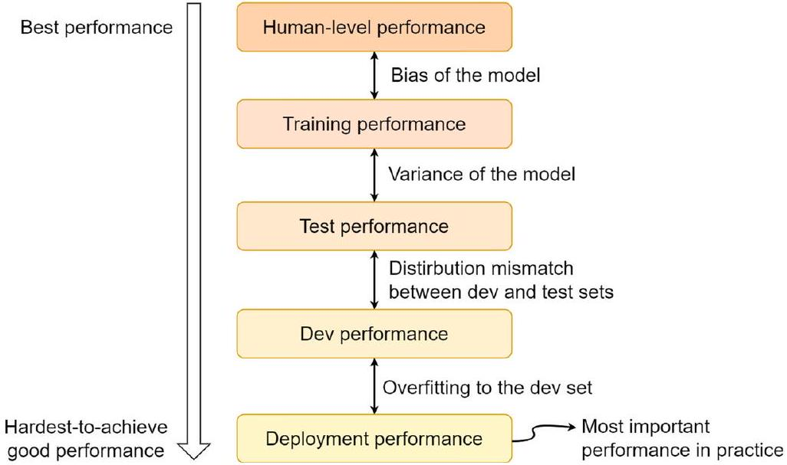
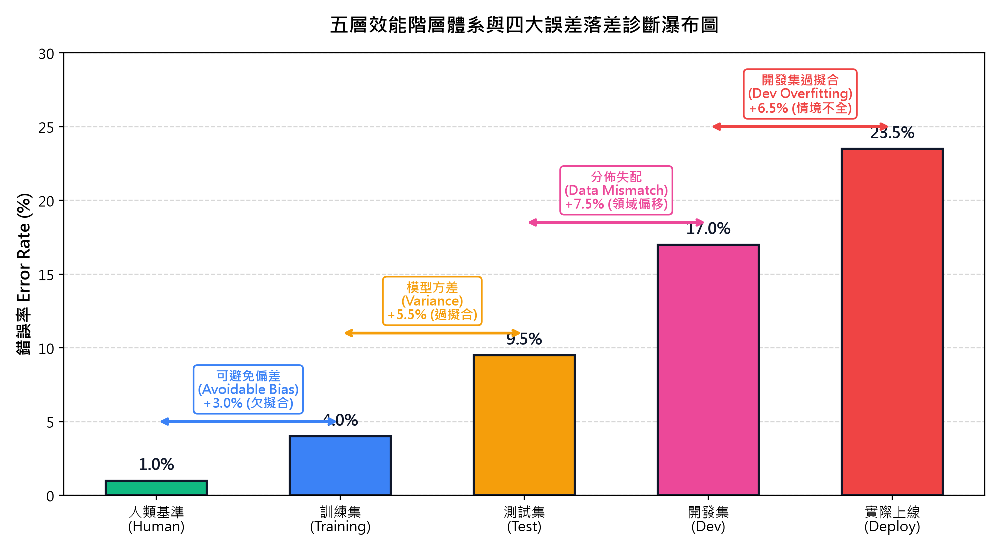
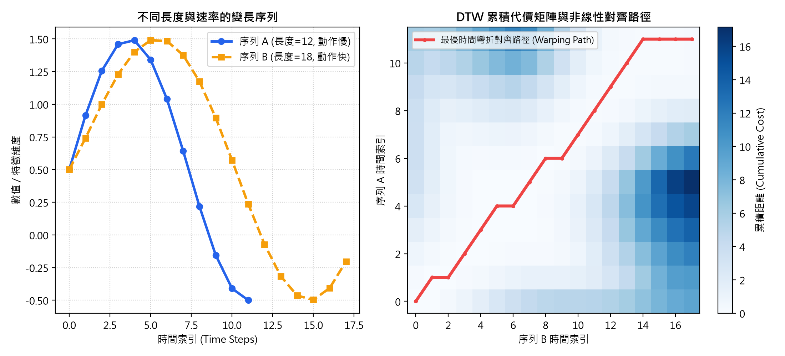
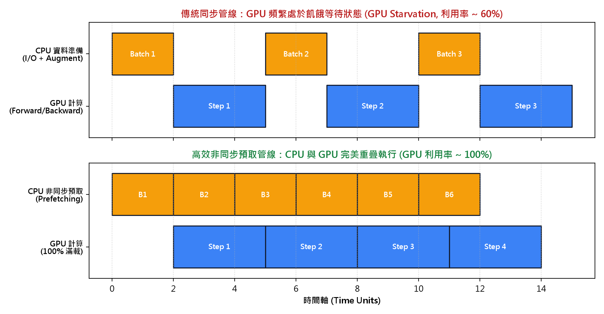
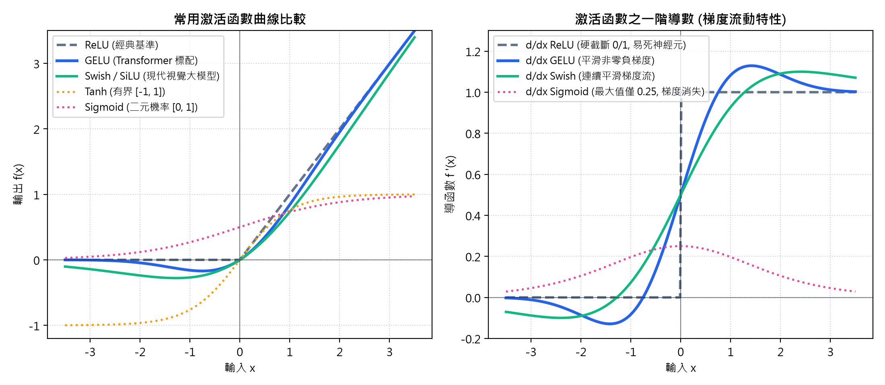
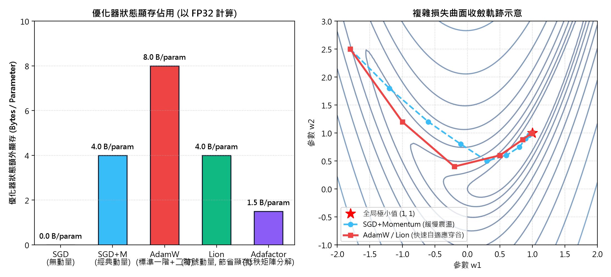
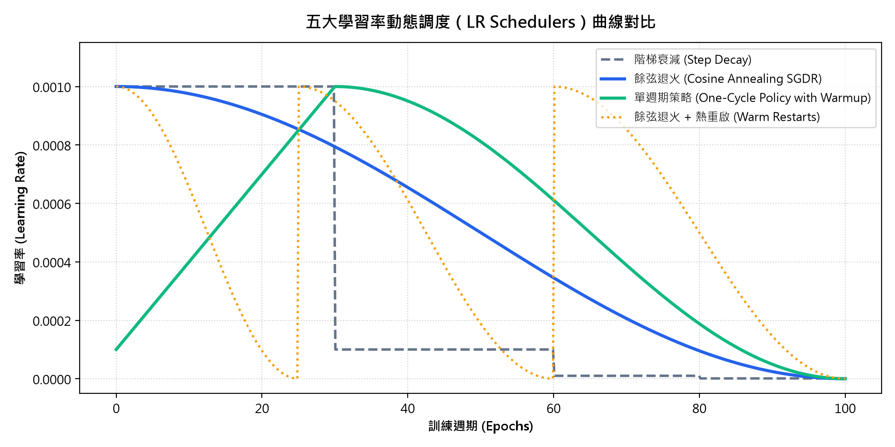
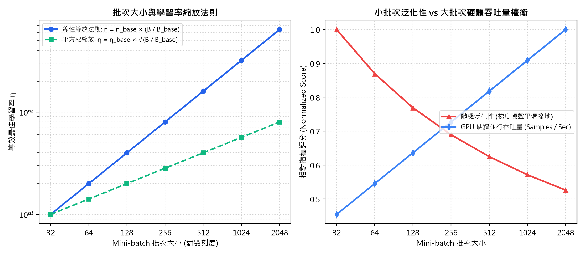
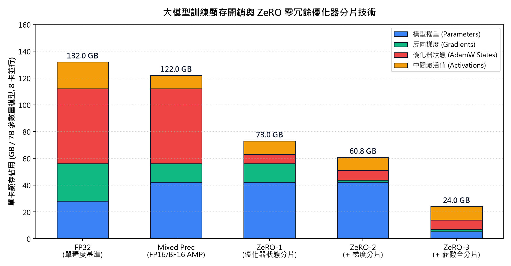

<!DOCTYPE html>
<html lang="zh-TW">
<head>
<meta charset="utf-8">
<meta name="viewport" content="width=device-width, initial-scale=1.0">
<title>Ch21 — 深度學習實務要領與工業經驗法則（Practical Tips in Deep Learning）</title>
<link rel="stylesheet" href="https://cdn.jsdelivr.net/npm/katex@0.16.9/dist/katex.min.css">
<script defer src="https://cdn.jsdelivr.net/npm/katex@0.16.9/dist/katex.min.js"></script>
<script defer src="https://cdn.jsdelivr.net/npm/katex@0.16.9/dist/contrib/auto-render.min.js"></script>
<style>
:root {
  --bg: #f8fafc;
  --card-bg: #ffffff;
  --text: #1e293b;
  --muted: #64748b;
  --accent: #2563eb;
  --accent-2: #1e40af;
  --card-border: #e2e8f0;
  --tag-bg: #dbeafe;
  --tag-txt: #1e40af;
  --ok: #16a34a;
  --err: #dc2626;
}
* { box-sizing: border-box; }
body {
  margin: 0; padding: 0;
  font-family: -apple-system, BlinkMacSystemFont, "Segoe UI", Roboto, "Helvetica Neue", Arial, sans-serif;
  background: var(--bg); color: var(--text);
  line-height: 1.65;
}
.page-head {
  background: linear-gradient(135deg, #0f172a 0%, #1e3a8a 50%, #2563eb 100%);
  color: #fff; padding: 36px 24px; text-align: center;
}
.page-head h1 { margin: 0 0 10px; font-size: 1.85rem; letter-spacing: .5px; }
.page-head .sub { font-size: 1.05rem; opacity: .92; max-width: 900px; margin: 0 auto; }
.layout {
  display: flex; max-width: 1380px; margin: 24px auto; padding: 0 16px; gap: 24px;
}
.toc {
  width: 320px; flex-shrink: 0; background: var(--card-bg);
  border: 1px solid var(--card-border); border-radius: 12px;
  padding: 16px; position: sticky; top: 20px; max-height: calc(100vh - 40px);
  overflow-y: auto; box-shadow: 0 2px 8px rgba(0,0,0,.04);
}
.toc h3 { margin: 0 0 12px; font-size: 1.1rem; color: var(--accent-2); }
.toc ol { margin: 0; padding-left: 0; list-style: none; font-size: .88rem; }
.toc li { margin-bottom: 8px; }
.toc a {
  color: var(--text); text-decoration: none; display: flex; align-items: baseline; gap: 6px;
  padding: 4px 6px; border-radius: 6px; transition: background .15s, color .15s;
}
.toc a:hover { background: #eff6ff; color: var(--accent); }
.toc-badge {
  display: inline-block; padding: 1px 6px; font-size: .75rem; font-weight: 700;
  background: var(--tag-bg); color: var(--tag-txt); border-radius: 4px; flex-shrink: 0;
}
.cards { flex: 1; min-width: 0; }
.card {
  background: var(--card-bg); border: 1px solid var(--card-border);
  border-radius: 12px; margin-bottom: 24px; overflow: hidden;
  box-shadow: 0 2px 6px rgba(0,0,0,.03); transition: box-shadow .2s;
}
.card:hover { box-shadow: 0 4px 14px rgba(0,0,0,.06); }
.card-head {
  display: flex; align-items: center; gap: 12px; padding: 14px 20px;
  background: #f1f5f9; border-bottom: 1px solid var(--card-border);
}
.card-head .badge {
  background: var(--accent); color: #fff; font-weight: 700;
  font-size: .82rem; padding: 3px 9px; border-radius: 6px;
}
.card-head .card-title {
  margin: 0; font-size: 1.15rem; color: var(--text); flex: 1;
}
.card-head .toggle {
  background: none; border: 1px solid #cbd5e1; border-radius: 6px;
  cursor: pointer; font-size: 1.1rem; width: 28px; height: 28px;
  display: flex; align-items: center; justify-content: center;
  color: var(--muted);
}
.card-body { padding: 20px; }
.card.collapsed .card-body { display: none; }
.kp-subtitle { color: var(--muted); font-size: .92rem; margin-top: 0; }

/* Quizzes */
.quiz {
  background: #f8fafc; border: 1px solid #e2e8f0; border-radius: 8px;
  padding: 14px 16px; margin-top: 16px;
}
.quiz-q { margin: 0 0 10px; font-weight: 600; font-size: .95rem; }
.quiz-opts { list-style: none; padding: 0; margin: 0 0 12px; }
.quiz-opts li { margin-bottom: 6px; font-size: .92rem; }
.quiz-opts label { display: flex; align-items: baseline; gap: 8px; cursor: pointer; }
.quiz-check {
  background: var(--accent); color: #fff; border: none; border-radius: 6px;
  padding: 6px 14px; font-size: .88rem; cursor: pointer; font-weight: 600;
}
.quiz-check:hover { background: var(--accent-2); }
.quiz-feedback { margin-top: 8px; font-size: .9rem; font-weight: 600; display: none; }
.quiz-feedback.ok { color: var(--ok); display: block; }
.quiz-feedback.err { color: var(--err); display: block; }

/* Progress Bar */
.progress-wrap {
  position: sticky; bottom: 0; background: #ffffff; border-top: 1px solid var(--card-border);
  padding: 10px 24px; display: flex; align-items: center; justify-content: space-between;
  box-shadow: 0 -2px 8px rgba(0,0,0,.05); z-index: 90;
}
.progress-bar-bg {
  flex: 1; max-width: 800px; height: 10px; background: #e2e8f0;
  border-radius: 5px; margin: 0 16px; overflow: hidden;
}
.progress-bar-fill {
  height: 100%; width: 0%; background: linear-gradient(90deg, #3b82f6, #10b981);
  transition: width .3s;
}
.progress-txt { font-size: .88rem; font-weight: 600; color: var(--muted); min-width: 90px; }

/* Diagrams & Images */
figure {
  margin: 18px 0; max-width: 100%; text-align: center;
}
figure img, .orig-fig img, .diagram-figure img {
  max-width: 100% !important; height: auto !important; border-radius: 6px; display: block; margin: 0 auto;
}
.diagram-figure {
  margin: 18px 0; text-align: center; background: #f8fafc;
  padding: 12px; border-radius: 8px; border: 1px solid #e2e8f0; max-width: 100%;
}
.orig-fig {
  margin: 18px 0; background: #ffffff; border: 1px solid #cbd5e1;
  border-radius: 8px; padding: 14px; text-align: center; max-width: 100%;
}
.orig-fig figcaption, .diagram-figure figcaption {
  font-size: .85rem; color: #475569; margin-top: 8px; font-weight: 500;
}
.diagram-caption {
  font-size: .85rem; color: var(--muted); margin-top: 8px;
}
.ai-illustration {
  margin: 16px 0; padding: 12px 16px; background: #faf5ff;
  border: 1px dashed #c084fc; border-radius: 8px; font-size: .86rem; color: #6b21a8;
}
.ai-illustration summary {
  cursor: pointer; font-weight: 600;
}
.ai-illustration pre {
  white-space: pre-wrap; font-family: inherit; margin: 8px 0 0;
}

/* Interactive Demo Panel */
.interactive-demo-card {
  margin: 20px 0; background: #ffffff; border: 1px solid #bfdbfe;
  border-radius: 10px; padding: 16px; box-shadow: 0 2px 8px rgba(37,99,235,.06);
}
.demo-title {
  font-size: 1.05rem; font-weight: 700; color: var(--accent-2);
  margin: 0 0 12px; display: flex; align-items: center; gap: 8px;
}
.demo-badge {
  background: #3b82f6; color: #fff; font-size: .75rem; padding: 2px 8px; border-radius: 4px;
}
.demo-instruction {
  background: #f8fafc; border-left: 4px solid var(--accent); padding: 10px 14px;
  border-radius: 0 6px 6px 0; margin-bottom: 14px; font-size: .88rem;
}
.demo-instruction p { margin: 4px 0; }
.demo-instruction strong { color: #0f172a; }
.demo-controls {
  background: #f1f5f9; padding: 12px 16px; border-radius: 8px;
  display: flex; flex-wrap: wrap; gap: 14px; align-items: center;
  margin-bottom: 14px; font-size: .88rem;
}
.demo-controls label {
  display: flex; align-items: center; gap: 6px; font-weight: 600; color: #334155;
}
.demo-controls input[type=range] {
  cursor: pointer;
}
.demo-val {
  font-family: monospace; font-weight: 700; color: var(--accent); min-width: 36px;
}
.demo-readout-inline {
  margin-left: auto; font-weight: 700; color: #0f172a; font-size: .92rem;
}
.demo-canvas-wrap {
  text-align: center; margin-bottom: 14px; overflow-x: auto;
}
.demo-canvas-wrap canvas {
  border: 1px solid #cbd5e1; border-radius: 6px; background: #ffffff;
}
.demo-readout {
  background: #f8fafc; border: 1px solid #e2e8f0; border-radius: 6px;
  padding: 12px 16px; font-size: .88rem; color: #1e293b;
}

/* Guide Modal */
.guide-btn {
  background: linear-gradient(135deg, #8b5cf6, #6d28d9); color: #fff;
  border: none; border-radius: 6px; padding: 7px 14px; font-size: .86rem;
  font-weight: 600; cursor: pointer; display: inline-flex; align-items: center;
  gap: 6px; margin: 12px 0; box-shadow: 0 2px 6px rgba(109,40,217,.2);
  transition: transform .1s, box-shadow .1s;
}
.guide-btn:hover {
  transform: translateY(-1px); box-shadow: 0 4px 10px rgba(109,40,217,.3);
}
.guide-flag {
  background: #fde047; color: #713f12; font-size: .72rem; font-weight: 700;
  padding: 1px 5px; border-radius: 3px;
}
#guide-modal {
  position: fixed; inset: 0; background: rgba(15,23,42,.65); z-index: 1000;
  display: none; align-items: center; justify-content: center; padding: 20px;
  backdrop-filter: blur(2px);
}
#guide-modal.open { display: flex; }
.modal-box {
  background: #fff; width: 100%; max-width: 860px; max-height: 88vh;
  border-radius: 12px; display: flex; flex-direction: column; overflow: hidden;
  box-shadow: 0 10px 30px rgba(0,0,0,.25);
}
.modal-head {
  display: flex; align-items: center; justify-content: space-between;
  padding: 14px 20px; background: #f8fafc; border-bottom: 1px solid #e2e8f0;
}
.modal-head h3 { margin: 0; font-size: 1.15rem; color: #1e293b; }
.modal-close {
  background: none; border: none; font-size: 1.4rem; color: #64748b;
  cursor: pointer; padding: 0 4px; line-height: 1;
}
.modal-close:hover { color: #0f172a; }
.modal-body {
  padding: 24px; overflow-y: auto; line-height: 1.7; font-size: .95rem;
}
.modal-body h1, .modal-body h2 { color: #1e293b; font-size: 1.25rem; border-bottom: 2px solid #e2e8f0; padding-bottom: 6px; margin-top: 18px; }
.modal-body h3 { color: #2563eb; font-size: 1.1rem; margin-top: 16px; }
.modal-body h4 { color: #0f172a; font-size: 1.0rem; margin-top: 14px; margin-bottom: 6px; }
.modal-body blockquote {
  border-left: 4px solid #8b5cf6; background: #faf5ff; margin: 12px 0;
  padding: 10px 16px; border-radius: 0 6px 6px 0; color: #581c87;
}
.modal-body table {
  width: 100%; border-collapse: collapse; margin: 14px 0; font-size: .88rem;
}
.modal-body th, .modal-body td {
  border: 1px solid #cbd5e1; padding: 8px 10px; text-align: left;
}
.modal-body th { background: #f1f5f9; }
.modal-body ul, .modal-body ol { padding-left: 20px; margin: 8px 0; }
.modal-body li { margin-bottom: 4px; }
</style>
</head>
<body>

<header class="page-head">
  <h1>Ch21 — 深度學習實務要領與工業經驗法則（Practical Tips in Deep Learning）</h1>
  <div class="sub">資料切割規範・五層效能體系・誤差診斷瀑布・資料管線吞吐・超參數選型・優化器全景・硬體與顯存極限優化</div>
</header>

<div class="layout">
<nav class="toc" id="toc"><h3>章節導覽</h3><ol>
  <li><a href="#kp1"><span class="toc-badge">1</span><span>深度學習實務要領概論與工業落地痛點</span></a></li>
  <li><a href="#kp2"><span class="toc-badge">2.1</span><span>訓練集、驗證集與測試集切割規範</span></a></li>
  <li><a href="#kp3"><span class="toc-badge">2.2</span><span>開發集（Dev Set）設計與真實分佈模擬</span></a></li>
  <li><a href="#kp4"><span class="toc-badge">3.1</span><span>五層效能階層體系與誤差分解</span></a></li>
  <li><a href="#kp5"><span class="toc-badge">3.2.1</span><span>可避免偏差診斷與欠擬合收斂對策</span></a></li>
  <li><a href="#kp6"><span class="toc-badge">3.2.2</span><span>模型方差診斷與過擬合泛化對策</span></a></li>
  <li><a href="#kp7"><span class="toc-badge">3.2.3</span><span>資料分佈失配（Distribution Mismatch）診斷與修正</span></a></li>
  <li><a href="#kp8"><span class="toc-badge">3.2.4</span><span>開發集過擬合與多情境真實泛化</span></a></li>
  <li><a href="#kp9"><span class="toc-badge">4.1</span><span>等長與變長序列資料處理策略</span></a></li>
  <li><a href="#kp10"><span class="toc-badge">4.2</span><span>端到端高效資料管線架構設計</span></a></li>
  <li><a href="#kp11"><span class="toc-badge">4.3</span><span>依據資料模態決策神經網路架構</span></a></li>
  <li><a href="#kp12"><span class="toc-badge">4.4.1</span><span>隱藏層與輸出層激活函數選用策略</span></a></li>
  <li><a href="#kp13"><span class="toc-badge">4.4.2</span><span>網路層數與深度決策</span></a></li>
  <li><a href="#kp14"><span class="toc-badge">4.4.3</span><span>現代優化器全景橫向評比與選型</span></a></li>
  <li><a href="#kp15"><span class="toc-badge">4.4.4</span><span>學習率設定與五大退火調度策略</span></a></li>
  <li><a href="#kp16"><span class="toc-badge">4.4.5</span><span>批次大小權衡與線性縮放法則</span></a></li>
  <li><a href="#kp17"><span class="toc-badge">4.5</span><span>硬體與記憶體效率極限優化</span></a></li>
</ol></nav>
<main class="cards">
<section class="card" id="kp1" data-kp="1">
  <header class="card-head">
    <span class="badge">1</span>
    <h2 class="card-title">深度學習實務要領概論與工業落地痛點</h2>
    <button class="toggle" type="button" aria-label="展開/收合" aria-expanded="true">−</button>
  </header>
  <div class="card-body">
    <div class="kp-content">
<!-- == Phase B kp-1 diagram == -->
<figure class="orig-fig" data-orig-fig="kp-1">
  
  <figcaption>原書圖 21.1：卷積神經網路應用於序列特徵提取之示意結構</figcaption>
</figure>
<figure class="diagram-figure" data-diagram-id="kp-1-svg">
  <svg viewBox="0 0 760 380" width="100%" height="100%" xmlns="http://www.w3.org/2000/svg">
  <defs>
    <linearGradient id="p1-grad1" x1="0%" y1="0%" x2="100%" y2="100%">
      <stop offset="0%" stop-color="#3b82f6" stop-opacity="0.2"/>
      <stop offset="100%" stop-color="#1d4ed8" stop-opacity="0.3"/>
    </linearGradient>
    <linearGradient id="p1-grad2" x1="0%" y1="0%" x2="100%" y2="100%">
      <stop offset="0%" stop-color="#10b981" stop-opacity="0.2"/>
      <stop offset="100%" stop-color="#047857" stop-opacity="0.3"/>
    </linearGradient>
    <linearGradient id="p1-grad3" x1="0%" y1="0%" x2="100%" y2="100%">
      <stop offset="0%" stop-color="#8b5cf6" stop-opacity="0.2"/>
      <stop offset="100%" stop-color="#6d28d9" stop-opacity="0.3"/>
    </linearGradient>
    <marker id="p1-arrow" viewBox="0 0 10 10" refX="6" refY="5" markerWidth="6" markerHeight="6" orient="auto-start-reverse">
      <path d="M 0 1 L 10 5 L 0 9 z" fill="#60a5fa"/>
    </marker>
  </defs>
  <rect width="760" height="380" rx="12" fill="#0f172a" stroke="#1e293b" stroke-width="2"/>
  <text x="380" y="32" font-family="system-ui, sans-serif" font-size="16" font-weight="700" fill="#f8fafc" text-anchor="middle">深度學習專案生命週期與實戰決策迴圈</text>
  <text x="380" y="52" font-family="system-ui, sans-serif" font-size="12" fill="#94a3b8" text-anchor="middle">從問題定義、指標建立到系統化迭代與部署維運</text>

  <!-- Step 1: Definition -->
  <g transform="translate(40, 80)">
    <rect width="180" height="110" rx="8" fill="url(#p1-grad1)" stroke="#3b82f6" stroke-width="1.5"/>
    <circle cx="28" cy="28" r="14" fill="#3b82f6" opacity="0.4"/>
    <text x="28" y="33" font-family="system-ui, sans-serif" font-size="13" font-weight="700" fill="#60a5fa" text-anchor="middle">1</text>
    <text x="50" y="33" font-family="system-ui, sans-serif" font-size="14" font-weight="700" fill="#e2e8f0">問題與指標定義</text>
    <text x="16" y="62" font-family="system-ui, sans-serif" font-size="11" fill="#cbd5e1">• 明確商務目標與成本</text>
    <text x="16" y="80" font-family="system-ui, sans-serif" font-size="11" fill="#cbd5e1">• 單一評估指標 (Single Metric)</text>
    <text x="16" y="98" font-family="system-ui, sans-serif" font-size="11" fill="#cbd5e1">• 定義可滿足指標 (Satisficing)</text>
  </g>

  <!-- Step 2: Data & Split -->
  <g transform="translate(290, 80)">
    <rect width="180" height="110" rx="8" fill="url(#p1-grad1)" stroke="#3b82f6" stroke-width="1.5"/>
    <circle cx="28" cy="28" r="14" fill="#3b82f6" opacity="0.4"/>
    <text x="28" y="33" font-family="system-ui, sans-serif" font-size="13" font-weight="700" fill="#60a5fa" text-anchor="middle">2</text>
    <text x="50" y="33" font-family="system-ui, sans-serif" font-size="14" font-weight="700" fill="#e2e8f0">資料與分佈劃分</text>
    <text x="16" y="62" font-family="system-ui, sans-serif" font-size="11" fill="#cbd5e1">• 收集同分佈目標資料</text>
    <text x="16" y="80" font-family="system-ui, sans-serif" font-size="11" fill="#cbd5e1">• 建立 Dev / Test 同質集</text>
    <text x="16" y="98" font-family="system-ui, sans-serif" font-size="11" fill="#cbd5e1">• 構建 Train-Dev 隔離集</text>
  </g>

  <!-- Step 3: Baseline & Benchmark -->
  <g transform="translate(540, 80)">
    <rect width="180" height="110" rx="8" fill="url(#p1-grad2)" stroke="#10b981" stroke-width="1.5"/>
    <circle cx="28" cy="28" r="14" fill="#10b981" opacity="0.4"/>
    <text x="28" y="33" font-family="system-ui, sans-serif" font-size="13" font-weight="700" fill="#34d399" text-anchor="middle">3</text>
    <text x="50" y="33" font-family="system-ui, sans-serif" font-size="14" font-weight="700" fill="#e2e8f0">端到端 Baseline</text>
    <text x="16" y="62" font-family="system-ui, sans-serif" font-size="11" fill="#cbd5e1">• 快速打通 Pipeline</text>
    <text x="16" y="80" font-family="system-ui, sans-serif" font-size="11" fill="#cbd5e1">• 鎖定人類水準 / SOTA</text>
    <text x="16" y="98" font-family="system-ui, sans-serif" font-size="11" fill="#cbd5e1">• 驗證最小可過擬合能力</text>
  </g>

  <!-- Step 4: Error Breakdown -->
  <g transform="translate(540, 230)">
    <rect width="180" height="110" rx="8" fill="url(#p1-grad2)" stroke="#10b981" stroke-width="1.5"/>
    <circle cx="28" cy="28" r="14" fill="#10b981" opacity="0.4"/>
    <text x="28" y="33" font-family="system-ui, sans-serif" font-size="13" font-weight="700" fill="#34d399" text-anchor="middle">4</text>
    <text x="50" y="33" font-family="system-ui, sans-serif" font-size="14" font-weight="700" fill="#e2e8f0">五層誤差歸因剖析</text>
    <text x="16" y="62" font-family="system-ui, sans-serif" font-size="11" fill="#cbd5e1">• 可避免偏差 (Avoidable Bias)</text>
    <text x="16" y="80" font-family="system-ui, sans-serif" font-size="11" fill="#cbd5e1">• 方差 (Variance) 衝擊</text>
    <text x="16" y="98" font-family="system-ui, sans-serif" font-size="11" fill="#cbd5e1">• 分佈不匹配與過擬合</text>
  </g>

  <!-- Step 5: Optimization & Deployment -->
  <g transform="translate(290, 230)">
    <rect width="180" height="110" rx="8" fill="url(#p1-grad3)" stroke="#8b5cf6" stroke-width="1.5"/>
    <circle cx="28" cy="28" r="14" fill="#8b5cf6" opacity="0.4"/>
    <text x="28" y="33" font-family="system-ui, sans-serif" font-size="13" font-weight="700" fill="#c084fc" text-anchor="middle">5</text>
    <text x="50" y="33" font-family="system-ui, sans-serif" font-size="14" font-weight="700" fill="#e2e8f0">精準調優對策實施</text>
    <text x="16" y="62" font-family="system-ui, sans-serif" font-size="11" fill="#cbd5e1">• 模型擴容 / 正則化 / 增強</text>
    <text x="16" y="80" font-family="system-ui, sans-serif" font-size="11" fill="#cbd5e1">• LR 排程與批次擴展</text>
    <text x="16" y="98" font-family="system-ui, sans-serif" font-size="11" fill="#cbd5e1">• 混精 / ZeRO 記憶體優化</text>
  </g>

  <!-- Step 6: Deploy & Monitor -->
  <g transform="translate(40, 230)">
    <rect width="180" height="110" rx="8" fill="url(#p1-grad3)" stroke="#8b5cf6" stroke-width="1.5"/>
    <circle cx="28" cy="28" r="14" fill="#8b5cf6" opacity="0.4"/>
    <text x="28" y="33" font-family="system-ui, sans-serif" font-size="13" font-weight="700" fill="#c084fc" text-anchor="middle">6</text>
    <text x="50" y="33" font-family="system-ui, sans-serif" font-size="14" font-weight="700" fill="#e2e8f0">線上部署與監控</text>
    <text x="16" y="62" font-family="system-ui, sans-serif" font-size="11" fill="#cbd5e1">• 真實環境分佈漂移檢測</text>
    <text x="16" y="80" font-family="system-ui, sans-serif" font-size="11" fill="#cbd5e1">• 延遲與吞吐量達標確認</text>
    <text x="16" y="98" font-family="system-ui, sans-serif" font-size="11" fill="#cbd5e1">• 收集邊緣樣本閉環反哺</text>
  </g>

  <!-- Connecting Arrows -->
  <line x1="220" y1="135" x2="285" y2="135" stroke="#60a5fa" stroke-width="2" marker-end="url(#p1-arrow)"/>
  <line x1="470" y1="135" x2="535" y2="135" stroke="#60a5fa" stroke-width="2" marker-end="url(#p1-arrow)"/>
  <line x1="630" y1="190" x2="630" y2="225" stroke="#60a5fa" stroke-width="2" marker-end="url(#p1-arrow)"/>
  <line x1="540" y1="285" x2="475" y2="285" stroke="#60a5fa" stroke-width="2" marker-end="url(#p1-arrow)"/>
  <line x1="290" y1="285" x2="225" y2="285" stroke="#60a5fa" stroke-width="2" marker-end="url(#p1-arrow)"/>
  <path d="M 40 285 Q 10 210 35 140" fill="none" stroke="#f59e0b" stroke-width="1.8" stroke-dasharray="4,4" marker-end="url(#p1-arrow)"/>
  <text x="18" y="210" font-family="system-ui, sans-serif" font-size="10" fill="#f59e0b" transform="rotate(-90 18 210)" text-anchor="middle">持續反饋迭代</text>
</svg>
  <figcaption>示意圖解（架構/流程向量圖）。</figcaption>
</figure>
<div class="ai-illustration" data-diagram-id="kp-1" data-status="pending">
  <details><summary>🤖 AI 生圖可用：重繪此示意圖的提示詞（結構化）</summary>
  <pre class="ai-illustration-prompt">【深度學習實戰專案工程規範與架構設計 Prompt】

你是頂級機器學習架構師與 MLOps 總監。請針對一個剛立項的「工業級多模態異常檢測系統」，規劃一套嚴謹的深度學習工程落地規範指南。

【情境與背景】
團隊由 5 名演算法工程師與 3 名後端工程師組成，面臨真實產線缺陷樣本稀缺、環境光影多變、邊緣裝置算力受限（Jetson Orin, 15W）等挑戰。

【請提供以下結構化輸出】：
1. **端到端專案生命週期階段拆解**：從業務對齊、資料流水線、Baseline 快速建構、誤差剖析迭代到邊緣部署監控的關鍵里程碑與交付物。
2. **三項核心架構決策原則**：如何避免過早優化、如何建立可重現性實驗規範（Seed、DVC、MLflow 追蹤）。
3. **首週 Minimum Viable Pipeline (MVP) 檢核清單**：確保第一週能完成一個端到端可過擬合小批次資料的極簡原型架構。</pre>
  </details>
</div>
<!-- == Phase B kp-1 diagram END == -->

      <p class="kp-subtitle"><em>Introduction to Deep Learning in Practice</em></p>
      <p>深入探討深度學習在學術研究與工業落地之間的鴻溝。理論推導固然重要，但面對真實業務場景的雜訊數據、分佈漂移、算力約束與延遲要求，工程師必須掌握資料切割、效能診斷、超參數調優與硬體加速等實務經驗法則（Rules of Thumb），方能將模型成功轉化為具備商業價值的產品。</p>
    </div>
    <!-- GUIDE_BUTTON_SLOT -->
    <button class="guide-btn" data-guide="kp-1" aria-haspopup="dialog"><span class="guide-flag">祕笈</span>教授祕笈：深度學習專案實戰生命週期與結構化迭代</button>
    
    
    <div class="quiz" data-qi="0">
<p class="quiz-q"><strong>Q1.</strong> 在深度學習的工業實踐中，為什麼僅具備純粹的理論知識往往不足以保證模型的成功上線？</p>
<ol class="quiz-opts">
<li><label><input type="radio" name="kp1_q0" data-correct="1"> <span class="opt-text">因為真實業務場景常伴隨噪聲數據、分佈漂移、延遲限制與顯存瓶頸，需要依賴實務法則與調優經驗</span></label></li>
<li><label><input type="radio" name="kp1_q0" data-correct="0"> <span class="opt-text">因為深度學習理論已經完全停滯，目前所有前沿模型皆由隨機搜索產生</span></label></li>
<li><label><input type="radio" name="kp1_q0" data-correct="0"> <span class="opt-text">因為工業界使用的神經網絡完全不需要進行梯度反向傳播</span></label></li>
<li><label><input type="radio" name="kp1_q0" data-correct="0"> <span class="opt-text">因為工業界的所有模型都在 CPU 上單線程運行，不涉及 GPU 優化</span></label></li>
</ol>
<button class="quiz-check" type="button">檢查答案</button>
<div class="quiz-feedback" aria-live="polite"></div>
</div>
    <div class="quiz" data-qi="1">
<p class="quiz-q"><strong>Q2.</strong> 當深度學習模型在實驗室評測集上準確率極高，但部署至客戶端產品後成效慘烈，最常見的根本原因是什麼？</p>
<ol class="quiz-opts">
<li><label><input type="radio" name="kp1_q1" data-correct="1"> <span class="opt-text">訓練/測試數據的分佈與真實上線後的業務數據存在嚴重的資料分佈失配（Distribution Mismatch）</span></label></li>
<li><label><input type="radio" name="kp1_q1" data-correct="0"> <span class="opt-text">模型的神經元個數過多導致硬體無法運算加法</span></label></li>
<li><label><input type="radio" name="kp1_q1" data-correct="0"> <span class="opt-text">程式碼中使用了過多的註解降低了運行速度</span></label></li>
<li><label><input type="radio" name="kp1_q1" data-correct="0"> <span class="opt-text">測試集被重複訓練了太多次而產生了物理磨損</span></label></li>
</ol>
<button class="quiz-check" type="button">檢查答案</button>
<div class="quiz-feedback" aria-live="polite"></div>
</div>
  </div>
</section>
<section class="card" id="kp2" data-kp="2">
  <header class="card-head">
    <span class="badge">2.1</span>
    <h2 class="card-title">訓練集、驗證集與測試集切割規範</h2>
    <button class="toggle" type="button" aria-label="展開/收合" aria-expanded="true">−</button>
  </header>
  <div class="card-body">
    <div class="kp-content">
<!-- == Phase B kp-2 diagram == -->
<figure class="diagram-figure" data-diagram-id="kp-2-svg">
  <svg viewBox="0 0 760 380" width="100%" height="100%" xmlns="http://www.w3.org/2000/svg">
  <defs>
    <linearGradient id="p2-good" x1="0%" y1="0%" x2="100%" y2="100%">
      <stop offset="0%" stop-color="#059669" stop-opacity="0.3"/>
      <stop offset="100%" stop-color="#047857" stop-opacity="0.5"/>
    </linearGradient>
    <linearGradient id="p2-bad" x1="0%" y1="0%" x2="100%" y2="100%">
      <stop offset="0%" stop-color="#dc2626" stop-opacity="0.3"/>
      <stop offset="100%" stop-color="#991b1b" stop-opacity="0.5"/>
    </linearGradient>
  </defs>
  <rect width="760" height="380" rx="12" fill="#0f172a" stroke="#1e293b" stroke-width="2"/>
  <text x="380" y="32" font-family="system-ui, sans-serif" font-size="16" font-weight="700" fill="#f8fafc" text-anchor="middle">驗證集 (Dev) 與測試集 (Test) 分佈設定原則</text>
  <text x="380" y="52" font-family="system-ui, sans-serif" font-size="12" fill="#94a3b8" text-anchor="middle">Dev 與 Test 必須來自相同分佈，且必須精準反映未來真實部署環境</text>

  <!-- Bad practice -->
  <g transform="translate(30, 75)">
    <rect width="335" height="280" rx="10" fill="url(#p2-bad)" stroke="#ef4444" stroke-width="1.5"/>
    <rect x="0" y="0" width="335" height="36" rx="10" fill="#dc2626" opacity="0.3"/>
    <text x="167" y="24" font-family="system-ui, sans-serif" font-size="14" font-weight="700" fill="#fca5a5" text-anchor="middle">❌ 錯誤劃分方式 (分佈割裂)</text>
    
    <rect x="20" y="55" width="135" height="85" rx="6" fill="#1e293b" stroke="#64748b"/>
    <text x="87" y="78" font-family="system-ui, sans-serif" font-size="12" font-weight="700" fill="#94a3b8" text-anchor="middle">Dev Set</text>
    <text x="87" y="100" font-family="system-ui, sans-serif" font-size="10" fill="#cbd5e1" text-anchor="middle">地區 A / 晴天資料</text>
    <text x="87" y="118" font-family="system-ui, sans-serif" font-size="10" fill="#f87171" text-anchor="middle">高解析度單眼相機</text>

    <rect x="180" y="55" width="135" height="85" rx="6" fill="#1e293b" stroke="#64748b"/>
    <text x="247" y="78" font-family="system-ui, sans-serif" font-size="12" font-weight="700" fill="#94a3b8" text-anchor="middle">Test Set</text>
    <text x="247" y="100" font-family="system-ui, sans-serif" font-size="10" fill="#cbd5e1" text-anchor="middle">地區 B / 雨夜資料</text>
    <text x="247" y="118" font-family="system-ui, sans-serif" font-size="10" fill="#f87171" text-anchor="middle">低解析度手機模糊照</text>

    <text x="167" y="165" font-family="system-ui, sans-serif" font-size="12" font-weight="700" fill="#fca5a5" text-anchor="middle">導致致命後果：靶心飄移</text>
    <text x="25" y="190" font-family="system-ui, sans-serif" font-size="11" fill="#e2e8f0">• 在 Dev 上全力調參達到 98% 準確率</text>
    <text x="25" y="210" font-family="system-ui, sans-serif" font-size="11" fill="#e2e8f0">• 換到 Test 評估直接崩盤至 62%</text>
    <text x="25" y="230" font-family="system-ui, sans-serif" font-size="11" fill="#e2e8f0">• 無法判斷是模型過擬合還是分佈不匹配</text>
    <text x="25" y="250" font-family="system-ui, sans-serif" font-size="11" fill="#e2e8f0">• 數月團隊優化成果全數付諸流水</text>
  </g>

  <!-- Good practice -->
  <g transform="translate(395, 75)">
    <rect width="335" height="280" rx="10" fill="url(#p2-good)" stroke="#10b981" stroke-width="1.5"/>
    <rect x="0" y="0" width="335" height="36" rx="10" fill="#059669" opacity="0.3"/>
    <text x="167" y="24" font-family="system-ui, sans-serif" font-size="14" font-weight="700" fill="#86efac" text-anchor="middle">✅ 正確劃分方式 (同質共享分佈)</text>

    <!-- Unified pool -->
    <rect x="20" y="50" width="295" height="40" rx="6" fill="#1e293b" stroke="#3b82f6"/>
    <text x="167" y="74" font-family="system-ui, sans-serif" font-size="11" font-weight="700" fill="#60a5fa" text-anchor="middle">混合全體真實目標情境資料池 (A+B、晴/雨、高清/模糊)</text>

    <!-- Split arrow -->
    <path d="M 120 90 L 87 110" stroke="#34d399" stroke-width="1.5"/>
    <path d="M 215 90 L 247 110" stroke="#34d399" stroke-width="1.5"/>

    <rect x="20" y="112" width="135" height="45" rx="6" fill="#1e293b" stroke="#10b981"/>
    <text x="87" y="130" font-family="system-ui, sans-serif" font-size="11" font-weight="700" fill="#34d399" text-anchor="middle">Dev Set (50%)</text>
    <text x="87" y="146" font-family="system-ui, sans-serif" font-size="9.5" fill="#94a3b8" text-anchor="middle">隨機抽樣 / 指引團隊射擊靶心</text>

    <rect x="180" y="112" width="135" height="45" rx="6" fill="#1e293b" stroke="#10b981"/>
    <text x="247" y="130" font-family="system-ui, sans-serif" font-size="11" font-weight="700" fill="#34d399" text-anchor="middle">Test Set (50%)</text>
    <text x="247" y="146" font-family="system-ui, sans-serif" font-size="9.5" fill="#94a3b8" text-anchor="middle">隨機抽樣 / 終極無偏評估</text>

    <text x="167" y="180" font-family="system-ui, sans-serif" font-size="12" font-weight="700" fill="#86efac" text-anchor="middle">核心效益：方向精準一致</text>
    <text x="25" y="202" font-family="system-ui, sans-serif" font-size="11" fill="#e2e8f0">• Dev 提升 1% 保證 Test 同步提升 ~1%</text>
    <text x="25" y="222" font-family="system-ui, sans-serif" font-size="11" fill="#e2e8f0">• 研發團隊決策完全對齊最終上線成效</text>
    <text x="25" y="242" font-family="system-ui, sans-serif" font-size="11" fill="#e2e8f0">• 若有額外異質資料，全部投入 Training Set</text>
    <text x="25" y="262" font-family="system-ui, sans-serif" font-size="11" fill="#e2e8f0">• 另切 Train-Dev Set 隔離資料不匹配誤差</text>
  </g>
</svg>
  <figcaption>示意圖解（架構/流程向量圖）。</figcaption>
</figure>
<div class="ai-illustration" data-diagram-id="kp-2" data-status="pending">
  <details><summary>🤖 AI 生圖可用：重繪此示意圖的提示詞（結構化）</summary>
  <pre class="ai-illustration-prompt">【驗證集 (Dev) 與測試集 (Test) 分佈對齊與劃分策略 Prompt】

你是資深機器學習資料科學家。請為一個「智慧醫療病理切片分類」專案制定嚴格的資料集劃分（Train/Dev/Test）技術規範。

【情境與痛點】
訓練資料來自 4 家三甲醫院的歷史切片（清晰、染色標準，共 80,000 張），但實際部署目標是基層診所的可攜式低階顯微鏡（噪點多、染色不均，僅收集到 2,000 張）。

【請給出具體指導方針】：
1. **Dev 與 Test 分佈一致性法則**：嚴格論證為什麼不能將「歷史醫院資料做 Dev、基層診所資料做 Test」，並說明「靶心漂移」的數學與工程危害。
2. **目標分佈資料的最優分配矩陣**：如何分配這珍貴的 2,000 張基層診所資料至 Dev 與 Test，以及如何劃分出隔離的 Train-Dev 集。
3. **資料集規模統計顯著性計算**：如何依據信賴區間（Confidence Interval）與檢定力（Power）推導 Dev/Test 至少所需的樣本數量。</pre>
  </details>
</div>
<!-- == Phase B kp-2 diagram END == -->

      <p class="kp-subtitle"><em>Training, Validation, and Test Sets</em></p>
      <p>在深度學習實務中，驗證集（Validation Set）主要用於早停法（Early Stopping）與權重檢查點（Checkpoint）選擇，而非傳統機器學習的 K 折交叉驗證（因深層網路單次訓練動輒耗時數天）。測試集（Test Set）必須保持完全未見（Unseen），嚴禁使用測試集調參（Data Snooping / Cheating），確保對泛化能力的無偏估計。</p>
    </div>
    <!-- GUIDE_BUTTON_SLOT -->
    <button class="guide-btn" data-guide="kp-2" aria-haspopup="dialog"><span class="guide-flag">祕笈</span>教授祕笈：驗證集 (Dev) 與測試集 (Test) 分佈對齊原則</button>
    
    
    <div class="quiz" data-qi="0">
<p class="quiz-q"><strong>Q1.</strong> 在深度學習實務中，為什麼通常不推薦採用傳統機器學習的 K 折交叉驗證（K-Fold Cross-Validation）？</p>
<ol class="quiz-opts">
<li><label><input type="radio" name="kp2_q0" data-correct="1"> <span class="opt-text">因為深層神經網路單次訓練極度耗時（可能需數天或數週），K 次完整訓練在算力與時間成本上通常不可行</span></label></li>
<li><label><input type="radio" name="kp2_q0" data-correct="0"> <span class="opt-text">因為深度學習模型在數學上無法將數據集切分成 K 等份</span></label></li>
<li><label><input type="radio" name="kp2_q0" data-correct="0"> <span class="opt-text">因為交叉驗證會永久損壞 GPU 的顯存單元</span></label></li>
<li><label><input type="radio" name="kp2_q0" data-correct="0"> <span class="opt-text">因為 PyTorch 和 TensorFlow 等框架禁止編寫任何迴圈</span></label></li>
</ol>
<button class="quiz-check" type="button">檢查答案</button>
<div class="quiz-feedback" aria-live="polite"></div>
</div>
    <div class="quiz" data-qi="1">
<p class="quiz-q"><strong>Q2.</strong> 如果在模型調優過程中，工程師頻繁根據「測試集（Test Set）」上的準確率來挑選學習率、層數與批次大小，會導致什麼後果？</p>
<ol class="quiz-opts">
<li><label><input type="radio" name="kp2_q1" data-correct="1"> <span class="opt-text">測試集信息洩漏（Data Snooping/Cheating），使測試集指標虛高並喪失對真實泛化能力的客觀估計價值</span></label></li>
<li><label><input type="radio" name="kp2_q1" data-correct="0"> <span class="opt-text">模型的訓練損失會立即變成負無窮大</span></label></li>
<li><label><input type="radio" name="kp2_q1" data-correct="0"> <span class="opt-text">GPU 的溫度會突然降至絕對零度</span></label></li>
<li><label><input type="radio" name="kp2_q1" data-correct="0"> <span class="opt-text">測試集的樣本數量會自動減少一半</span></label></li>
</ol>
<button class="quiz-check" type="button">檢查答案</button>
<div class="quiz-feedback" aria-live="polite"></div>
</div>
  </div>
</section>
<section class="card" id="kp3" data-kp="3">
  <header class="card-head">
    <span class="badge">2.2</span>
    <h2 class="card-title">開發集（Dev Set）設計與真實分佈模擬</h2>
    <button class="toggle" type="button" aria-label="展開/收合" aria-expanded="true">−</button>
  </header>
  <div class="card-body">
    <div class="kp-content">
<!-- == Phase B kp-3 diagram == -->
<figure class="diagram-figure" data-diagram-id="kp-3-svg">
  <svg viewBox="0 0 760 380" width="100%" height="100%" xmlns="http://www.w3.org/2000/svg">
  <defs>
    <linearGradient id="p3-opt" x1="0%" y1="0%" x2="100%" y2="100%">
      <stop offset="0%" stop-color="#3b82f6" stop-opacity="0.3"/>
      <stop offset="100%" stop-color="#1e40af" stop-opacity="0.4"/>
    </linearGradient>
    <linearGradient id="p3-sat" x1="0%" y1="0%" x2="100%" y2="100%">
      <stop offset="0%" stop-color="#8b5cf6" stop-opacity="0.3"/>
      <stop offset="100%" stop-color="#5b21b6" stop-opacity="0.4"/>
    </linearGradient>
  </defs>
  <rect width="760" height="380" rx="12" fill="#0f172a" stroke="#1e293b" stroke-width="2"/>
  <text x="380" y="32" font-family="system-ui, sans-serif" font-size="16" font-weight="700" fill="#f8fafc" text-anchor="middle">單一優化指標 (Optimizing) 與可滿足指標 (Satisficing) 架構</text>
  <text x="380" y="52" font-family="system-ui, sans-serif" font-size="12" fill="#94a3b8" text-anchor="middle">避免多目標權重加權混亂，採用 1 Optimizing + N Satisficing 決策矩陣</text>

  <!-- Left: Optimizing Metric -->
  <g transform="translate(40, 75)">
    <rect width="320" height="135" rx="8" fill="url(#p3-opt)" stroke="#3b82f6" stroke-width="1.5"/>
    <text x="20" y="32" font-family="system-ui, sans-serif" font-size="14" font-weight="700" fill="#60a5fa">🎯 唯一優化指標 (Optimizing Metric)</text>
    <text x="20" y="58" font-family="system-ui, sans-serif" font-size="11.5" fill="#e2e8f0">• 整個專案僅允許 <tspan fill="#38bdf8" font-weight="700">1 個</tspan> 核心優化目標</text>
    <text x="20" y="78" font-family="system-ui, sans-serif" font-size="11.5" fill="#e2e8f0">• 範例：<tspan fill="#f59e0b" font-weight="700">F1-Score</tspan>、<tspan fill="#f59e0b" font-weight="700">mAP@50</tspan>、<tspan fill="#f59e0b" font-weight="700">BLEU / ROUGE</tspan></text>
    <text x="20" y="98" font-family="system-ui, sans-serif" font-size="11.5" fill="#e2e8f0">• 決策原則：在滿足所有硬門檻下，<tspan fill="#34d399">極大化 (Maximize)</tspan></text>
    <text x="20" y="118" font-family="system-ui, sans-serif" font-size="11.5" fill="#94a3b8">  或極小化特定核心損失函數</text>
  </g>

  <!-- Right: Satisficing Metrics -->
  <g transform="translate(400, 75)">
    <rect width="320" height="135" rx="8" fill="url(#p3-sat)" stroke="#8b5cf6" stroke-width="1.5"/>
    <text x="20" y="32" font-family="system-ui, sans-serif" font-size="14" font-weight="700" fill="#c084fc">🛡️ 可滿足指標群 (Satisficing Metrics)</text>
    <text x="20" y="58" font-family="system-ui, sans-serif" font-size="11.5" fill="#e2e8f0">• 可設定 <tspan fill="#c084fc" font-weight="700">N 個</tspan> 硬性門檻 (Thresholds)</text>
    <text x="20" y="78" font-family="system-ui, sans-serif" font-size="11.5" fill="#e2e8f0">• 範例 1：推論延遲 Latency ≤ <tspan fill="#38bdf8">100 ms</tspan></text>
    <text x="20" y="98" font-family="system-ui, sans-serif" font-size="11.5" fill="#e2e8f0">• 範例 2：模型參數大小 Memory ≤ <tspan fill="#38bdf8">250 MB</tspan></text>
    <text x="20" y="118" font-family="system-ui, sans-serif" font-size="11.5" fill="#e2e8f0">• 範例 3：假陽性率 False Positive ≤ <tspan fill="#38bdf8">0.5%</tspan></text>
  </g>

  <!-- Bottom: Decision Table Demo -->
  <g transform="translate(40, 225)">
    <rect width="680" height="135" rx="8" fill="#1e293b" stroke="#334155" stroke-width="1.5"/>
    <text x="20" y="26" font-family="system-ui, sans-serif" font-size="13" font-weight="700" fill="#e2e8f0">實戰模型評選對照矩陣 (目標：極大化 F1-Score，約束：Latency ≤ 100ms &amp; Mem ≤ 300MB)</text>
    
    <!-- Table Headers -->
    <rect x="20" y="38" width="640" height="24" fill="#0f172a"/>
    <text x="40" y="54" font-family="system-ui, sans-serif" font-size="11" font-weight="700" fill="#94a3b8">候選模型</text>
    <text x="180" y="54" font-family="system-ui, sans-serif" font-size="11" font-weight="700" fill="#60a5fa">優化指標: F1-Score</text>
    <text x="350" y="54" font-family="system-ui, sans-serif" font-size="11" font-weight="700" fill="#c084fc">可滿足 1: Latency</text>
    <text x="490" y="54" font-family="system-ui, sans-serif" font-size="11" font-weight="700" fill="#c084fc">可滿足 2: Size</text>
    <text x="610" y="54" font-family="system-ui, sans-serif" font-size="11" font-weight="700" fill="#f8fafc">決策結果</text>

    <!-- Row A -->
    <text x="40" y="78" font-family="system-ui, sans-serif" font-size="11" fill="#cbd5e1">Model A (Giant)</text>
    <text x="180" y="78" font-family="system-ui, sans-serif" font-size="11" font-weight="700" fill="#38bdf8">95.2% (最高)</text>
    <text x="350" y="78" font-family="system-ui, sans-serif" font-size="11" fill="#f87171">240 ms ❌ (超標)</text>
    <text x="490" y="78" font-family="system-ui, sans-serif" font-size="11" fill="#cbd5e1">520 MB ❌</text>
    <text x="610" y="78" font-family="system-ui, sans-serif" font-size="11" font-weight="700" fill="#f87171">淘汰 (DQ)</text>

    <!-- Row B -->
    <rect x="20" y="86" width="640" height="22" fill="#059669" opacity="0.15"/>
    <text x="40" y="101" font-family="system-ui, sans-serif" font-size="11" font-weight="700" fill="#34d399">Model B (Optimal) 👑</text>
    <text x="180" y="101" font-family="system-ui, sans-serif" font-size="11" font-weight="700" fill="#34d399">92.8%</text>
    <text x="350" y="101" font-family="system-ui, sans-serif" font-size="11" fill="#34d399">85 ms ✅</text>
    <text x="490" y="101" font-family="system-ui, sans-serif" font-size="11" fill="#34d399">180 MB ✅</text>
    <text x="610" y="101" font-family="system-ui, sans-serif" font-size="11" font-weight="700" fill="#34d399">獲選上線 ⭐</text>

    <!-- Row C -->
    <text x="40" y="124" font-family="system-ui, sans-serif" font-size="11" fill="#cbd5e1">Model C (Light)</text>
    <text x="180" y="124" font-family="system-ui, sans-serif" font-size="11" fill="#94a3b8">88.5%</text>
    <text x="350" y="124" font-family="system-ui, sans-serif" font-size="11" fill="#34d399">30 ms ✅</text>
    <text x="490" y="124" font-family="system-ui, sans-serif" font-size="11" fill="#34d399">45 MB ✅</text>
    <text x="610" y="124" font-family="system-ui, sans-serif" font-size="11" fill="#94a3b8">備選 (F1較低)</text>
  </g>
</svg>
  <figcaption>示意圖解（架構/流程向量圖）。</figcaption>
</figure>
<div class="ai-illustration" data-diagram-id="kp-3" data-status="pending">
  <details><summary>🤖 AI 生圖可用：重繪此示意圖的提示詞（結構化）</summary>
  <pre class="ai-illustration-prompt">【單一優化指標 (Optimizing) 與可滿足指標 (Satisficing) 決策矩陣 Prompt】

你是自動駕駛感知系統演算法負責人。請設計一套「車載即時障礙物檢測模型」的多目標決策評估架構。

【專案指標維度】
涉及檢測精準度 (mAP@50-95)、極端小目標漏檢率 (FN Rate)、模型端到端推論延遲 (Latency on Orin)、記憶體頻寬佔用 (Peak VRAM)、模型體積 (FP16 ONNX File Size)。

【請提供以下工程設計】：
1. **1 Optimizing + N Satisficing 框架落地**：從上述指標中指定唯一的優化指標，並為其餘指標設定具備安全與硬體邊界的閾值（Satisficing Constraints）。
2. **多目標加權折衷 (Weighted Sum) 陷阱分析**：對比說明為何使用超參數加權評分（如 $0.4 	imes 	ext{mAP} - 0.6 	imes 	ext{Lat}$）會在團隊迭代時引發災難性次優解。
3. **自動化模型篩選 Python 決策邏輯代碼**：給出一個接收候選模型評估字典列表，自動過濾硬門檻並選出唯一優勝模型的決策函數。</pre>
  </details>
</div>
<!-- == Phase B kp-3 diagram END == -->

      <p class="kp-subtitle"><em>Development Set in Industrial Scenarios</em></p>
      <p>當公開數據集或自動標註數據存在高噪聲時，企業必須建立內部專屬的「開發集（Dev Set）」。開發集應直接採樣自部署後的真實業務情境（如特定車載鏡頭或收音麥克風），並由人工進行高精度精準標註。相較於合成測試集，模型在開發集上的效能表現更真實反映上線後的實際成效。</p>
    </div>
    <!-- GUIDE_BUTTON_SLOT -->
    <button class="guide-btn" data-guide="kp-3" aria-haspopup="dialog"><span class="guide-flag">祕笈</span>教授祕笈：單一優化指標 (Optimizing) 與可滿足指標 (Satisficing) 架構</button>
    
    
    <div class="quiz" data-qi="0">
<p class="quiz-q"><strong>Q1.</strong> 企業在實際任務中建立內部專屬「開發集（Dev Set）」的核心目的為何？</p>
<ol class="quiz-opts">
<li><label><input type="radio" name="kp3_q0" data-correct="1"> <span class="opt-text">盡可能精準模擬上線後真實業務環境的數據分佈（含特定感測器噪聲），並由人工精確標註以提供客觀評估</span></label></li>
<li><label><input type="radio" name="kp3_q0" data-correct="0"> <span class="opt-text">將開源數據集的解析度縮小為 1x1 像素以加快讀取速度</span></label></li>
<li><label><input type="radio" name="kp3_q0" data-correct="0"> <span class="opt-text">避免在程式中使用任何隨機數生成器</span></label></li>
<li><label><input type="radio" name="kp3_q0" data-correct="0"> <span class="opt-text">讓所有開發人員在本地筆記型電腦上直接完成千億大模型的全量預訓練</span></label></li>
</ol>
<button class="quiz-check" type="button">檢查答案</button>
<div class="quiz-feedback" aria-live="polite"></div>
</div>
    <div class="quiz" data-qi="1">
<p class="quiz-q"><strong>Q2.</strong> 關於開發集（Dev Set）與公開訓練集（Public Training Set）的標籤品質比較，下列敘述何者最正確？</p>
<ol class="quiz-opts">
<li><label><input type="radio" name="kp3_q1" data-correct="1"> <span class="opt-text">公開訓練集常包含自動標註或網路爬取的雜訊標籤，而開發集應嚴格人工校對以確保真值無誤</span></label></li>
<li><label><input type="radio" name="kp3_q1" data-correct="0"> <span class="opt-text">開發集的標籤必須由隨機噪聲生成以增強魯棒性</span></label></li>
<li><label><input type="radio" name="kp3_q1" data-correct="0"> <span class="opt-text">公開訓練集一律具備 $100\%$ 無瑕疵的人工專家標籤</span></label></li>
<li><label><input type="radio" name="kp3_q1" data-correct="0"> <span class="opt-text">開發集不需要任何標籤，只能用於非監督式聚類</span></label></li>
</ol>
<button class="quiz-check" type="button">檢查答案</button>
<div class="quiz-feedback" aria-live="polite"></div>
</div>
  </div>
</section>
<section class="card" id="kp4" data-kp="4">
  <header class="card-head">
    <span class="badge">3.1</span>
    <h2 class="card-title">五層效能階層體系與誤差分解</h2>
    <button class="toggle" type="button" aria-label="展開/收合" aria-expanded="true">−</button>
  </header>
  <div class="card-body">
    <div class="kp-content">
<!-- == Phase B kp-4 diagram == -->
<figure class="diagram-figure" data-diagram-id="kp-4">
  
  <figcaption>示意圖解：請對照 B0 準則（遮住文字仍能看出因果/機制對比）。</figcaption>
</figure>
<div class="ai-illustration" data-diagram-id="kp-4" data-status="pending">
  <details><summary>🤖 AI 生圖可用：重繪此示意圖的提示詞（結構化）</summary>
  <pre class="ai-illustration-prompt">【端到端 Baseline 建立與人類水準基準 (Bayes Error) 對齊 Prompt】

你是語音辨識 (ASR) 團隊技術主管。請針對「車內吵雜環境語音指令辨識」專案，設計一套 Baseline 快速搭建與基準對齊方案。

【系統目標】
在發動機噪聲、風噪與音樂干擾下，準確辨識導航與控車語音指令。

【請提供以下實戰步驟】：
1. **快速搭建 Minimum Viable Pipeline (MVP)**：如何在 48 小時內利用開源預訓練模型（如 Whisper 或 Conformer）打通音訊切片、特徵提取、推論與評估流水線。
2. **人類水準表現 (Human-Level Performance, HLP) 錨定流程**：如何組織普通人員、專業標註員與聲學專家進行對照聽測，如何定義近似貝氏最優誤差 (Bayes Optimal Error)。
3. **可避免偏差 (Avoidable Bias) 計算與第一輪迭代方向指引**：給出具體數值試算範例，說明如何透過 Train Error 與 HLP 的差距決定優先擴容模型還是收集資料。</pre>
  </details>
<!-- == Phase C kp-4 demo == -->
<div class="demo" id="demo-kp4" data-demo-id="kp-4">
  <h4>互動 demo：五層誤差歸因剖析與階梯瀑布計算器 (5-Tier Error Breakdown)</h4>
  <div class="demo-theory"><p>誤差歸因公式：可避免偏差 $\Delta_{bias} = E_{train} - E_{human}$；方差 $\Delta_{var} = E_{traindev} - E_{train}$；資料不匹配 $\Delta_{mismatch} = E_{dev} - E_{traindev}$；驗證集過擬合 $\Delta_{overfit} = E_{test} - E_{dev}$。</p></div>
  <div class="demo-how"><strong>怎麼操作：</strong>拖動 5 個誤差滑桿：人類水準誤差 ($E_{human}$)、訓練集誤差 ($E_{train}$)、隔離集誤差 ($E_{traindev}$)、驗證集誤差 ($E_{dev}$) 與測試集誤差 ($E_{test}$)。</div>
  <div class="demo-observe"><strong>觀察什麼：</strong>觀察右側瀑布長條圖與下方診斷報告：系統會即時計算各層鴻溝百分比，並以高亮顏色標示出「目前系統最大瓶頸」與對應的優先處方方針。</div>
  <div class="demo-criteria"><strong>正確基準：</strong>所有誤差層次必須保持單調非遞減或合理波動：$E_{human} \le E_{train} \le E_{traindev} \le E_{dev} \approx E_{test}$，各段增量總和嚴格等於 $E_{test} - E_{human}$。</div>
  <div class="demo-controls"><div style="display:grid;grid-template-columns:repeat(auto-fit, minmax(130px, 1fr));gap:8px;"><label>人類水準 $E_h$: <input type="range" id="d4-eh" min="0.1" max="5.0" step="0.1" value="1.0"><span class="demo-val" id="d4-eh-val">1.0%</span></label><label>訓練誤差 $E_{tr}$: <input type="range" id="d4-etr" min="0.5" max="15.0" step="0.1" value="2.5"><span class="demo-val" id="d4-etr-val">2.5%</span></label><label>隔離誤差 $E_{td}$: <input type="range" id="d4-etd" min="0.5" max="20.0" step="0.1" value="3.2"><span class="demo-val" id="d4-etd-val">3.2%</span></label><label>驗證誤差 $E_{dev}$: <input type="range" id="d4-edev" min="1.0" max="25.0" step="0.1" value="9.5"><span class="demo-val" id="d4-edev-val">9.5%</span></label><label>測試誤差 $E_{te}$: <input type="range" id="d4-ete" min="1.0" max="30.0" step="0.1" value="9.8"><span class="demo-val" id="d4-ete-val">9.8%</span></label></div></div>
  <canvas id="d4-canvas" width="560" height="220" aria-label="五層誤差歸因剖析與階梯瀑布計算器 (5-Tier Error Breakdown) 互動圖"></canvas>
  <div class="demo-readout" id="d4-out"></div>
</div>
<!-- == Phase C kp-4 demo END == -->
</div>
<!-- == Phase B kp-4 diagram END == -->

      <p class="kp-subtitle"><em>Five-Tier Performance Breakdown Hierarchy</em></p>
      <p>建立從人類專家表現（Human-level / Bayes Error）→ 訓練集表現（Training）→ 測試集表現（Test）→ 開發集表現（Dev）→ 上線部署表現（Deployment）的五層效能評估階梯。各層之間的落差精確反映了模型偏差、方差、資料分佈失配與開發集過擬合等不同維度的工程痛點。</p>
    </div>
    <!-- GUIDE_BUTTON_SLOT -->
    <button class="guide-btn" data-guide="kp-4" aria-haspopup="dialog"><span class="guide-flag">祕笈</span>教授祕笈：端到端 Baseline 與人類水準基準 (HLP / Bayes Error) 對齊</button>
    
    
    <div class="quiz" data-qi="0">
<p class="quiz-q"><strong>Q1.</strong> 在 Andrew Ng 提出的五層效能階層體系中，各層效能通常呈現何種高低順序？</p>
<ol class="quiz-opts">
<li><label><input type="radio" name="kp4_q0" data-correct="1"> <span class="opt-text">人類水平（Human） $\ge$ 訓練表現（Train） $\ge$ 測試表現（Test） $\ge$ 開發集表現（Dev） $\ge$ 部署表現（Deploy）</span></label></li>
<li><label><input type="radio" name="kp4_q0" data-correct="0"> <span class="opt-text">部署表現 $\ge$ 開發集表現 $\ge$ 測試表現 $\ge$ 訓練表現 $\ge$ 人類水平</span></label></li>
<li><label><input type="radio" name="kp4_q0" data-correct="0"> <span class="opt-text">測試表現 $\ge$ 訓練表現 $\ge$ 人類水平 $\ge$ 部署表現 $\ge$ 開發集表現</span></label></li>
<li><label><input type="radio" name="kp4_q0" data-correct="0"> <span class="opt-text">所有五層表現數值恆定完全相等</span></label></li>
</ol>
<button class="quiz-check" type="button">檢查答案</button>
<div class="quiz-feedback" aria-live="polite"></div>
</div>
    <div class="quiz" data-qi="1">
<p class="quiz-q"><strong>Q2.</strong> 深度學習工程師優化測試集與開發集效能的最根本終極目標是什麼？</p>
<ol class="quiz-opts">
<li><label><input type="radio" name="kp4_q1" data-correct="1"> <span class="opt-text">最終提升模型在真實世界應用產品中的上線部署表現（Deployment Performance）</span></label></li>
<li><label><input type="radio" name="kp4_q1" data-correct="0"> <span class="opt-text">在 GitHub 上獲得最多的星星數量</span></label></li>
<li><label><input type="radio" name="kp4_q1" data-correct="0"> <span class="opt-text">將模型的顯存佔用強制填滿 $100\%$ 以展示硬體算力</span></label></li>
<li><label><input type="radio" name="kp4_q1" data-correct="0"> <span class="opt-text">確保訓練損失在第一輪 Epoch 就達到完全的 0.000</span></label></li>
</ol>
<button class="quiz-check" type="button">檢查答案</button>
<div class="quiz-feedback" aria-live="polite"></div>
</div>
  </div>
</section>
<section class="card" id="kp5" data-kp="5">
  <header class="card-head">
    <span class="badge">3.2.1</span>
    <h2 class="card-title">可避免偏差診斷與欠擬合收斂對策</h2>
    <button class="toggle" type="button" aria-label="展開/收合" aria-expanded="true">−</button>
  </header>
  <div class="card-body">
    <div class="kp-content">
<!-- == Phase B kp-5 diagram == -->
<figure class="diagram-figure" data-diagram-id="kp-5-svg">
  <svg viewBox="0 0 760 380" width="100%" height="100%" xmlns="http://www.w3.org/2000/svg">
  <defs>
    <linearGradient id="p5-box" x1="0%" y1="0%" x2="100%" y2="100%">
      <stop offset="0%" stop-color="#ef4444" stop-opacity="0.2"/>
      <stop offset="100%" stop-color="#b91c1c" stop-opacity="0.3"/>
    </linearGradient>
  </defs>
  <rect width="760" height="380" rx="12" fill="#0f172a" stroke="#1e293b" stroke-width="2"/>
  <text x="380" y="32" font-family="system-ui, sans-serif" font-size="16" font-weight="700" fill="#f8fafc" text-anchor="middle">可避免偏差 (Avoidable Bias) 深度診斷與處方庫</text>
  <text x="380" y="52" font-family="system-ui, sans-serif" font-size="12" fill="#94a3b8" text-anchor="middle">公式：Avoidable Bias = 訓練誤差 (Train Error) - 人類水準誤差 (Human-level / Bayes Error)</text>

  <!-- Diagnostic Box -->
  <g transform="translate(40, 75)">
    <rect width="680" height="90" rx="8" fill="url(#p5-box)" stroke="#ef4444" stroke-width="1.5"/>
    <text x="24" y="30" font-family="system-ui, sans-serif" font-size="14" font-weight="700" fill="#fca5a5">🩺 症狀判定特徵</text>
    <text x="24" y="56" font-family="system-ui, sans-serif" font-size="12" fill="#e2e8f0">• 訓練集損失/錯誤率過高，連訓練資料都無法精準擬合 (欠擬合 Underfitting)</text>
    <text x="24" y="76" font-family="system-ui, sans-serif" font-size="12" fill="#e2e8f0">• 訓練誤差與理論最佳水準（人類專家或貝氏誤差）存在巨大鴻溝 (Δ ≫ 0)</text>
  </g>

  <!-- Rx Solutions Grid -->
  <g transform="translate(40, 180)">
    <text x="0" y="16" font-family="system-ui, sans-serif" font-size="13" font-weight="700" fill="#38bdf8">💊 標準實戰處方庫 (按優先順序與回報率排列)</text>

    <!-- Rx 1 -->
    <rect x="0" y="28" width="215" height="145" rx="6" fill="#1e293b" stroke="#334155"/>
    <circle cx="20" cy="48" r="10" fill="#3b82f6"/>
    <text x="20" y="52" font-family="system-ui, sans-serif" font-size="10" font-weight="700" fill="#fff" text-anchor="middle">1</text>
    <text x="38" y="52" font-family="system-ui, sans-serif" font-size="12" font-weight="700" fill="#60a5fa">擴大模型容量</text>
    <text x="14" y="78" font-family="system-ui, sans-serif" font-size="10.5" fill="#cbd5e1">• 增加神經網路層數 (Depth)</text>
    <text x="14" y="96" font-family="system-ui, sans-serif" font-size="10.5" fill="#cbd5e1">• 增加每層神經元/寬度 (Width)</text>
    <text x="14" y="114" font-family="system-ui, sans-serif" font-size="10.5" fill="#cbd5e1">• 採用更大預訓練架構</text>
    <text x="14" y="132" font-family="system-ui, sans-serif" font-size="10.5" fill="#cbd5e1">• 提升特徵表達力</text>

    <!-- Rx 2 -->
    <rect x="232" y="28" width="215" height="145" rx="6" fill="#1e293b" stroke="#334155"/>
    <circle cx="252" cy="48" r="10" fill="#3b82f6"/>
    <text x="252" y="52" font-family="system-ui, sans-serif" font-size="10" font-weight="700" fill="#fff" text-anchor="middle">2</text>
    <text x="270" y="52" font-family="system-ui, sans-serif" font-size="12" font-weight="700" fill="#60a5fa">升級優化器與排程</text>
    <text x="246" y="78" font-family="system-ui, sans-serif" font-size="10.5" fill="#cbd5e1">• 從純 SGD 轉為 AdamW / Lion</text>
    <text x="246" y="96" font-family="system-ui, sans-serif" font-size="10.5" fill="#cbd5e1">• 調校學習率 η (避免過小)</text>
    <text x="246" y="114" font-family="system-ui, sans-serif" font-size="10.5" fill="#cbd5e1">• 增加 Warmup + Cosine 衰減</text>
    <text x="246" y="132" font-family="system-ui, sans-serif" font-size="10.5" fill="#cbd5e1">• 延長訓練 Epochs 步數</text>

    <!-- Rx 3 -->
    <rect x="465" y="28" width="215" height="145" rx="6" fill="#1e293b" stroke="#334155"/>
    <circle cx="485" cy="48" r="10" fill="#3b82f6"/>
    <text x="485" y="52" font-family="system-ui, sans-serif" font-size="10" font-weight="700" fill="#fff" text-anchor="middle">3</text>
    <text x="503" y="52" font-family="system-ui, sans-serif" font-size="12" font-weight="700" fill="#60a5fa">架構改良與特徵工程</text>
    <text x="479" y="78" font-family="system-ui, sans-serif" font-size="10.5" fill="#cbd5e1">• 引入殘差連接 (ResNet skip)</text>
    <text x="479" y="96" font-family="system-ui, sans-serif" font-size="10.5" fill="#cbd5e1">• 改善歸一化 (LayerNorm / RMS)</text>
    <text x="479" y="114" font-family="system-ui, sans-serif" font-size="10.5" fill="#cbd5e1">• 降低不當正則化 (降 Weight Decay)</text>
    <text x="479" y="132" font-family="system-ui, sans-serif" font-size="10.5" fill="#cbd5e1">• 輸入資訊更豐富的特徵</text>
  </g>
</svg>
  <figcaption>示意圖解（架構/流程向量圖）。</figcaption>
</figure>
<div class="ai-illustration" data-diagram-id="kp-5" data-status="pending">
  <details><summary>🤖 AI 生圖可用：重繪此示意圖的提示詞（結構化）</summary>
  <pre class="ai-illustration-prompt">【可避免偏差 (Avoidable Bias) 根因診斷與模型擴容對策 Prompt】

你是深度學習除錯專家。你的團隊在訓練一個 10 億參數的視覺語言模型 (VLM) 時，發現訓練集損失 (Train Loss) 長期居高不下，出現嚴重的可避免偏差（欠擬合）。

【請提供深度除錯與優化指南】：
1. **欠擬合根因排查樹 (Root Cause Decision Tree)**：從模型容量 (Capacity)、激勵函數飽和、梯度消失/爆炸、學習率設置、權重初始化五個維度建立排查步驟。
2. **模型擴容 (Scaling) 與架構升級路徑**：何時增加網路深度 (Depth) vs. 寬度 (Width)？何時引入 Swin/Attention 注意力機制或殘差結構？
3. **優化演算法與排程超參數調校手冊**：針對欠擬合，如何系統性調整學習率 Warmup、AdamW $eta_1, eta_2$、Weight Decay 與 Batch Size。</pre>
  </details>
</div>
<!-- == Phase B kp-5 diagram END == -->

      <p class="kp-subtitle"><em>Human vs Training: Avoidable Bias Reduction</em></p>
      <p>人類專家表現與訓練集表現之間的差距稱為「可避免偏差（Avoidable Bias）」。若該差距過大，代表模型處於欠擬合（Underfitting）狀態，模型容量不足以捕捉訓練數據規律。解決方案包括：增加特徵維度、加深加寬網路結構、採用更強的非線性模組，或降低正則化強度。</p>
    </div>
    <!-- GUIDE_BUTTON_SLOT -->
    <button class="guide-btn" data-guide="kp-5" aria-haspopup="dialog"><span class="guide-flag">祕笈</span>教授祕笈：可避免偏差 (Avoidable Bias) 根因剖析與模型擴容對策</button>
    
    
    <div class="quiz" data-qi="0">
<p class="quiz-q"><strong>Q1.</strong> 若人類專家在影像分類任務上的錯誤率為 $1\%$，而模型在訓練集上的錯誤率高達 $18\%$，該落差揭示了什麼問題？</p>
<ol class="quiz-opts">
<li><label><input type="radio" name="kp5_q0" data-correct="1"> <span class="opt-text">可避免偏差（Avoidable Bias）過大，模型處於嚴重的欠擬合（Underfitting）狀態</span></label></li>
<li><label><input type="radio" name="kp5_q0" data-correct="0"> <span class="opt-text">模型方差（Variance）過大，產生了嚴重的過擬合</span></label></li>
<li><label><input type="radio" name="kp5_q0" data-correct="0"> <span class="opt-text">訓練集與測試集之間產生了嚴重的分佈漂移</span></label></li>
<li><label><input type="radio" name="kp5_q0" data-correct="0"> <span class="opt-text">模型在開發集上發生了數據洩漏</span></label></li>
</ol>
<button class="quiz-check" type="button">檢查答案</button>
<div class="quiz-feedback" aria-live="polite"></div>
</div>
    <div class="quiz" data-qi="1">
<p class="quiz-q"><strong>Q2.</strong> 針對模型「可避免偏差過大（欠擬合）」的診斷，下列哪項處方是無效或相反的？</p>
<ol class="quiz-opts">
<li><label><input type="radio" name="kp5_q1" data-correct="1"> <span class="opt-text">進一步大幅增強 L2 正則化權重衰減係數與 Dropout 比率</span></label></li>
<li><label><input type="radio" name="kp5_q1" data-correct="0"> <span class="opt-text">增加神經網路層數（Depth）或每層寬度（Width）</span></label></li>
<li><label><input type="radio" name="kp5_q1" data-correct="0"> <span class="opt-text">引入更具表達能力的非線性激活函數或注意力模組</span></label></li>
<li><label><input type="radio" name="kp5_q1" data-correct="0"> <span class="opt-text">為特徵矩陣構造並添加更多具判別力的領域特徵</span></label></li>
</ol>
<button class="quiz-check" type="button">檢查答案</button>
<div class="quiz-feedback" aria-live="polite"></div>
</div>
  </div>
</section>
<section class="card" id="kp6" data-kp="6">
  <header class="card-head">
    <span class="badge">3.2.2</span>
    <h2 class="card-title">模型方差診斷與過擬合泛化對策</h2>
    <button class="toggle" type="button" aria-label="展開/收合" aria-expanded="true">−</button>
  </header>
  <div class="card-body">
    <div class="kp-content">
<!-- == Phase B kp-6 diagram == -->
<figure class="diagram-figure" data-diagram-id="kp-6-svg">
  <svg viewBox="0 0 760 380" width="100%" height="100%" xmlns="http://www.w3.org/2000/svg">
  <defs>
    <linearGradient id="p6-box" x1="0%" y1="0%" x2="100%" y2="100%">
      <stop offset="0%" stop-color="#f59e0b" stop-opacity="0.2"/>
      <stop offset="100%" stop-color="#b45309" stop-opacity="0.3"/>
    </linearGradient>
  </defs>
  <rect width="760" height="380" rx="12" fill="#0f172a" stroke="#1e293b" stroke-width="2"/>
  <text x="380" y="32" font-family="system-ui, sans-serif" font-size="16" font-weight="700" fill="#f8fafc" text-anchor="middle">方差 (Variance) 衝擊診斷與正則化對策庫</text>
  <text x="380" y="52" font-family="system-ui, sans-serif" font-size="12" fill="#94a3b8" text-anchor="middle">公式：Variance = 驗證集誤差 (Dev Error) - 訓練集誤差 (Train Error)</text>

  <!-- Diagnostic Box -->
  <g transform="translate(40, 75)">
    <rect width="680" height="90" rx="8" fill="url(#p6-box)" stroke="#f59e0b" stroke-width="1.5"/>
    <text x="24" y="30" font-family="system-ui, sans-serif" font-size="14" font-weight="700" fill="#fde68a">🩺 症狀判定特徵 (過擬合 Overfitting)</text>
    <text x="24" y="56" font-family="system-ui, sans-serif" font-size="12" fill="#e2e8f0">• 訓練集表現極佳 (如 99% 準確率)，但驗證集 (Dev Set) 表現顯著低落 (如 82%)</text>
    <text x="24" y="76" font-family="system-ui, sans-serif" font-size="12" fill="#e2e8f0">• 模型死記硬背訓練雜訊，泛化差距 (Generalization Gap) 巨大</text>
  </g>

  <!-- Rx Solutions Grid -->
  <g transform="translate(40, 180)">
    <text x="0" y="16" font-family="system-ui, sans-serif" font-size="13" font-weight="700" fill="#38bdf8">💊 標準實戰抗方差對策 (按優先順序排列)</text>

    <!-- Rx 1 -->
    <rect x="0" y="28" width="215" height="145" rx="6" fill="#1e293b" stroke="#334155"/>
    <circle cx="20" cy="48" r="10" fill="#10b981"/>
    <text x="20" y="52" font-family="system-ui, sans-serif" font-size="10" font-weight="700" fill="#fff" text-anchor="middle">1</text>
    <text x="38" y="52" font-family="system-ui, sans-serif" font-size="12" font-weight="700" fill="#34d399">資料擴增 (Augment)</text>
    <text x="14" y="78" font-family="system-ui, sans-serif" font-size="10.5" fill="#cbd5e1">• 收集更多同分佈真實資料</text>
    <text x="14" y="96" font-family="system-ui, sans-serif" font-size="10.5" fill="#cbd5e1">• 影像翻轉/旋轉/裁切/Mixup</text>
    <text x="14" y="114" font-family="system-ui, sans-serif" font-size="10.5" fill="#cbd5e1">• 文本同義代換/回譯 (Back-Trans)</text>
    <text x="14" y="132" font-family="system-ui, sans-serif" font-size="10.5" fill="#cbd5e1">• 語音加噪/變速/時域遮罩</text>

    <!-- Rx 2 -->
    <rect x="232" y="28" width="215" height="145" rx="6" fill="#1e293b" stroke="#334155"/>
    <circle cx="252" cy="48" r="10" fill="#10b981"/>
    <text x="252" y="52" font-family="system-ui, sans-serif" font-size="10" font-weight="700" fill="#fff" text-anchor="middle">2</text>
    <text x="270" y="52" font-family="system-ui, sans-serif" font-size="12" font-weight="700" fill="#34d399">正則化 (Regularization)</text>
    <text x="246" y="78" font-family="system-ui, sans-serif" font-size="10.5" fill="#cbd5e1">• 引入 Dropout (如 p = 0.1 ~ 0.3)</text>
    <text x="246" y="96" font-family="system-ui, sans-serif" font-size="10.5" fill="#cbd5e1">• 增加權重衰減 L2 Weight Decay</text>
    <text x="246" y="114" font-family="system-ui, sans-serif" font-size="10.5" fill="#cbd5e1">• Label Smoothing 軟化標籤</text>
    <text x="246" y="132" font-family="system-ui, sans-serif" font-size="10.5" fill="#cbd5e1">• Stochastic Depth 隨機丟棄層</text>

    <!-- Rx 3 -->
    <rect x="465" y="28" width="215" height="145" rx="6" fill="#1e293b" stroke="#334155"/>
    <circle cx="485" cy="48" r="10" fill="#10b981"/>
    <text x="485" y="52" font-family="system-ui, sans-serif" font-size="10" font-weight="700" fill="#fff" text-anchor="middle">3</text>
    <text x="503" y="52" font-family="system-ui, sans-serif" font-size="12" font-weight="700" fill="#34d399">早停法與架構約束</text>
    <text x="479" y="78" font-family="system-ui, sans-serif" font-size="10.5" fill="#cbd5e1">• Early Stopping (監控 Dev Loss)</text>
    <text x="479" y="96" font-family="system-ui, sans-serif" font-size="10.5" fill="#cbd5e1">• 縮減冗餘無效參數規模</text>
    <text x="479" y="114" font-family="system-ui, sans-serif" font-size="10.5" fill="#cbd5e1">• 引入歸納偏置 (如 CNN/GNN)</text>
    <text x="479" y="132" font-family="system-ui, sans-serif" font-size="10.5" fill="#cbd5e1">• 凍結底層骨幹權重微調</text>
  </g>
</svg>
  <figcaption>示意圖解（架構/流程向量圖）。</figcaption>
</figure>
<div class="ai-illustration" data-diagram-id="kp-6" data-status="pending">
  <details><summary>🤖 AI 生圖可用：重繪此示意圖的提示詞（結構化）</summary>
  <pre class="ai-illustration-prompt">【方差 (Variance) 衝擊剖析與現代正則化實戰手冊 Prompt】

你是自然語言處理 (NLP) 資深研究員。你在微調一個 LLM 進行特定領域法律合同條款抽取時，發現訓練集 F1 達到 99.2%，但驗證集 F1 僅有 76.5%（巨大 Variance / 過擬合）。

【請撰寫抗方差正則化實操方案】：
1. **泛化差距 (Generalization Gap) 數學本質剖析**：從統計學習理論（Rademacher 複雜度、VC 維度）白話解釋過擬合機制。
2. **現代深度學習正則化工具箱評估**：對比 Dropout (Embedding/Attention)、Weight Decay (L2)、Label Smoothing、Stochastic Depth 在 Transformer 架構下的適用場景與推薦超參數。
3. **早停法 (Early Stopping) 與模型 Checkpoint 滾動平均 (EMA)**：詳細說明如何設置 Patience、Delta 閾值以及 Exponential Moving Average (EMA) 權重融合機制。</pre>
  </details>
</div>
<!-- == Phase B kp-6 diagram END == -->

      <p class="kp-subtitle"><em>Training vs Test: Variance & Overfitting Mitigation</em></p>
      <p>訓練集表現與測試集表現之間的差距稱為「方差（Variance）」。若差距過大，代表模型產生過擬合（Overfitting），在訓練集上記住了噪聲與特定特徵。解決對策包括：精簡模型複雜度、引入強正則化（Weight Decay / Dropout）、施加數據增強（Data Augmentation），或收集擴充海量訓練數據（如 LLM 大規模預訓練）。</p>
    </div>
    <!-- GUIDE_BUTTON_SLOT -->
    <button class="guide-btn" data-guide="kp-6" aria-haspopup="dialog"><span class="guide-flag">祕笈</span>教授祕笈：方差 (Variance) 衝擊診斷與現代正則化手冊</button>
    
    
    <div class="quiz" data-qi="0">
<p class="quiz-q"><strong>Q1.</strong> 若模型在訓練集上的準確率為 $99.5\%$，但在同分佈的測試集上準確率僅有 $75.0\%$，這屬於哪種典型問題？</p>
<ol class="quiz-opts">
<li><label><input type="radio" name="kp6_q0" data-correct="1"> <span class="opt-text">高方差（High Variance），模型嚴重過擬合（Overfitting）了訓練集的特定噪聲</span></label></li>
<li><label><input type="radio" name="kp6_q0" data-correct="0"> <span class="opt-text">高偏差（High Bias），模型結構過於簡單無法學習</span></label></li>
<li><label><input type="radio" name="kp6_q0" data-correct="0"> <span class="opt-text">資料分佈失配（Distribution Mismatch）</span></label></li>
<li><label><input type="radio" name="kp6_q0" data-correct="0"> <span class="opt-text">不可避免的貝氏誤差（Bayes Error）過大</span></label></li>
</ol>
<button class="quiz-check" type="button">檢查答案</button>
<div class="quiz-feedback" aria-live="polite"></div>
</div>
    <div class="quiz" data-qi="1">
<p class="quiz-q"><strong>Q2.</strong> 現代大型語言模型（LLM）主要透過哪種機制有效克服了參數量巨大所帶來的過擬合（高方差）風險？</p>
<ol class="quiz-opts">
<li><label><input type="radio" name="kp6_q1" data-correct="1"> <span class="opt-text">在互聯網級別的海量多樣化語料庫（巨量 Training Data）上進行充分預訓練</span></label></li>
<li><label><input type="radio" name="kp6_q1" data-correct="0"> <span class="opt-text">將模型的層數嚴格限制在 2 層以內</span></label></li>
<li><label><input type="radio" name="kp6_q1" data-correct="0"> <span class="opt-text">完全不使用任何梯度下降算法進行參數更新</span></label></li>
<li><label><input type="radio" name="kp6_q1" data-correct="0"> <span class="opt-text">將所有權重固定為隨機常數不予訓練</span></label></li>
</ol>
<button class="quiz-check" type="button">檢查答案</button>
<div class="quiz-feedback" aria-live="polite"></div>
</div>
  </div>
</section>
<section class="card" id="kp7" data-kp="7">
  <header class="card-head">
    <span class="badge">3.2.3</span>
    <h2 class="card-title">資料分佈失配（Distribution Mismatch）診斷與修正</h2>
    <button class="toggle" type="button" aria-label="展開/收合" aria-expanded="true">−</button>
  </header>
  <div class="card-body">
    <div class="kp-content">
<!-- == Phase B kp-7 diagram == -->
<figure class="diagram-figure" data-diagram-id="kp-7-svg">
  <svg viewBox="0 0 760 380" width="100%" height="100%" xmlns="http://www.w3.org/2000/svg">
  <defs>
    <linearGradient id="p7-train" x1="0%" y1="0%" x2="100%" y2="100%">
      <stop offset="0%" stop-color="#3b82f6" stop-opacity="0.3"/>
      <stop offset="100%" stop-color="#1e40af" stop-opacity="0.5"/>
    </linearGradient>
    <linearGradient id="p7-dev" x1="0%" y1="0%" x2="100%" y2="100%">
      <stop offset="0%" stop-color="#10b981" stop-opacity="0.3"/>
      <stop offset="100%" stop-color="#047857" stop-opacity="0.5"/>
    </linearGradient>
  </defs>
  <rect width="760" height="380" rx="12" fill="#0f172a" stroke="#1e293b" stroke-width="2"/>
  <text x="380" y="32" font-family="system-ui, sans-serif" font-size="16" font-weight="700" fill="#f8fafc" text-anchor="middle">資料不匹配 (Data Mismatch) 與 Train-Dev Set 隔離機制</text>
  <text x="380" y="52" font-family="system-ui, sans-serif" font-size="12" fill="#94a3b8" text-anchor="middle">當訓練集包含非目標分佈的大規模網路資料時，如何精準剖析過擬合與分佈漂移</text>

  <!-- Split Structure -->
  <g transform="translate(30, 75)">
    <!-- Web Data / Synthetic (Distribution A) -->
    <rect width="330" height="150" rx="8" fill="url(#p7-train)" stroke="#3b82f6" stroke-width="1.5"/>
    <text x="165" y="26" font-family="system-ui, sans-serif" font-size="13" font-weight="700" fill="#60a5fa" text-anchor="middle">分佈 A：大量網路爬取 / 合成資料 (200,000 筆)</text>
    
    <rect x="15" y="42" width="140" height="95" rx="6" fill="#1e293b" stroke="#3b82f6"/>
    <text x="85" y="65" font-family="system-ui, sans-serif" font-size="12" font-weight="700" fill="#93c5fd" text-anchor="middle">Training Set</text>
    <text x="85" y="88" font-family="system-ui, sans-serif" font-size="10" fill="#cbd5e1" text-anchor="middle">用於梯度更新</text>
    <text x="85" y="106" font-family="system-ui, sans-serif" font-size="10" fill="#cbd5e1" text-anchor="middle">Error = 1.0%</text>

    <rect x="175" y="42" width="140" height="95" rx="6" fill="#1e293b" stroke="#60a5fa" stroke-dasharray="3,3"/>
    <text x="245" y="65" font-family="system-ui, sans-serif" font-size="12" font-weight="700" fill="#60a5fa" text-anchor="middle">Train-Dev Set 🛡️</text>
    <text x="245" y="85" font-family="system-ui, sans-serif" font-size="9.5" fill="#e2e8f0" text-anchor="middle">同分佈但未參與訓練</text>
    <text x="245" y="105" font-family="system-ui, sans-serif" font-size="10" font-weight="700" fill="#38bdf8" text-anchor="middle">Error = 1.5%</text>
    <text x="245" y="123" font-family="system-ui, sans-serif" font-size="9" fill="#94a3b8" text-anchor="middle">Variance = 0.5% (極低)</text>
  </g>

  <g transform="translate(400, 75)">
    <!-- App Data (Distribution B) -->
    <rect width="330" height="150" rx="8" fill="url(#p7-dev)" stroke="#10b981" stroke-width="1.5"/>
    <text x="165" y="26" font-family="system-ui, sans-serif" font-size="13" font-weight="700" fill="#34d399" text-anchor="middle">分佈 B：真實上線環境稀缺資料 (10,000 筆)</text>

    <rect x="15" y="42" width="140" height="95" rx="6" fill="#1e293b" stroke="#10b981"/>
    <text x="85" y="65" font-family="system-ui, sans-serif" font-size="12" font-weight="700" fill="#34d399" text-anchor="middle">Dev Set</text>
    <text x="85" y="85" font-family="system-ui, sans-serif" font-size="9.5" fill="#e2e8f0" text-anchor="middle">調參與門檻決策</text>
    <text x="85" y="105" font-family="system-ui, sans-serif" font-size="10" font-weight="700" fill="#f87171" text-anchor="middle">Error = 8.5%</text>
    <text x="85" y="123" font-family="system-ui, sans-serif" font-size="9" fill="#f87171" text-anchor="middle">Mismatch = 7.0%! ⚠️</text>

    <rect x="175" y="42" width="140" height="95" rx="6" fill="#1e293b" stroke="#10b981"/>
    <text x="245" y="65" font-family="system-ui, sans-serif" font-size="12" font-weight="700" fill="#34d399" text-anchor="middle">Test Set</text>
    <text x="245" y="85" font-family="system-ui, sans-serif" font-size="9.5" fill="#e2e8f0" text-anchor="middle">最終無偏成效驗證</text>
    <text x="245" y="105" font-family="system-ui, sans-serif" font-size="10" fill="#cbd5e1" text-anchor="middle">Error = 8.6%</text>
    <text x="245" y="123" font-family="system-ui, sans-serif" font-size="9" fill="#94a3b8" text-anchor="middle">Dev/Test 同分佈一致</text>
  </g>

  <!-- Bottom Synthesis Rule -->
  <g transform="translate(30, 240)">
    <rect width="700" height="120" rx="8" fill="#1e293b" stroke="#334155" stroke-width="1.5"/>
    <text x="20" y="25" font-family="system-ui, sans-serif" font-size="13" font-weight="700" fill="#38bdf8">🔍 資料不匹配 (Data Mismatch) 診斷與對策精要</text>
    <text x="20" y="50" font-family="system-ui, sans-serif" font-size="11.5" fill="#e2e8f0">• <tspan fill="#f59e0b" font-weight="700">精準解耦：</tspan> Train → Train-Dev 差值衡量 <tspan fill="#60a5fa">Variance (過擬合)</tspan>；Train-Dev → Dev 差值衡量 <tspan fill="#f87171">Data Mismatch (分佈不匹配)</tspan>。</text>
    <text x="20" y="72" font-family="system-ui, sans-serif" font-size="11.5" fill="#e2e8f0">• <tspan fill="#34d399" font-weight="700">根本處方：</tspan> 絕不可隨意將 Dev/Test 分割去填補 Training；應進行「人工資料合成 (Data Synthesis)」或領域調和。</text>
    <text x="20" y="94" font-family="system-ui, sans-serif" font-size="11.5" fill="#e2e8f0">• <tspan fill="#c084fc" font-weight="700">合成陷阱：</tspan> 20種車輛背景噪音若重複合成至 10 萬音訊，模型會對這 20 種噪音過擬合！必須確保合成母體多樣性。</text>
  </g>
</svg>
  <figcaption>示意圖解（架構/流程向量圖）。</figcaption>
</figure>
<div class="ai-illustration" data-diagram-id="kp-7" data-status="pending">
  <details><summary>🤖 AI 生圖可用：重繪此示意圖的提示詞（結構化）</summary>
  <pre class="ai-illustration-prompt">【資料不匹配 (Data Mismatch) 診斷與 Train-Dev 隔離實務 Prompt】

你是推薦系統與搜尋排序演算法架構師。團隊利用開源公開大數據集 (2,000 萬筆) 與本平台真實用戶日誌 (10 萬筆) 聯合訓練 CTR 預估模型。

【評估數據】
- Train Error: 1.2%
- Train-Dev Error: 1.4%
- Dev Error: 7.8%
- Test Error: 7.9%

【請進行深度診斷與架構決策】：
1. **數值量化拆解**：精確計算 Avoidable Bias、Variance、Data Mismatch 與 Dev Overfitting 的具體數值百分比。
2. **資料不匹配根因分析**：剖析公開資料與本平台真實日誌在特徵分佈、用戶行為意圖上的分佈偏移 (Covariate Shift & Concept Drift)。
3. **針對性解法實施清單**：如何透過人工資料合成、領域自我調整 (Domain Adaptation) 或特徵空間對齊（如 DANN/MMD）縮減 6.4% 的分佈鴻溝。</pre>
  </details>
</div>
<!-- == Phase B kp-7 diagram END == -->

      <p class="kp-subtitle"><em>Test vs Dev: Domain Shift Adaptation</em></p>
      <p>測試集表現與開發集表現之間的顯著落差揭示了「資料分佈失配（Distribution Mismatch / Domain Shift）」。由於訓練/測試集常來自公開清洗數據，而開發集來自真實髒數據。修正策略絕非修改開發集，而是將部分真實情境數據或模擬資料混入訓練/測試集，使訓練分佈主動貼合業務目標分佈。</p>
    </div>
    <!-- GUIDE_BUTTON_SLOT -->
    <button class="guide-btn" data-guide="kp-7" aria-haspopup="dialog"><span class="guide-flag">祕笈</span>教授祕笈：資料不匹配 (Data Mismatch) 診斷與 Train-Dev 隔離實務</button>
    
    
    <div class="quiz" data-qi="0">
<p class="quiz-q"><strong>Q1.</strong> 若模型在測試集（Test Set）上準確率為 $92\%$，但在內部開發集（Dev Set）上準確率暴跌至 $61\%$，最可能的原因是什麼？</p>
<ol class="quiz-opts">
<li><label><input type="radio" name="kp7_q0" data-correct="1"> <span class="opt-text">測試集與開發集之間存在嚴重的「資料分佈失配（Distribution Mismatch / Domain Shift）」</span></label></li>
<li><label><input type="radio" name="kp7_q0" data-correct="0"> <span class="opt-text">GPU 的浮點數運算器在執行 Dev Set 時發生硬體損壞</span></label></li>
<li><label><input type="radio" name="kp7_q0" data-correct="0"> <span class="opt-text">模型的學習率在測試完畢後被自動改為負數</span></label></li>
<li><label><input type="radio" name="kp7_q0" data-correct="0"> <span class="opt-text">開發集的樣本數量比測試集多了一個</span></label></li>
</ol>
<button class="quiz-check" type="button">檢查答案</button>
<div class="quiz-feedback" aria-live="polite"></div>
</div>
    <div class="quiz" data-qi="1">
<p class="quiz-q"><strong>Q2.</strong> 面對「測試集與開發集資料分佈失配」的工程問題，正確的解決策略為何？</p>
<ol class="quiz-opts">
<li><label><input type="radio" name="kp7_q1" data-correct="1"> <span class="opt-text">收集更多類似開發集的真實場景數據，將其混入訓練集與測試集，使訓練分佈主動逼近目標分佈</span></label></li>
<li><label><input type="radio" name="kp7_q1" data-correct="0"> <span class="opt-text">將開發集的真實數據修改得與公開測試集完全一樣，藉以自我安慰</span></label></li>
<li><label><input type="radio" name="kp7_q1" data-correct="0"> <span class="opt-text">直接刪除開發集並宣布模型已經完美研發成功</span></label></li>
<li><label><input type="radio" name="kp7_q1" data-correct="0"> <span class="opt-text">大幅降低模型的輸入解析度至 2x2 像素</span></label></li>
</ol>
<button class="quiz-check" type="button">檢查答案</button>
<div class="quiz-feedback" aria-live="polite"></div>
</div>
  </div>
</section>
<section class="card" id="kp8" data-kp="8">
  <header class="card-head">
    <span class="badge">3.2.4</span>
    <h2 class="card-title">開發集過擬合與多情境真實泛化</h2>
    <button class="toggle" type="button" aria-label="展開/收合" aria-expanded="true">−</button>
  </header>
  <div class="card-body">
    <div class="kp-content">
<!-- == Phase B kp-8 diagram == -->
<figure class="diagram-figure" data-diagram-id="kp-8-svg">
  <svg viewBox="0 0 760 380" width="100%" height="100%" xmlns="http://www.w3.org/2000/svg">
  <defs>
    <linearGradient id="p8-grad" x1="0%" y1="0%" x2="100%" y2="100%">
      <stop offset="0%" stop-color="#ec4899" stop-opacity="0.2"/>
      <stop offset="100%" stop-color="#be185d" stop-opacity="0.3"/>
    </linearGradient>
  </defs>
  <rect width="760" height="380" rx="12" fill="#0f172a" stroke="#1e293b" stroke-width="2"/>
  <text x="380" y="32" font-family="system-ui, sans-serif" font-size="16" font-weight="700" fill="#f8fafc" text-anchor="middle">驗證集過擬合 (Dev Set Overfitting) 與新鮮測試集更新機制</text>
  <text x="380" y="52" font-family="system-ui, sans-serif" font-size="12" fill="#94a3b8" text-anchor="middle">長期依賴同一批 Dev Set 進行超參數搜尋與調校，會導致調參過擬合 (Information Leakage)</text>

  <!-- Left: Mechanism -->
  <g transform="translate(40, 75)">
    <rect width="320" height="150" rx="8" fill="url(#p8-grad)" stroke="#ec4899" stroke-width="1.5"/>
    <text x="20" y="30" font-family="system-ui, sans-serif" font-size="13.5" font-weight="700" fill="#f472b6">⚠️ 調參過擬合機制 (Dev Overfitting)</text>
    <text x="20" y="58" font-family="system-ui, sans-serif" font-size="11.5" fill="#cbd5e1">• 演算法工程師嘗試了 <tspan fill="#f472b6" font-weight="700">1,000 組</tspan> 超參數組合</text>
    <text x="20" y="80" font-family="system-ui, sans-serif" font-size="11.5" fill="#cbd5e1">• Dev 誤差從 12% 降到 2.1% (表面極佳)</text>
    <text x="20" y="102" font-family="system-ui, sans-serif" font-size="11.5" fill="#cbd5e1">• 但模型無形中「記憶」了 Dev Set 的統計雜訊</text>
    <text x="20" y="124" font-family="system-ui, sans-serif" font-size="11.5" fill="#fca5a5">• 評估 Test Set 時誤差躍升至 8.4% (巨大鴻溝)</text>
  </g>

  <!-- Right: Solution -->
  <g transform="translate(400, 75)">
    <rect width="320" height="150" rx="8" fill="#1e293b" stroke="#10b981" stroke-width="1.5"/>
    <text x="20" y="30" font-family="system-ui, sans-serif" font-size="13.5" font-weight="700" fill="#34d399">🛡️ 工程解決方案：Dev/Test 滾動輪換</text>
    <text x="20" y="58" font-family="system-ui, sans-serif" font-size="11.5" fill="#cbd5e1">• <tspan fill="#34d399" font-weight="700">定期重新收集：</tspan> 從真實新環境補充分佈樣本</text>
    <text x="20" y="80" font-family="system-ui, sans-serif" font-size="11.5" fill="#cbd5e1">• <tspan fill="#34d399" font-weight="700">封存舊 Dev：</tspan> 舊 Dev 退役併入訓練集 (Train Set)</text>
    <text x="20" y="102" font-family="system-ui, sans-serif" font-size="11.5" fill="#cbd5e1">• <tspan fill="#34d399" font-weight="700">啟用全新 Dev：</tspan> 建立未被模型「見過」的新 Dev</text>
    <text x="20" y="124" font-family="system-ui, sans-serif" font-size="11.5" fill="#cbd5e1">• <tspan fill="#34d399" font-weight="700">終極鎖定 Test：</tspan> 測試集平時嚴格封存，僅上線前評估</text>
  </g>

  <!-- Bottom: Best Practices Checklist -->
  <g transform="translate(40, 240)">
    <rect width="680" height="120" rx="8" fill="#1e293b" stroke="#334155" stroke-width="1.5"/>
    <text x="20" y="25" font-family="system-ui, sans-serif" font-size="13" font-weight="700" fill="#38bdf8">📋 產業級防過擬合最佳實踐守則</text>
    <text x="20" y="50" font-family="system-ui, sans-serif" font-size="11.5" fill="#e2e8f0">1. <tspan fill="#f59e0b" font-weight="700">盲測機制 (Blinded Evaluation)：</tspan> 測試集由獨立 QA 或平台團隊持有，研發團隊無權訪問。</text>
    <text x="20" y="72" font-family="system-ui, sans-serif" font-size="11.5" fill="#e2e8f0">2. <tspan fill="#f59e0b" font-weight="700">充足樣本規模：</tspan> Dev/Test 規模需確保統計顯著性 (如 10,000 筆樣本可精準檢測 0.1% 差異)。</text>
    <text x="20" y="94" font-family="system-ui, sans-serif" font-size="11.5" fill="#e2e8f0">3. <tspan fill="#f59e0b" font-weight="700">多折交叉驗證 (K-Fold CV)：</tspan> 在資料量較小時採用，消除單一驗證集切分偏差。</text>
  </g>
</svg>
  <figcaption>示意圖解（架構/流程向量圖）。</figcaption>
</figure>
<div class="ai-illustration" data-diagram-id="kp-8" data-status="pending">
  <details><summary>🤖 AI 生圖可用：重繪此示意圖的提示詞（結構化）</summary>
  <pre class="ai-illustration-prompt">【驗證集過擬合 (Dev Overfitting) 預防與新鮮資料集輪換機制 Prompt】

你是大型 AI 競賽與企業算法平台架構師。團隊在 Kaggle 競賽或核心業務模型長達 3 個月的密集調參後，發現 Dev 分數持續攀升但 Public/Private Leaderboard 或線上 A/B 測試持續下滑。

【請制定防過擬合與資料集治理協議】：
1. **資訊洩漏 (Information Leakage) 隱形路徑**：詳解超參數調優演算法（如 Optuna、貝氏優化、人肉調參）如何將 Dev Set 雜訊寫入模型超參數中。
2. **Dev/Test 滾動輪換與退役機制 (Rolling Refresh)**：設計一套季度/月度更新驗證集與測試集的 SOP，包含舊 Dev 資料如何安全併入 Train Set。
3. **盲測與評估隔離沙箱設計**：如何利用 MLOps 權限管理實現「演算法工程師只能提交程式碼至黑箱評估器，無法直接檢視 Test Set 標籤與明細」。</pre>
  </details>
</div>
<!-- == Phase B kp-8 diagram END == -->

      <p class="kp-subtitle"><em>Dev vs Deployment: Real-world Scenario Diversity</em></p>
      <p>開發集表現與實際部署表現之間的落差表明模型「對開發集產生過擬合」，主因在於開發集覆蓋的情境（長尾分佈、天候、光照、設備差異）過於單一狹隘。解決方法為大幅擴充開發集的場景多樣性，建立分層級評估矩陣，避免單一開發集指標造成虛假的樂觀估計。</p>
    </div>
    <!-- GUIDE_BUTTON_SLOT -->
    <button class="guide-btn" data-guide="kp-8" aria-haspopup="dialog"><span class="guide-flag">祕笈</span>教授祕笈：驗證集過擬合 (Dev Set Overfitting) 預防與測試集輪換</button>
    
    
    <div class="quiz" data-qi="0">
<p class="quiz-q"><strong>Q1.</strong> 當模型在開發集（Dev Set）上達到 $95\%$ 準確率，但上線部署（Deployment）後用戶反饋錯誤率頻發，根本原因通常為何？</p>
<ol class="quiz-opts">
<li><label><input type="radio" name="kp8_q0" data-correct="1"> <span class="opt-text">開發集規模過小或情境過於狹隘，導致超參數調整過程中對開發集產生了過擬合</span></label></li>
<li><label><input type="radio" name="kp8_q0" data-correct="0"> <span class="opt-text">用戶的電腦螢幕亮度與開發者電腦不同</span></label></li>
<li><label><input type="radio" name="kp8_q0" data-correct="0"> <span class="opt-text">操作系統忘記將權重載入記憶體中</span></label></li>
<li><label><input type="radio" name="kp8_q0" data-correct="0"> <span class="opt-text">神經網路在網路傳輸過程中丟失了激活函數</span></label></li>
</ol>
<button class="quiz-check" type="button">檢查答案</button>
<div class="quiz-feedback" aria-live="polite"></div>
</div>
    <div class="quiz" data-qi="1">
<p class="quiz-q"><strong>Q2.</strong> 如何最有效預防模型「對開發集過擬合（Overfitting to Dev Set）」？</p>
<ol class="quiz-opts">
<li><label><input type="radio" name="kp8_q1" data-correct="1"> <span class="opt-text">持續豐富開發集的場景多樣性（覆蓋極端天候、光照、不同硬體型號與用戶長尾行為）</span></label></li>
<li><label><input type="radio" name="kp8_q1" data-correct="0"> <span class="opt-text">永遠只使用同一張照片作為整個企業唯一的開發集</span></label></li>
<li><label><input type="radio" name="kp8_q1" data-correct="0"> <span class="opt-text">在開發集評測時故意將標籤隨機反轉</span></label></li>
<li><label><input type="radio" name="kp8_q1" data-correct="0"> <span class="opt-text">禁止工程師查看任何評測日誌</span></label></li>
</ol>
<button class="quiz-check" type="button">檢查答案</button>
<div class="quiz-feedback" aria-live="polite"></div>
</div>
  </div>
</section>
<section class="card" id="kp9" data-kp="9">
  <header class="card-head">
    <span class="badge">4.1</span>
    <h2 class="card-title">等長與變長序列資料處理策略</h2>
    <button class="toggle" type="button" aria-label="展開/收合" aria-expanded="true">−</button>
  </header>
  <div class="card-body">
    <div class="kp-content">
<!-- == Phase B kp-9 diagram == -->
<figure class="diagram-figure" data-diagram-id="kp-9">
  
  <figcaption>示意圖解：請對照 B0 準則（遮住文字仍能看出因果/機制對比）。</figcaption>
</figure>
<div class="ai-illustration" data-diagram-id="kp-9" data-status="pending">
  <details><summary>🤖 AI 生圖可用：重繪此示意圖的提示詞（結構化）</summary>
  <pre class="ai-illustration-prompt">【時序特徵工程與動態時間規整 (DTW) 實戰算法 Prompt】

你是物聯網 (IoT) 邊緣感測與時序分析演算法專家。請針對「工業風機軸承振動異常診斷」場景，設計時序訊號特徵提取與長度不對齊比對方案。

【請提供以下專業技術方案】：
1. **時域、頻域與時頻域特徵工程矩陣**：列舉均方根 (RMS)、峰度 (Kurtosis)、波形因數、FFT 頻譜能量、小波變換 (Wavelet) 的特徵提取邏輯。
2. **動態時間規整 (Dynamic Time Warping, DTW) 核心演算法**：給出動態規劃轉移方程式 $D(i,j) = d(x_i, y_j) + \min(D(i-1,j), D(i,j-1), D(i-1,j-1))$ 的詳細圖解推導與 Python 高效實作。
3. **加速優化 (FastDTW / Sakoe-Chiba Band)**：如何限制搜尋路徑帶寬，將時間複雜度由 $\mathcal{O}(N^2)$ 降低至 $\mathcal{O}(N)$ 以滿足邊緣即時推論。</pre>
  </details>
<!-- == Phase C kp-9 demo == -->
<div class="demo" id="demo-kp9" data-demo-id="kp-9">
  <h4>互動 demo：動態時間規整 (DTW) 對齊矩陣與最優規整路徑求解器</h4>
  <div class="demo-theory"><p>動態規劃轉移方程：$D(i,j) = |x_i - y_j| + \min\big(D(i-1,j), D(i,j-1), D(i-1,j-1)\big)$。邊界條件 $D(0,0)=|x_0-y_0|$，歐氏距離僅為對角線累加，而 DTW 允許時間軸彈性扭曲縮放。</p></div>
  <div class="demo-how"><strong>怎麼操作：</strong>切換時序訊號預設範例（相位偏移、速度變奏、局部壓縮拉伸、隨機訊號），可手動調整訊號相位偏移量與 Sakoe-Chiba 搜索帶寬約束 $w$。</div>
  <div class="demo-observe"><strong>觀察什麼：</strong>觀察 2D 累積成本矩陣熱力圖中金色高亮的「最優規整路徑 (Optimal Warping Path)」：當信號出現局部快慢時，路徑會向水平或垂直方向彎曲進行非線性匹配。</div>
  <div class="demo-criteria"><strong>正確基準：</strong>規整路徑必從左下角 $(0,0)$ 起始至右上角 $(N-1, M-1)$ 終止；DTW 總對齊成本嚴格滿足 $\text{DTW}(X,Y) \le \text{Euclidean}(X,Y)$。</div>
  <div class="demo-controls"><label>時序訊號模式：<select id="d9-preset"><option value="phase" selected>正弦波相位偏移 (Phase Shifted Sine)</option><option value="speed">局部速度突變 (Speed Variation)</option><option value="ecg">類心電圖脈衝 (ECG Pulse Warp)</option><option value="step">階梯訊號 (Step Transitions)</option></select></label><label style="margin-left:10px">相位偏移 $\Delta t$: <input type="range" id="d9-shift" min="0" max="4" step="1" value="2"><span class="demo-val" id="d9-shift-val">2</span></label><label style="margin-left:10px">Sakoe-Chiba 帶寬 $w$: <input type="range" id="d9-band" min="1" max="6" step="1" value="6"><span class="demo-val" id="d9-band-val">無限制 (6)</span></label></div>
  <canvas id="d9-canvas" width="560" height="220" aria-label="動態時間規整 (DTW) 對齊矩陣與最優規整路徑求解器 互動圖"></canvas>
  <div class="demo-readout" id="d9-out"></div>
</div>
<!-- == Phase C kp-9 demo END == -->
</div>
<!-- == Phase B kp-9 diagram END == -->

      <p class="kp-subtitle"><em>Equal-Sized vs Varying-Sized Sequence Handling</em></p>
      <p>非定長資料（文本長短句、語音音節速率、動作姿態幀數、蛋白質氨基酸鏈）是深度學習實務常見難題。兩大應對策略：(1) 原生架構處理：採用 RNN/LSTM、Transformer 動態注意力遮罩；(2) 尺寸規整化：使用裁切、零填充（Zero-padding）、動態時間規整（DTW）或 Needleman-Wunsch 生物序列比對將輸入對齊。</p>
    </div>
    <!-- GUIDE_BUTTON_SLOT -->
    <button class="guide-btn" data-guide="kp-9" aria-haspopup="dialog"><span class="guide-flag">祕笈</span>教授祕笈：時序特徵工程與動態時間規整 (DTW) 實戰演算法</button>
    
    
    <div class="quiz" data-qi="0">
<p class="quiz-q"><strong>Q1.</strong> 處理文本長短句、語音音節或動作捕捉等變長序列資料時，下列哪種方法屬於「尺寸規整化（Size Normalization）」策略？</p>
<ol class="quiz-opts">
<li><label><input type="radio" name="kp9_q0" data-correct="1"> <span class="opt-text">零填充（Zero-Padding）、截斷（Cropping）或動態時間規整（Dynamic Time Warping, DTW）</span></label></li>
<li><label><input type="radio" name="kp9_q0" data-correct="0"> <span class="opt-text">完全不對數據做任何處理，直接輸入固定維度的全連接輸入層</span></label></li>
<li><label><input type="radio" name="kp9_q0" data-correct="0"> <span class="opt-text">將所有音頻信號隨機替換為白噪聲</span></label></li>
<li><label><input type="radio" name="kp9_q0" data-correct="0"> <span class="opt-text">只保留序列的第一個字符並丟棄所有後續內容</span></label></li>
</ol>
<button class="quiz-check" type="button">檢查答案</button>
<div class="quiz-feedback" aria-live="polite"></div>
</div>
    <div class="quiz" data-qi="1">
<p class="quiz-q"><strong>Q2.</strong> 在動作識別或生物信息學中，動態時間規整（Dynamic Time Warping, DTW）算法的核心價值是什麼？</p>
<ol class="quiz-opts">
<li><label><input type="radio" name="kp9_q1" data-correct="1"> <span class="opt-text">透過非線性時間軸扭曲（Non-linear Warping），在不同執行速度或長度的序列之間找到最佳時間對齊路徑</span></label></li>
<li><label><input type="radio" name="kp9_q1" data-correct="0"> <span class="opt-text">將二維影像即時轉換為三維立體模型</span></label></li>
<li><label><input type="radio" name="kp9_q1" data-correct="0"> <span class="opt-text">在不需要任何計算的情況下直接將損失降為零</span></label></li>
<li><label><input type="radio" name="kp9_q1" data-correct="0"> <span class="opt-text">自動為未標註數據生成高精度的文字描述</span></label></li>
</ol>
<button class="quiz-check" type="button">檢查答案</button>
<div class="quiz-feedback" aria-live="polite"></div>
</div>
  </div>
</section>
<section class="card" id="kp10" data-kp="10">
  <header class="card-head">
    <span class="badge">4.2</span>
    <h2 class="card-title">端到端高效資料管線架構設計</h2>
    <button class="toggle" type="button" aria-label="展開/收合" aria-expanded="true">−</button>
  </header>
  <div class="card-body">
    <div class="kp-content">
<!-- == Phase B kp-10 diagram == -->
<figure class="diagram-figure" data-diagram-id="kp-10">
  
  <figcaption>示意圖解：請對照 B0 準則（遮住文字仍能看出因果/機制對比）。</figcaption>
</figure>
<div class="ai-illustration" data-diagram-id="kp-10" data-status="pending">
  <details><summary>🤖 AI 生圖可用：重繪此示意圖的提示詞（結構化）</summary>
  <pre class="ai-illustration-prompt">【高效資料加載流水線 (Data Pipeline) 吞吐量瓶頸優化 Prompt】

你是 PyTorch 底層效能工程師。你在訓練大型 3D 醫學影像 Segmentation 模型時，發現 GPU 利用率 (GPU Utilization) 波動劇烈，均值僅有 28%，明顯受到 I/O 阻塞。

【請提供 GPU 餵飽指南與瓶頸剖析】：
1. **PyTorch DataLoader 核心超參數深度調優**：詳解 `num_workers`、`pin_memory=True`、`prefetch_factor`、`persistent_workers=True` 的底層記憶體與行程通訊原理。
2. **CPU-GPU 非同步重疊執行 (Overlap) 機制**：畫出 CUDA Streams 與非同步記憶體複製 `cudaMemcpyAsync` 的時序圖，消除主機與裝置間的等待氣泡 (Bubbles)。
3. **高效儲存與序列化格式選型**：對比 Raw PNG/JPEG vs. HDF5 vs. LMDB vs. WebDataset (TAR Shards) 在超大規模分散式訓練下的 I/O 吞吐量差異。</pre>
  </details>
<!-- == Phase C kp-10 demo == -->
<div class="demo" id="demo-kp10" data-demo-id="kp-10">
  <h4>互動 demo：高效資料加載流水線 (Data Pipeline) 吞吐量與 CPU-GPU 重疊模擬器</h4>
  <div class="demo-theory"><p>管線週期時間 $T_{cycle} = \max\big(\frac{T_{io} + T_{aug}}{W}, T_{gpu}\big)$；批次吞吐量 $\text{Throughput} = \frac{B}{T_{cycle}}$；GPU 利用率 $\text{Util} = \frac{T_{gpu}}{T_{cycle}} \times 100\%$。當 $W$ 充足且開啟 `pin_memory` 時可消除等待氣泡。</p></div>
  <div class="demo-how"><strong>怎麼操作：</strong>調整磁碟讀取延遲 $T_{io}$、CPU 資料增強耗時 $T_{aug}$、GPU 運算耗時 $T_{gpu}$，並切換 Worker 進程數 $W$ (0~8) 與 `pin_memory` / `prefetch_factor` 選項。</div>
  <div class="demo-observe"><strong>觀察什麼：</strong>觀察時序甘特圖上的 CPU 各 Worker 工作線與 GPU 執行緒：當 CPU 耗時過長時，GPU track 會出現大量紅色「Idle/Bubble」空白氣泡，GPU 利用率驟降。</div>
  <div class="demo-criteria"><strong>正確基準：</strong>當 $W \ge \lceil (T_{io}+T_{aug})/T_{gpu} \rceil$ 且啟用 `pin_memory` 時，GPU 空閒氣泡完全消失，GPU 利用率達到 100% 飽和極限。</div>
  <div class="demo-controls"><div style="display:grid;grid-template-columns:repeat(auto-fit, minmax(135px, 1fr));gap:6px;"><label>磁碟讀取 $T_{io}$: <input type="range" id="d10-io" min="5" max="80" step="5" value="30"><span class="demo-val" id="d10-io-val">30ms</span></label><label>CPU增強 $T_{aug}$: <input type="range" id="d10-aug" min="10" max="120" step="5" value="50"><span class="demo-val" id="d10-aug-val">50ms</span></label><label>GPU計算 $T_{gpu}$: <input type="range" id="d10-gpu" min="10" max="100" step="5" value="40"><span class="demo-val" id="d10-gpu-val">40ms</span></label><label>Workers $W$: <input type="range" id="d10-w" min="0" max="8" step="1" value="2"><span class="demo-val" id="d10-w-val">2</span></label><label style="display:flex;align-items:center;margin-top:12px;"><input type="checkbox" id="d10-pin" checked> <span style="margin-left:4px">Pin Memory (DMA)</span></label></div></div>
  <canvas id="d10-canvas" width="560" height="220" aria-label="高效資料加載流水線 (Data Pipeline) 吞吐量與 CPU-GPU 重疊模擬器 互動圖"></canvas>
  <div class="demo-readout" id="d10-out"></div>
</div>
<!-- == Phase C kp-10 demo END == -->
</div>
<!-- == Phase B kp-10 diagram END == -->

      <p class="kp-subtitle"><em>Data Pipeline Optimization & Throughput Engineering</em></p>
      <p>構建高吞吐量資料管線（Data Pipeline）是消除 GPU 算力飢餓（GPU Starvation）的關鍵。標準流程包含：記憶體映射載入（Memory-Mapped Files / LMDB）、數據增強、快取（Caching）、Epoch 洗牌（Shuffling）、Mini-batch 打包、非同步預取（Prefetching）與鎖頁記憶體（Pinned Memory）傳輸。</p>
    </div>
    <!-- GUIDE_BUTTON_SLOT -->
    <button class="guide-btn" data-guide="kp-10" aria-haspopup="dialog"><span class="guide-flag">祕笈</span>教授祕笈：高效資料加載流水線 (Data Pipeline) 吞吐量優化</button>
    
    
    <div class="quiz" data-qi="0">
<p class="quiz-q"><strong>Q1.</strong> 在深度學習訓練管線中，非同步預取（Prefetching，如 PyTorch `DataLoader(prefetch_factor=...)`）的主要作用為何？</p>
<ol class="quiz-opts">
<li><label><input type="radio" name="kp10_q0" data-correct="1"> <span class="opt-text">讓 CPU 載入與預處理下一個批次數據的時間與 GPU 執行當前批次前向反向傳播重疊（Overlap），消除 GPU 等待停頓</span></label></li>
<li><label><input type="radio" name="kp10_q0" data-correct="0"> <span class="opt-text">將神經網路的權重預先寫入硬碟以防斷電</span></label></li>
<li><label><input type="radio" name="kp10_q0" data-correct="0"> <span class="opt-text">在訓練前預測未來十年的股票價格</span></label></li>
<li><label><input type="radio" name="kp10_q0" data-correct="0"> <span class="opt-text">將所有浮點數運算轉換為純整數加法</span></label></li>
</ol>
<button class="quiz-check" type="button">檢查答案</button>
<div class="quiz-feedback" aria-live="polite"></div>
</div>
    <div class="quiz" data-qi="1">
<p class="quiz-q"><strong>Q2.</strong> 鎖頁記憶體（Pinned Memory / Page-locked Memory）在資料傳輸至 GPU 時具備什麼優勢？</p>
<ol class="quiz-opts">
<li><label><input type="radio" name="kp10_q1" data-correct="1"> <span class="opt-text">作業系統保證該記憶體分頁不被置換到磁碟 Swap，使主機記憶體到 GPU 顯存可透過 DMA（直接記憶體存取）高速直傳</span></label></li>
<li><label><input type="radio" name="kp10_q1" data-correct="0"> <span class="opt-text">自動將數據的數值全部放大 100 倍以防止數值下溢</span></label></li>
<li><label><input type="radio" name="kp10_q1" data-correct="0"> <span class="opt-text">能使 GPU 的風扇轉速自動下降為零</span></label></li>
<li><label><input type="radio" name="kp10_q1" data-correct="0"> <span class="opt-text">使訓練集不需要經過任何矩陣乘法即可輸出預測</span></label></li>
</ol>
<button class="quiz-check" type="button">檢查答案</button>
<div class="quiz-feedback" aria-live="polite"></div>
</div>
  </div>
</section>
<section class="card" id="kp11" data-kp="11">
  <header class="card-head">
    <span class="badge">4.3</span>
    <h2 class="card-title">依據資料模態決策神經網路架構</h2>
    <button class="toggle" type="button" aria-label="展開/收合" aria-expanded="true">−</button>
  </header>
  <div class="card-body">
    <div class="kp-content">
<!-- == Phase B kp-11 diagram == -->
<figure class="diagram-figure" data-diagram-id="kp-11-svg">
  <svg viewBox="0 0 760 380" width="100%" height="100%" xmlns="http://www.w3.org/2000/svg">
  <defs>
    <linearGradient id="p11-grad" x1="0%" y1="0%" x2="100%" y2="100%">
      <stop offset="0%" stop-color="#3b82f6" stop-opacity="0.3"/>
      <stop offset="100%" stop-color="#1d4ed8" stop-opacity="0.5"/>
    </linearGradient>
  </defs>
  <rect width="760" height="380" rx="12" fill="#0f172a" stroke="#1e293b" stroke-width="2"/>
  <text x="380" y="32" font-family="system-ui, sans-serif" font-size="16" font-weight="700" fill="#f8fafc" text-anchor="middle">資料擴增 (Data Augmentation) 與合成策略空間</text>
  <text x="380" y="52" font-family="system-ui, sans-serif" font-size="12" fill="#94a3b8" text-anchor="middle">透過領域知識合成資料打破過擬合，擴展資料分佈覆蓋度</text>

  <!-- Grid of Modalities -->
  <g transform="translate(35, 75)">
    <!-- Vision -->
    <rect width="215" height="150" rx="8" fill="#1e293b" stroke="#3b82f6" stroke-width="1.5"/>
    <text x="107" y="28" font-family="system-ui, sans-serif" font-size="13" font-weight="700" fill="#60a5fa" text-anchor="middle">🖼️ 電腦視覺 (Vision)</text>
    <text x="15" y="54" font-family="system-ui, sans-serif" font-size="11" fill="#cbd5e1">• 幾何：水平翻轉/隨機旋轉/縮放</text>
    <text x="15" y="74" font-family="system-ui, sans-serif" font-size="11" fill="#cbd5e1">• 像素：Color Jitter / 亮度對比</text>
    <text x="15" y="94" font-family="system-ui, sans-serif" font-size="11" fill="#cbd5e1">• 遮罩：Cutout / Random Erasing</text>
    <text x="15" y="114" font-family="system-ui, sans-serif" font-size="11" fill="#cbd5e1">• 混合：<tspan fill="#38bdf8" font-weight="700">Mixup</tspan> (λ x₁ + (1-λ) x₂)</text>
    <text x="15" y="134" font-family="system-ui, sans-serif" font-size="11" fill="#cbd5e1">• 區塊：<tspan fill="#38bdf8" font-weight="700">CutMix</tspan> (影像剪貼拼貼)</text>

    <!-- Audio -->
    <rect x="235" y="0" width="215" height="150" rx="8" fill="#1e293b" stroke="#10b981" stroke-width="1.5"/>
    <text x="342" y="28" font-family="system-ui, sans-serif" font-size="13" font-weight="700" fill="#34d399" text-anchor="middle">🎙️ 語音音訊 (Audio)</text>
    <text x="250" y="54" font-family="system-ui, sans-serif" font-size="11" fill="#cbd5e1">• 噪音注入：背景白噪/車流/雨聲</text>
    <text x="250" y="74" font-family="system-ui, sans-serif" font-size="11" fill="#cbd5e1">• 空間擾動：房間殘響 (Reverb)</text>
    <text x="250" y="94" font-family="system-ui, sans-serif" font-size="11" fill="#cbd5e1">• 時頻變換：Pitch Shift 音高調整</text>
    <text x="250" y="114" font-family="system-ui, sans-serif" font-size="11" fill="#cbd5e1">• 頻譜遮罩：<tspan fill="#34d399" font-weight="700">SpecAugment</tspan></text>
    <text x="250" y="134" font-family="system-ui, sans-serif" font-size="11" fill="#cbd5e1">• 變速變調：Time Stretch (0.9~1.1x)</text>

    <!-- NLP -->
    <rect x="470" y="0" width="220" height="150" rx="8" fill="#1e293b" stroke="#8b5cf6" stroke-width="1.5"/>
    <text x="580" y="28" font-family="system-ui, sans-serif" font-size="13" font-weight="700" fill="#c084fc" text-anchor="middle">📝 自然語言 (NLP)</text>
    <text x="485" y="54" font-family="system-ui, sans-serif" font-size="11" fill="#cbd5e1">• 同義詞代換：WordNet / 詞向量</text>
    <text x="485" y="74" font-family="system-ui, sans-serif" font-size="11" fill="#cbd5e1">• 回譯：<tspan fill="#c084fc" font-weight="700">Back-Translation</tspan> (EN→DE→EN)</text>
    <text x="485" y="94" font-family="system-ui, sans-serif" font-size="11" fill="#cbd5e1">• 隨機插入 / 隨機交換 / 刪除 (EDA)</text>
    <text x="485" y="114" font-family="system-ui, sans-serif" font-size="11" fill="#cbd5e1">• 隱空間增強：Embedding Dropout</text>
    <text x="485" y="134" font-family="system-ui, sans-serif" font-size="11" fill="#cbd5e1">• LLM 合成標註與改寫</text>
  </g>

  <!-- Bottom: Rules -->
  <g transform="translate(35, 240)">
    <rect width="690" height="120" rx="8" fill="#1e293b" stroke="#334155" stroke-width="1.5"/>
    <text x="20" y="25" font-family="system-ui, sans-serif" font-size="13" font-weight="700" fill="#f59e0b">⚡ 資料增強黃金準則與防坑指南</text>
    <text x="20" y="48" font-family="system-ui, sans-serif" font-size="11.5" fill="#e2e8f0">1. <tspan fill="#f59e0b" font-weight="700">保留語義不變性 (Semantic Invariance)：</tspan> 數字辨識中禁止隨機垂直翻轉 (避免 6 變成 9，造成標籤反轉！)</text>
    <text x="20" y="70" font-family="system-ui, sans-serif" font-size="11.5" fill="#e2e8f0">2. <tspan fill="#f59e0b" font-weight="700">只在 Training 時增強：</tspan> Dev 與 Test 必須保持純淨未增強的真實目標分佈 (除 TTA 測試期增強評估外)。</text>
    <text x="20" y="92" font-family="system-ui, sans-serif" font-size="11.5" fill="#e2e8f0">3. <tspan fill="#f59e0b" font-weight="700">合成真實度與多樣性：</tspan> 人工合成資料若過於單一，神經網路會迅速對合成假象過擬合。</text>
  </g>
</svg>
  <figcaption>示意圖解（架構/流程向量圖）。</figcaption>
</figure>
<div class="ai-illustration" data-diagram-id="kp-11" data-status="pending">
  <details><summary>🤖 AI 生圖可用：重繪此示意圖的提示詞（結構化）</summary>
  <pre class="ai-illustration-prompt">【跨模態進階資料擴增 (Augmentation) 與合成防坑指南 Prompt】

你是生成式 AI 與電腦視覺研究員。請針對「極端天氣自動駕駛感知」專案，設計跨模態資料增強與合成策略。

【請提供實戰手冊】：
1. **視覺混合增強演算法對比**：對比 Mixup、CutMix、Mosaic 與 Random Erasing 的原理、標籤平滑計算公式與代碼實作。
2. **音訊與文字領域代表性增強法**：詳解 SpecAugment（時頻遮罩）與 Back-Translation（回譯）的實作流程。
3. **合成資料多樣性陷阱 (Diversity Collapse Trap)**：分析若使用 Diffusion 模型或 GAN 生成 10 萬張合成樣本，但潛在條件提示詞過於單一時，模型過擬合合成瑕疵的數學機理與解法。</pre>
  </details>
</div>
<!-- == Phase B kp-11 diagram END == -->

      <p class="kp-subtitle"><em>Neural Network Architecture Decision Rules</em></p>
      <p>架構選型必須與數據本質的歸納偏置（Inductive Bias）相契合：表格與離散特徵向量選用全連接網路（MLP/FCNN）；具備平移等變性與局部關聯之影像/醫學掃描選用卷積神經網路（CNN）；具備時序因果或長程依賴之文本、語音、感測信號選用 Transformer、RNN 或狀態空間模型（SSM）。</p>
    </div>
    <!-- GUIDE_BUTTON_SLOT -->
    <button class="guide-btn" data-guide="kp-11" aria-haspopup="dialog"><span class="guide-flag">祕笈</span>教授祕笈：跨模態進階資料擴增 (Data Augmentation) 與合成防坑</button>
    
    
    <div class="quiz" data-qi="0">
<p class="quiz-q"><strong>Q1.</strong> 依據資料模態選定神經網路架構的設計原則，下列哪一項配對最符合其內在歸納偏置（Inductive Bias）？</p>
<ol class="quiz-opts">
<li><label><input type="radio" name="kp11_q0" data-correct="1"> <span class="opt-text">醫學影像/空間結構 $\to$ 卷積神經網路（CNN）；長程時序/文本序列 $\to$ Transformer/RNN</span></label></li>
<li><label><input type="radio" name="kp11_q0" data-correct="0"> <span class="opt-text">表格數據 $\to$ 卷積神經網路（CNN）；語音信號 $\to$ 一層感知器</span></label></li>
<li><label><input type="radio" name="kp11_q0" data-correct="0"> <span class="opt-text">高解析度影片 $\to$ 決策樹；單一純量 $\to$ 3D 卷積神經網路</span></label></li>
<li><label><input type="radio" name="kp11_q0" data-correct="0"> <span class="opt-text">文字長篇小說 $\to$ 靜態無卷積的單層感知機</span></label></li>
</ol>
<button class="quiz-check" type="button">檢查答案</button>
<div class="quiz-feedback" aria-live="polite"></div>
</div>
    <div class="quiz" data-qi="1">
<p class="quiz-q"><strong>Q2.</strong> 對於傳統的結構化表格數據（Tabular Data，如各類數值指標與類別特徵），通常優先推薦何種基礎神經網路架構？</p>
<ol class="quiz-opts">
<li><label><input type="radio" name="kp11_q1" data-correct="1"> <span class="opt-text">全連接神經網路（MLP / Fully Connected Network）或現代 TabNet 架構</span></label></li>
<li><label><input type="radio" name="kp11_q1" data-correct="0"> <span class="opt-text">五維卷積神經網路（5D-CNN）</span></label></li>
<li><label><input type="radio" name="kp11_q1" data-correct="0"> <span class="opt-text">僅包含一個卷積核的空洞卷積網路</span></label></li>
<li><label><input type="radio" name="kp11_q1" data-correct="0"> <span class="opt-text">未初始化的遞迴神經網路（RNN）</span></label></li>
</ol>
<button class="quiz-check" type="button">檢查答案</button>
<div class="quiz-feedback" aria-live="polite"></div>
</div>
  </div>
</section>
<section class="card" id="kp12" data-kp="12">
  <header class="card-head">
    <span class="badge">4.4.1</span>
    <h2 class="card-title">隱藏層與輸出層激活函數選用策略</h2>
    <button class="toggle" type="button" aria-label="展開/收合" aria-expanded="true">−</button>
  </header>
  <div class="card-body">
    <div class="kp-content">
<!-- == Phase B kp-12 diagram == -->
<figure class="diagram-figure" data-diagram-id="kp-12">
  
  <figcaption>示意圖解：請對照 B0 準則（遮住文字仍能看出因果/機制對比）。</figcaption>
</figure>
<div class="ai-illustration" data-diagram-id="kp-12" data-status="pending">
  <details><summary>🤖 AI 生圖可用：重繪此示意圖的提示詞（結構化）</summary>
  <pre class="ai-illustration-prompt">【現代激勵函數 (Activation Functions) 數學原理與選型決策 Prompt】

你是深度學習理論研究員。請對比現代主流激勵函數（ReLU、LeakyReLU、GELU、Swish/SiLU、Sigmoid、Tanh），從數學性質與梯度流動特性進行全面解析。

【請提供深度分析】：
1. **飽和區 (Saturation) 與梯度消失機理**：從 Sigmoid/Tanh 的導數性質推導深層反向傳播梯度指數衰減現象。
2. **Dead ReLU 死亡神經元成因**：當輸入落入負半軸且學習率過大時，權重如何永久死亡？LeakyReLU 與 PReLU 如何修復此問題？
3. **平滑非線性與自門控 (GELU vs. Swish)**：解析 Transformer (GELU: $x \Phi(x)$) 與 EfficientNet/LLaMA (Swish: $x \cdot \sigma(eta x)$) 為何在深層架構中全面超越傳統 ReLU。</pre>
  </details>
<!-- == Phase C kp-12 demo == -->
<div class="demo" id="demo-kp12" data-demo-id="kp-12">
  <h4>互動 demo：現代激勵函數 (Activation Functions) 與導函數動態探針</h4>
  <div class="demo-theory"><p>各函數定義：ReLU $\max(0,x)$；LeakyReLU $\max(\alpha x, x)$；GELU $x \Phi(x) \approx 0.5x(1+\tanh(\sqrt{2/\pi}(x+0.044715x^3)))$；Swish $x \cdot \sigma(\beta x)$；Sigmoid $\frac{1}{1+e^{-x}}$；Tanh $\frac{e^x-e^{-x}}{e^x+e^{-x}}$。</p></div>
  <div class="demo-how"><strong>怎麼操作：</strong>切換激勵函數類型，拖動探針數值 $x \in [-4.0, 4.0]$，並可調整 LeakyReLU 的斜率 $\alpha$ 或 Swish 的縮放係數 $\beta$。</div>
  <div class="demo-observe"><strong>觀察什麼：</strong>觀察曲線圖中發光的函數值 $f(x)$（實線）與導函數 $f'(x)$（虛線）：特別注意 GELU 與 Swish 在負值區域的平滑下探（負值非單調凹槽）以及 Sigmoid/Tanh 在 $|x|>2.5$ 時的導數飽和歸零。</div>
  <div class="demo-criteria"><strong>正確基準：</strong>在 $x > 0$ 時 ReLU 導數恆等於 $1$；Sigmoid 最大導數僅為 $0.25$（發生在 $x=0$）；Tanh 最大導數為 $1.0$（發生在 $x=0$）。</div>
  <div class="demo-controls"><label>激勵函數：<select id="d12-func"><option value="gelu" selected>GELU (Gaussian Error Linear Unit - Transformer 標準)</option><option value="swish">Swish / SiLU (x · σ(βx) - LLaMA / EfficientNet 標準)</option><option value="relu">ReLU (Rectified Linear Unit)</option><option value="leaky">LeakyReLU (α=0.1)</option><option value="sigmoid">Sigmoid (Logistic)</option><option value="tanh">Tanh (雙曲正切)</option></select></label><label style="margin-left:10px">輸入探針 $x$: <input type="range" id="d12-x" min="-4.0" max="4.0" step="0.1" value="0.5"><span class="demo-val" id="d12-x-val">0.5</span></label><label style="margin-left:10px">參數 $\alpha / \beta$: <input type="range" id="d12-param" min="0.05" max="2.0" step="0.05" value="1.0"><span class="demo-val" id="d12-param-val">1.0</span></label></div>
  <canvas id="d12-canvas" width="560" height="220" aria-label="現代激勵函數 (Activation Functions) 與導函數動態探針 互動圖"></canvas>
  <div class="demo-readout" id="d12-out"></div>
</div>
<!-- == Phase C kp-12 demo END == -->
</div>
<!-- == Phase B kp-12 diagram END == -->

      <p class="kp-subtitle"><em>Choice of Activation Functions across Layers</em></p>
      <p>隱藏層預設採用計算高效之 ReLU，在現代 Transformer 與前沿視覺架構中廣泛採用具平滑導數特性的 GELU 與 Swish。輸出層則嚴格由下游任務類型決定：二元分類使用 Sigmoid、多元分類使用 Softmax、無界迴歸使用線性恆等映射、有界迴歸使用縮放 Sigmoid/Tanh、度量與表徵學習則不接非線性層。</p>
    </div>
    <!-- GUIDE_BUTTON_SLOT -->
    <button class="guide-btn" data-guide="kp-12" aria-haspopup="dialog"><span class="guide-flag">祕笈</span>教授祕笈：現代激勵函數 (Activation Functions: ReLU, GELU, Swish) 數學選型</button>
    
    
    <div class="quiz" data-qi="0">
<p class="quiz-q"><strong>Q1.</strong> 針對神經網路「最後輸出層（Output Layer）」的激活函數設計，下列哪種任務與激活函數的搭配是正確的？</p>
<ol class="quiz-opts">
<li><label><input type="radio" name="kp12_q0" data-correct="1"> <span class="opt-text">多元互斥分類（Multi-class Classification） $\to$ Softmax 函數</span></label></li>
<li><label><input type="radio" name="kp12_q0" data-correct="0"> <span class="opt-text">無界連續數值迴歸（Unbounded Regression） $\to$ Sigmoid 函數</span></label></li>
<li><label><input type="radio" name="kp12_q0" data-correct="0"> <span class="opt-text">二元分類（Binary Classification） $\to$ ReLU 函數</span></label></li>
<li><label><input type="radio" name="kp12_q0" data-correct="0"> <span class="opt-text">有界區間 $[-1, 1]$ 迴歸 $\to$ Softmax 函數</span></label></li>
</ol>
<button class="quiz-check" type="button">檢查答案</button>
<div class="quiz-feedback" aria-live="polite"></div>
</div>
    <div class="quiz" data-qi="1">
<p class="quiz-q"><strong>Q2.</strong> 相較於傳統的 ReLU 激活函數，現代 Transformer 架構普遍採用 GELU（Gaussian Error Linear Unit）或 Swish 的主要優勢為何？</p>
<ol class="quiz-opts">
<li><label><input type="radio" name="kp12_q1" data-correct="1"> <span class="opt-text">在零點附近具備平滑非零的連續導數，避免了神經元完全壞死（Dying ReLU）並提供了更好的梯度流動性</span></label></li>
<li><label><input type="radio" name="kp12_q1" data-correct="0"> <span class="opt-text">計算速度比加法快 1000 倍</span></label></li>
<li><label><input type="radio" name="kp12_q1" data-correct="0"> <span class="opt-text">能使神經網路完全不需要計算反向傳播的連鎖法則</span></label></li>
<li><label><input type="radio" name="kp12_q1" data-correct="0"> <span class="opt-text">輸出恆定為正整數便於硬體儲存</span></label></li>
</ol>
<button class="quiz-check" type="button">檢查答案</button>
<div class="quiz-feedback" aria-live="polite"></div>
</div>
  </div>
</section>
<section class="card" id="kp13" data-kp="13">
  <header class="card-head">
    <span class="badge">4.4.2</span>
    <h2 class="card-title">網路層數與深度決策</h2>
    <button class="toggle" type="button" aria-label="展開/收合" aria-expanded="true">−</button>
  </header>
  <div class="card-body">
    <div class="kp-content">
<!-- == Phase B kp-13 diagram == -->
<figure class="diagram-figure" data-diagram-id="kp-13-svg">
  <svg viewBox="0 0 760 380" width="100%" height="100%" xmlns="http://www.w3.org/2000/svg">
  <defs>
    <linearGradient id="p13-grad" x1="0%" y1="0%" x2="100%" y2="100%">
      <stop offset="0%" stop-color="#3b82f6" stop-opacity="0.3"/>
      <stop offset="100%" stop-color="#1d4ed8" stop-opacity="0.5"/>
    </linearGradient>
  </defs>
  <rect width="760" height="380" rx="12" fill="#0f172a" stroke="#1e293b" stroke-width="2"/>
  <text x="380" y="32" font-family="system-ui, sans-serif" font-size="16" font-weight="700" fill="#f8fafc" text-anchor="middle">權重初始化 (Weight Initialization) 原理與方差守恆</text>
  <text x="380" y="52" font-family="system-ui, sans-serif" font-size="12" fill="#94a3b8" text-anchor="middle">維持前向傳播訊號與反向傳播梯度的方差守恆 Var(z^[l]) = Var(z^[l-1])，預防梯度消失與爆炸</text>

  <!-- Left: Xavier / Glorot -->
  <g transform="translate(40, 75)">
    <rect width="320" height="150" rx="8" fill="#1e293b" stroke="#3b82f6" stroke-width="1.5"/>
    <text x="20" y="30" font-family="system-ui, sans-serif" font-size="14" font-weight="700" fill="#60a5fa">📐 Xavier / Glorot 初始化 (Tanh / Sigmoid)</text>
    <text x="20" y="58" font-family="system-ui, sans-serif" font-size="11.5" fill="#cbd5e1">• 適用激勵：<tspan fill="#38bdf8" font-weight="700">Tanh, Sigmoid, Linear</tspan></text>
    <text x="20" y="80" font-family="system-ui, sans-serif" font-size="11.5" fill="#cbd5e1">• 理論方差：Var(W) = 2 / (n_in + n_out)</text>
    <text x="20" y="102" font-family="system-ui, sans-serif" font-size="11.5" fill="#cbd5e1">• 常態分佈取樣：W ~ N(0, √(2 / (n_in + n_out)))</text>
    <text x="20" y="124" font-family="system-ui, sans-serif" font-size="11.5" fill="#94a3b8">• 核心機制：平衡輸入與輸出維度方差</text>
  </g>

  <!-- Right: He / Kaiming -->
  <g transform="translate(400, 75)">
    <rect width="320" height="150" rx="8" fill="#1e293b" stroke="#10b981" stroke-width="1.5"/>
    <text x="20" y="30" font-family="system-ui, sans-serif" font-size="14" font-weight="700" fill="#34d399">⚡ He / Kaiming 初始化 (ReLU / GELU)</text>
    <text x="20" y="58" font-family="system-ui, sans-serif" font-size="11.5" fill="#cbd5e1">• 適用激勵：<tspan fill="#34d399" font-weight="700">ReLU, LeakyReLU, GELU, Swish</tspan></text>
    <text x="20" y="80" font-family="system-ui, sans-serif" font-size="11.5" fill="#cbd5e1">• 理論方差：Var(W) = 2 / n_in (補償半數為 0 能量損失)</text>
    <text x="20" y="102" font-family="system-ui, sans-serif" font-size="11.5" fill="#cbd5e1">• 常態分佈取樣：W ~ N(0, √(2 / n_in))</text>
    <text x="20" y="124" font-family="system-ui, sans-serif" font-size="11.5" fill="#94a3b8">• 核心機制：乘以 2 補償 ReLU 負半軸歸零的方差減半</text>
  </g>

  <!-- Bottom: Pathologies -->
  <g transform="translate(40, 240)">
    <rect width="680" height="120" rx="8" fill="#1e293b" stroke="#334155" stroke-width="1.5"/>
    <text x="20" y="25" font-family="system-ui, sans-serif" font-size="13" font-weight="700" fill="#f59e0b">💣 不當初始化引發的訓練災難 (Pathologies)</text>
    <text x="20" y="50" font-family="system-ui, sans-serif" font-size="11.5" fill="#e2e8f0">• <tspan fill="#f87171" font-weight="700">全 0 初始化 (All Zeros)：</tspan> 對稱性破壞失效 (Symmetry Breaking Failure)，所有神經元學到完全相同梯度！</text>
    <text x="20" y="72" font-family="system-ui, sans-serif" font-size="11.5" fill="#e2e8f0">• <tspan fill="#f87171" font-weight="700">初始權重過大 (Large Variance)：</tspan> 前向傳播訊號爆炸，進入 Tanh/Sigmoid 飽和區或引發數值 NaN 溢出。</text>
    <text x="20" y="94" font-family="system-ui, sans-serif" font-size="11.5" fill="#f87171">• <tspan fill="#f87171" font-weight="700">初始權重過小 (Tiny Variance)：</tspan> 深層網路前向傳播方差指數衰減至 0，反向梯度迅速衰減為 0 (梯度消失)。</text>
  </g>
</svg>
  <figcaption>示意圖解（架構/流程向量圖）。</figcaption>
</figure>
<div class="ai-illustration" data-diagram-id="kp-13" data-status="pending">
  <details><summary>🤖 AI 生圖可用：重繪此示意圖的提示詞（結構化）</summary>
  <pre class="ai-illustration-prompt">【權重初始化 (Weight Initialization) 與方差守恆理論推導 Prompt】

你是深度神經網路基礎理論導師。請以純粹清晰的數學語言推導 Xavier (Glorot) 與 He (Kaiming) 初始化公式，並解釋方差守恆原理。

【請提供嚴謹推導】：
1. **前向傳播方差守恆推導**：設定線性層 $z_i = \sum_{j=1}^{n_{	ext{in}}} W_{ij} x_j$，在獨立同分佈且均值為 0 的假設下，推導 $	ext{Var}(z_i) = n_{	ext{in}} 	ext{Var}(W) 	ext{Var}(x)$。
2. **Xavier/Glorot 均勻與常態分佈公式推導**：為何分母取 $rac{2}{n_{	ext{in}} + n_{	ext{out}}}$？
3. **He/Kaiming 針對 ReLU 的修正推導**：由於 ReLU 將一半負訊號歸零，方差減半，為何方差需翻倍為 $rac{2}{n_{	ext{in}}}$？若錯用 Xavier 初始化深層 ReLU 網路會發生什麼？</pre>
  </details>
</div>
<!-- == Phase B kp-13 diagram END == -->

      <p class="kp-subtitle"><em>Depth Selection & Capacity Scaling</em></p>
      <p>增加網路層數（Depth）能指數級提升函數空間的表達能力與非線性特徵抽象層次，但深層網路對訓練樣本量具有強烈依賴。當資料量有限時過度加深會導致嚴重的過擬合與優化退化；模型容量（Capacity）必須與有效資料規模（Data Scale）保持動態平衡。</p>
    </div>
    <!-- GUIDE_BUTTON_SLOT -->
    <button class="guide-btn" data-guide="kp-13" aria-haspopup="dialog"><span class="guide-flag">祕笈</span>教授祕笈：權重初始化 (Weight Initialization: Xavier, He) 方差守恆理論</button>
    
    
    <div class="quiz" data-qi="0">
<p class="quiz-q"><strong>Q1.</strong> 在深度學習實務中，盲目將神經網路層數從 10 層加深到 200 層，但在小規模資料集上訓練，最可能導致什麼後果？</p>
<ol class="quiz-opts">
<li><label><input type="radio" name="kp13_q0" data-correct="1"> <span class="opt-text">模型容量遠超數據約束，引發嚴重的過擬合（Overfitting）與訓練不穩定</span></label></li>
<li><label><input type="radio" name="kp13_q0" data-correct="0"> <span class="opt-text">模型準確率必然自動提升至 $100\%$</span></label></li>
<li><label><input type="radio" name="kp13_q0" data-correct="0"> <span class="opt-text">訓練時間自動縮減為原來的十分之一</span></label></li>
<li><label><input type="radio" name="kp13_q0" data-correct="0"> <span class="opt-text">數據集的樣本數量自動增加十倍</span></label></li>
</ol>
<button class="quiz-check" type="button">檢查答案</button>
<div class="quiz-feedback" aria-live="polite"></div>
</div>
    <div class="quiz" data-qi="1">
<p class="quiz-q"><strong>Q2.</strong> 關於模型深度（Depth）與資料規模（Data Scale）的協同關係，下列敘述何者最符合現代經驗法則？</p>
<ol class="quiz-opts">
<li><label><input type="radio" name="kp13_q1" data-correct="1"> <span class="opt-text">深層大容量模型必須搭配大規模、多樣化的資料集進行訓練，才能充分釋放其非線性表徵潛力</span></label></li>
<li><label><input type="radio" name="kp13_q1" data-correct="0"> <span class="opt-text">資料量越大，神經網路層數必須越少</span></label></li>
<li><label><input type="radio" name="kp13_q1" data-correct="0"> <span class="opt-text">只要網路深度達到 500 層，即使只有 10 筆訓練資料也能完美泛化</span></label></li>
<li><label><input type="radio" name="kp13_q1" data-correct="0"> <span class="opt-text">網路深度與訓練資料規模完全沒有任何統計關聯</span></label></li>
</ol>
<button class="quiz-check" type="button">檢查答案</button>
<div class="quiz-feedback" aria-live="polite"></div>
</div>
  </div>
</section>
<section class="card" id="kp14" data-kp="14">
  <header class="card-head">
    <span class="badge">4.4.3</span>
    <h2 class="card-title">現代優化器全景橫向評比與選型</h2>
    <button class="toggle" type="button" aria-label="展開/收合" aria-expanded="true">−</button>
  </header>
  <div class="card-body">
    <div class="kp-content">
<!-- == Phase B kp-14 diagram == -->
<figure class="diagram-figure" data-diagram-id="kp-14">
  
  <figcaption>示意圖解：請對照 B0 準則（遮住文字仍能看出因果/機制對比）。</figcaption>
</figure>
<div class="ai-illustration" data-diagram-id="kp-14" data-status="pending">
  <details><summary>🤖 AI 生圖可用：重繪此示意圖的提示詞（結構化）</summary>
  <pre class="ai-illustration-prompt">【現代優化器 (Optimizers: SGD+M, AdamW, Lion, Adafactor) 演進與選型 Prompt】

你是大模型預訓練優化演算法專家。請全面梳理從經典 SGD 到現代 AdamW、Lion、Adafactor 的演進脈絡與記憶體狀態。

【請提供結構化剖析】：
1. **動量 (Momentum) 與自適應學習率 (Adaptive LR)**：詳解一階動量 $m_t$（方向抗震盪）與二階動量 $v_t$（特徵頻率自適應縮放）的更新公式。
2. **L2 正則化 vs. 權重衰減 (Adam vs. AdamW)**：詳細推導為何在 Adam 中直接加 L2 梯度會破壞權重衰減語義，AdamW 如何實現解耦 (Decoupled Weight Decay)。
3. **記憶體佔用對比矩陣 (Bytes per Parameter)**：給出千億參數模型下，SGD+M (8B/param)、AdamW (16B/param)、Lion (12B/param)、Adafactor (8B/param) 的精確顯存佔用推算。</pre>
  </details>
<!-- == Phase C kp-14 demo == -->
<div class="demo" id="demo-kp14" data-demo-id="kp-14">
  <h4>互動 demo：現代優化器 (SGD+M, AdamW, Lion, Adafactor) 軌跡與顯存開銷模擬器</h4>
  <div class="demo-theory"><p>AdamW 透過解耦權重衰減更新：$\theta_{t} = \theta_{t-1} - \eta_t \big(\frac{\hat{m}_t}{\sqrt{\hat{v}_t} + \epsilon} + \lambda \theta_{t-1}\big)$；Lion 僅保留一階動量並以 $\text{sign}(m_t)$ 進行更新，顯存僅需 12 Bytes/Param。</p></div>
  <div class="demo-how"><strong>怎麼操作：</strong>選擇優化演算法（SGD, SGD+Momentum, AdamW, Lion），切換損失地形（Ill-Conditioned Ravine 狹窄山谷、Saddle Point 鞍點、Rosenbrock 香蕉山谷），點擊「開始優化」或「單步步進」。</div>
  <div class="demo-observe"><strong>觀察什麼：</strong>觀察優化器在非凸等高線地形中的運動軌跡：SGD 在山谷兩壁劇烈震盪橫跳，SGD+M 依靠慣性衝出震盪，AdamW 沿著曲率自適應平滑直衝谷底，Lion 以恆定步長穩健前進。</div>
  <div class="demo-criteria"><strong>正確基準：</strong>顯存佔用量依序為：AdamW (16 B/param) > Lion (12 B/param) > SGD+M (8 B/param) > SGD (4 B/param)；所有優化器在足夠步數下均應收斂至局部或全域極小點附近。</div>
  <div class="demo-controls"><label>優化器：<select id="d14-opt"><option value="adamw" selected>AdamW (16 B/param, 自適應二階矩)</option><option value="lion">Lion (12 B/param, Google 符號動量)</option><option value="sgdm">SGD + Momentum (8 B/param, 經典慣性)</option><option value="sgd">Vanilla SGD (4 B/param, 無動量)</option></select></label><label style="margin-left:8px">損失曲面：<select id="d14-surf"><option value="ravine" selected>狹窄峽谷地形 (Ravine)</option><option value="saddle">鞍點與高原 (Saddle Point)</option><option value="rosenbrock">Rosenbrock 香蕉山谷</option></select></label><label style="margin-left:8px">學習率 $\eta$: <input type="range" id="d14-lr" min="0.01" max="0.5" step="0.01" value="0.1"><span class="demo-val" id="d14-lr-val">0.10</span></label><div style="margin-top:6px;"><button type="button" class="btn-demo" id="d14-btn-run">▶ 連續執行</button> <button type="button" class="btn-demo" id="d14-btn-step" style="margin-left:6px">⏭ 單步步進</button> <button type="button" class="btn-demo" id="d14-btn-reset" style="margin-left:6px">🔄 重設起點</button></div></div>
  <canvas id="d14-canvas" width="560" height="220" aria-label="現代優化器 (SGD+M, AdamW, Lion, Adafactor) 軌跡與顯存開銷模擬器 互動圖"></canvas>
  <div class="demo-readout" id="d14-out"></div>
</div>
<!-- == Phase C kp-14 demo END == -->
</div>
<!-- == Phase B kp-14 diagram END == -->

      <p class="kp-subtitle"><em>Modern Optimizers: AdamW, Lion, Sophia, Adafactor</em></p>
      <p>全面梳理現代優化器生態：AdamW（解耦權重衰減，NLP 與多數大模型預設）、SGD with Momentum（CV 經典最高泛化）、Lion（符號動量更新，節省顯存）、Sophia（輕量 Hessian 對角曲率二階估計）、Adafactor（低秩矩陣分解顯存）、RAdam（整流早期方差）與 AdaBelief（梯度預測誤差自適應）。</p>
    </div>
    <!-- GUIDE_BUTTON_SLOT -->
    <button class="guide-btn" data-guide="kp-14" aria-haspopup="dialog"><span class="guide-flag">祕笈</span>教授祕笈：現代優化器 (Optimizers: SGD+M, AdamW, Lion) 演進與顯存</button>
    
    
    <div class="quiz" data-qi="0">
<p class="quiz-q"><strong>Q1.</strong> AdamW 優化器相較於原始 Adam 優化器的關鍵改進為何？</p>
<ol class="quiz-opts">
<li><label><input type="radio" name="kp14_q0" data-correct="1"> <span class="opt-text">將 L2 正則化權重衰減（Weight Decay）從梯度更新中解耦（Decoupled），直接作用於權重本身，恢復了真實的權重衰減效果</span></label></li>
<li><label><input type="radio" name="kp14_q0" data-correct="0"> <span class="opt-text">完全去除了動量（Momentum）機制以節省記憶體</span></label></li>
<li><label><input type="radio" name="kp14_q0" data-correct="0"> <span class="opt-text">將所有學習率固定為隨機常數</span></label></li>
<li><label><input type="radio" name="kp14_q0" data-correct="0"> <span class="opt-text">強制將反向傳播轉為正向傳播</span></label></li>
</ol>
<button class="quiz-check" type="button">檢查答案</button>
<div class="quiz-feedback" aria-live="polite"></div>
</div>
    <div class="quiz" data-qi="1">
<p class="quiz-q"><strong>Q2.</strong> Google 所提出的 Lion 優化器（EVO-LION）為何在顯存佔用上比 Adam/AdamW 更具優勢？</p>
<ol class="quiz-opts">
<li><label><input type="radio" name="kp14_q1" data-correct="1"> <span class="opt-text">Lion 僅需追蹤一階動量並採用符號函數（Sign Operation）更新，不需要存儲二階矩估計向量（$v_t$），顯存節省約 $33\%$</span></label></li>
<li><label><input type="radio" name="kp14_q1" data-correct="0"> <span class="opt-text">Lion 不需要儲存任何模型權重</span></label></li>
<li><label><input type="radio" name="kp14_q1" data-correct="0"> <span class="opt-text">Lion 只能在量化到 1 位元的硬體上運行</span></label></li>
<li><label><input type="radio" name="kp14_q1" data-correct="0"> <span class="opt-text">Lion 自動刪除了所有反向傳播的計算圖</span></label></li>
</ol>
<button class="quiz-check" type="button">檢查答案</button>
<div class="quiz-feedback" aria-live="polite"></div>
</div>
  </div>
</section>
<section class="card" id="kp15" data-kp="15">
  <header class="card-head">
    <span class="badge">4.4.4</span>
    <h2 class="card-title">學習率設定與五大退火調度策略</h2>
    <button class="toggle" type="button" aria-label="展開/收合" aria-expanded="true">−</button>
  </header>
  <div class="card-body">
    <div class="kp-content">
<!-- == Phase B kp-15 diagram == -->
<figure class="diagram-figure" data-diagram-id="kp-15">
  
  <figcaption>示意圖解：請對照 B0 準則（遮住文字仍能看出因果/機制對比）。</figcaption>
</figure>
<div class="ai-illustration" data-diagram-id="kp-15" data-status="pending">
  <details><summary>🤖 AI 生圖可用：重繪此示意圖的提示詞（結構化）</summary>
  <pre class="ai-illustration-prompt">【學習率排程器 (LR Schedulers) 策略與動態退火實戰 Prompt】

你是大規模分散式深度學習訓練專家。請針對「從零訓練 70 億參數語言模型」的場景，設計學習率調度 (LR Schedule) 策略。

【請提供專業配置手冊】：
1. **Linear Warmup 必要性推導**：訓練初期模型權重隨機、梯度劇烈震盪時，為何必須在最初 2,000 步將學習率由 0 線性爬升至峰值 $\eta_{\max}$？
2. **Cosine Annealing vs. Step Decay vs. One-Cycle Policy**：數學公式對比、曲線形態分析與各自最佳適用任務場景。
3. **餘弦退火熱重啟 (Cosine Annealing with Warm Restarts)**：探索逃離鞍點與局部極小值（Local Minima）的重啟機制與超參數 $T_0, T_{	ext{mult}}$ 設置方法。</pre>
  </details>
<!-- == Phase C kp-15 demo == -->
<div class="demo" id="demo-kp15" data-demo-id="kp-15">
  <h4>互動 demo：學習率排程器 (LR Schedulers) 動態退火曲線與探針計算器</h4>
  <div class="demo-theory"><p>餘弦退火 (Cosine Annealing) 公式：$\eta_t = \eta_{min} + \frac{1}{2}(\eta_{max}-\eta_{min})\big(1 + \cos(\frac{t-T_{warm}}{T_{max}-T_{warm}}\pi)\big)$；One-Cycle Policy 包含初始爬升、峰值退火與終極極小值微調三個連續階段。</p></div>
  <div class="demo-how"><strong>怎麼操作：</strong>切換學習率調度策略（Cosine with Warmup、One-Cycle Policy、Step Decay、Cosine with Warm Restarts），調整最大學習率 $\eta_{max}$、最小學習率 $\eta_{min}$、Warmup 步數佔比與當前步數探針 $t$。</div>
  <div class="demo-observe"><strong>觀察什麼：</strong>觀察曲線圖中發光的學習率數值軌跡與當前 Step 標記：注意 Warmup 如何使學習率平滑爬升防止破壞隨機初始權重，以及餘弦退火在訓練末期平緩著陸的效果。</div>
  <div class="demo-criteria"><strong>正確基準：</strong>所有連續排程器在 $t=0$ 時嚴格等於起始值，在 $t=T_{warm}$ 達到 $\eta_{max}$，並在 $t=T_{max}$ 精準抵達 $\eta_{min}$。</div>
  <div class="demo-controls"><label>排程器策略：<select id="d15-sched"><option value="cosine" selected>Linear Warmup + Cosine Annealing (標準大模型排程)</option><option value="onecycle">One-Cycle Policy (Super-Convergence 快速收斂)</option><option value="step">Step Decay (階梯階梯衰減: 每 30% 步數衰減 0.1x)</option><option value="restart">Cosine Annealing with Warm Restarts (週期熱重啟)</option></select></label><label style="margin-left:8px">峰值 $\eta_{max}$: <input type="range" id="d15-maxlr" min="0.0001" max="0.01" step="0.0005" value="0.003"><span class="demo-val" id="d15-maxlr-val">3e-3</span></label><label style="margin-left:8px">Warmup %: <input type="range" id="d15-warm" min="0" max="30" step="5" value="10"><span class="demo-val" id="d15-warm-val">10%</span></label><label style="margin-left:8px">當前 Step 探針: <input type="range" id="d15-step" min="0" max="100" step="1" value="35"><span class="demo-val" id="d15-step-val">35%</span></label></div>
  <canvas id="d15-canvas" width="560" height="220" aria-label="學習率排程器 (LR Schedulers) 動態退火曲線與探針計算器 互動圖"></canvas>
  <div class="demo-readout" id="d15-out"></div>
</div>
<!-- == Phase C kp-15 demo END == -->
</div>
<!-- == Phase B kp-15 diagram END == -->

      <p class="kp-subtitle"><em>Learning Rate Tuning & LR Schedulers</em></p>
      <p>學習率（Learning Rate）是影響模型收斂品質最敏感的超參數（常用區間 $10^{-4} \sim 10^{-2}$）。探討五大動態學習率調度機制：階梯衰減（Step Decay）、指數衰減（Exponential Decay）、餘弦退火（Cosine Annealing SGDR）、單週期策略（One-Cycle Policy）與熱重啟（Warm Restarts）。</p>
    </div>
    <!-- GUIDE_BUTTON_SLOT -->
    <button class="guide-btn" data-guide="kp-15" aria-haspopup="dialog"><span class="guide-flag">祕笈</span>教授祕笈：學習率排程器 (LR Schedulers: Cosine, One-Cycle, Warmup) 調度</button>
    
    
    <div class="quiz" data-qi="0">
<p class="quiz-q"><strong>Q1.</strong> 在訓練 Transformer 或 ResNet 等現代深度網路時，採用餘弦退火（Cosine Annealing）調度策略相比於固定學習率有何優勢？</p>
<ol class="quiz-opts">
<li><label><input type="radio" name="kp15_q0" data-correct="1"> <span class="opt-text">初期保持較大步長進行全局探索，後期隨餘弦曲線平滑平緩地降至接近零（Soft Landing），促進參數收斂至平坦極小值</span></label></li>
<li><label><input type="radio" name="kp15_q0" data-correct="0"> <span class="opt-text">強制學習率在每個 Epoch 翻倍增長</span></label></li>
<li><label><input type="radio" name="kp15_q0" data-correct="0"> <span class="opt-text">避免了所有矩陣乘法的浮點誤差</span></label></li>
<li><label><input type="radio" name="kp15_q0" data-correct="0"> <span class="opt-text">讓 GPU 可以在斷網狀態下完成分佈式通信</span></label></li>
</ol>
<button class="quiz-check" type="button">檢查答案</button>
<div class="quiz-feedback" aria-live="polite"></div>
</div>
    <div class="quiz" data-qi="1">
<p class="quiz-q"><strong>Q2.</strong> Leslie Smith 提出的單週期學習率策略（One-Cycle Policy）具有何種動態特徵？</p>
<ol class="quiz-opts">
<li><label><input type="radio" name="kp15_q1" data-correct="1"> <span class="opt-text">先從較低學習率線性攀升至最頂峰（伴隨動量下降），再沿餘弦曲線逐步衰減至極小值，兼顧脫離局部鞍點與精細收斂</span></label></li>
<li><label><input type="radio" name="kp15_q1" data-correct="0"> <span class="opt-text">學習率始終保持一條嚴格水平的直線</span></label></li>
<li><label><input type="radio" name="kp15_q1" data-correct="0"> <span class="opt-text">在訓練過程中隨機切換學習率正負號</span></label></li>
<li><label><input type="radio" name="kp15_q1" data-correct="0"> <span class="opt-text">只在最後 1 個 Step 執行梯度更新</span></label></li>
</ol>
<button class="quiz-check" type="button">檢查答案</button>
<div class="quiz-feedback" aria-live="polite"></div>
</div>
  </div>
</section>
<section class="card" id="kp16" data-kp="16">
  <header class="card-head">
    <span class="badge">4.4.5</span>
    <h2 class="card-title">批次大小權衡與線性縮放法則</h2>
    <button class="toggle" type="button" aria-label="展開/收合" aria-expanded="true">−</button>
  </header>
  <div class="card-body">
    <div class="kp-content">
<!-- == Phase B kp-16 diagram == -->
<figure class="diagram-figure" data-diagram-id="kp-16">
  
  <figcaption>示意圖解：請對照 B0 準則（遮住文字仍能看出因果/機制對比）。</figcaption>
</figure>
<div class="ai-illustration" data-diagram-id="kp-16" data-status="pending">
  <details><summary>🤖 AI 生圖可用：重繪此示意圖的提示詞（結構化）</summary>
  <pre class="ai-illustration-prompt">【Mini-Batch 大小擴展與線性縮放法則 (Linear Scaling Rule) Prompt】

你是高效能分散式運算工程師。你的團隊正在將訓練任務從 1 顆 GPU 擴展到 64 顆 GPU，Mini-Batch Size 由 32 擴大至 2048。

【請提供分散式擴展指導方針】：
1. **線性縮放法則 (Linear Scaling Rule)**：推導 Goyal et al. (2017) 提出的 $\eta_{	ext{new}} = \eta_{	ext{base}} 	imes rac{B}{B_{	ext{base}}}$ 理論依據（累積梯度等價性）。
2. **大批次訓練病理：泛化性能下降與 Sharp Minima**：解釋為何極大 Batch Size 往往收斂至陡峭局部極小值，如何透過增加 Warmup 步數與正則化緩解。
3. **臨界批次大小 (Critical Batch Size)**：如何透過梯度雜訊尺度 (Gradient Noise Scale, GNS) 測定模型平行擴展的算力收益上限。</pre>
  </details>
<!-- == Phase C kp-16 demo == -->
<div class="demo" id="demo-kp16" data-demo-id="kp-16">
  <h4>互動 demo：Mini-Batch 大小擴展與線性縮放法則 (Linear Scaling Rule) 計算器</h4>
  <div class="demo-theory"><p>線性縮放法則：$\eta_{new} = \eta_{base} \times \frac{B_{new}}{B_{base}}$；平方根縮放：$\eta_{sqrt} = \eta_{base} \times \sqrt{\frac{B_{new}}{B_{base}}}$；平行加速效率 $\text{Efficiency} = \frac{1}{1 + B_{new} / B^*}$，其中 $B^*$ 為臨界批次大小 (Critical Batch Size)。</p></div>
  <div class="demo-how"><strong>怎麼操作：</strong>調整基礎批次大小 $B_{base}$ 與基礎學習率 $\eta_{base}$，拖動目標批次大小 $B_{new}$（從 32 到 8192），並調整梯度雜訊尺度 $B^*$。</div>
  <div class="demo-observe"><strong>觀察什麼：</strong>觀察左側學習率縮放曲線與右側多 GPU 分散式訓練加速比曲線：當 $B_{new} \ll B^*$ 時加速比接近理想線性，但當批次過大超過臨界點時，邊際收益劇烈遞減進入飽和高原區。</div>
  <div class="demo-criteria"><strong>正確基準：</strong>在線性縮放模式下，當批次擴大 $k$ 倍時，推薦學習率嚴格擴大 $k$ 倍，且建議同步將 Linear Warmup 步數延長 $k$ 倍以維繫訓練穩定性。</div>
  <div class="demo-controls"><div style="display:grid;grid-template-columns:repeat(auto-fit, minmax(135px, 1fr));gap:6px;"><label>基礎批次 $B_{base}$: <input type="range" id="d16-bbase" min="16" max="128" step="16" value="32"><span class="demo-val" id="d16-bbase-val">32</span></label><label>基礎 LR $\eta_{base}$: <input type="range" id="d16-lrbase" min="0.0001" max="0.005" step="0.0002" value="0.001"><span class="demo-val" id="d16-lrbase-val">1e-3</span></label><label>目標批次 $B_{new}$: <input type="range" id="d16-bnew" min="32" max="8192" step="64" value="1024"><span class="demo-val" id="d16-bnew-val">1024</span></label><label>臨界批次 $B^*$: <input type="range" id="d16-bcrit" min="512" max="16384" step="512" value="4096"><span class="demo-val" id="d16-bcrit-val">4096</span></label></div></div>
  <canvas id="d16-canvas" width="560" height="220" aria-label="Mini-Batch 大小擴展與線性縮放法則 (Linear Scaling Rule) 計算器 互動圖"></canvas>
  <div class="demo-readout" id="d16-out"></div>
</div>
<!-- == Phase C kp-16 demo END == -->
</div>
<!-- == Phase B kp-16 diagram END == -->

      <p class="kp-subtitle"><em>Mini-batch Size Scaling & Linear Rule</em></p>
      <p>批次大小（Mini-batch Size）在硬體並行吞吐量與優化泛化性之間存在權衡。較小批次具備較強的隨機噪聲正則化效應，而擴大批次需依循線性縮放法則（Linear Scaling Rule $\eta \propto B$）或平方根法則，並配合學習率預熱（Warmup）以防訓練發散。</p>
    </div>
    <!-- GUIDE_BUTTON_SLOT -->
    <button class="guide-btn" data-guide="kp-16" aria-haspopup="dialog"><span class="guide-flag">祕笈</span>教授祕笈：Mini-Batch 大小擴展與線性縮放法則 (Linear Scaling Rule)</button>
    
    
    <div class="quiz" data-qi="0">
<p class="quiz-q"><strong>Q1.</strong> 依據分散式訓練的「線性縮放法則（Linear Scaling Rule）」，當 Mini-batch 大小從 $B$ 擴大 $k$ 倍至 $k \cdot B$ 時，學習率 $\eta$ 通常應如何調整？</p>
<ol class="quiz-opts">
<li><label><input type="radio" name="kp16_q0" data-correct="1"> <span class="opt-text">學習率應相應擴大 $k$ 倍（$\eta_{new} = k \cdot \eta$），並配合前期的學習率預熱（Warmup）</span></label></li>
<li><label><input type="radio" name="kp16_q0" data-correct="0"> <span class="opt-text">學習率應縮小 $k^2$ 倍以防爆炸</span></label></li>
<li><label><input type="radio" name="kp16_q0" data-correct="0"> <span class="opt-text">學習率應保持絕對不變</span></label></li>
<li><label><input type="radio" name="kp16_q0" data-correct="0"> <span class="opt-text">學習率應設定為零</span></label></li>
</ol>
<button class="quiz-check" type="button">檢查答案</button>
<div class="quiz-feedback" aria-live="polite"></div>
</div>
    <div class="quiz" data-qi="1">
<p class="quiz-q"><strong>Q2.</strong> 在小規模或中等規模模型訓練中，適度採用較小的 Mini-batch Size（如 32 或 64）通常會帶來何種統計優勢？</p>
<ol class="quiz-opts">
<li><label><input type="radio" name="kp16_q1" data-correct="1"> <span class="opt-text">梯度估計包含適度的隨機噪聲（Stochastic Noise），具備隱式正則化效果，有助於跳出尖銳極小值並提升泛化性</span></label></li>
<li><label><input type="radio" name="kp16_q1" data-correct="0"> <span class="opt-text">使模型在一秒鐘之內完成一百萬輪 Epoch</span></label></li>
<li><label><input type="radio" name="kp16_q1" data-correct="0"> <span class="opt-text">徹底消除硬體過熱問題</span></label></li>
<li><label><input type="radio" name="kp16_q1" data-correct="0"> <span class="opt-text">使訓練集不再需要進行任何反向傳播</span></label></li>
</ol>
<button class="quiz-check" type="button">檢查答案</button>
<div class="quiz-feedback" aria-live="polite"></div>
</div>
  </div>
</section>
<section class="card" id="kp17" data-kp="17">
  <header class="card-head">
    <span class="badge">4.5</span>
    <h2 class="card-title">硬體與記憶體效率極限優化</h2>
    <button class="toggle" type="button" aria-label="展開/收合" aria-expanded="true">−</button>
  </header>
  <div class="card-body">
    <div class="kp-content">
<!-- == Phase B kp-17 diagram == -->
<figure class="diagram-figure" data-diagram-id="kp-17">
  
  <figcaption>示意圖解：請對照 B0 準則（遮住文字仍能看出因果/機制對比）。</figcaption>
</figure>
<div class="ai-illustration" data-diagram-id="kp-17" data-status="pending">
  <details><summary>🤖 AI 生圖可用：重繪此示意圖的提示詞（結構化）</summary>
  <pre class="ai-illustration-prompt">【混合精度 (Mixed Precision FP16/BF16) 與 ZeRO 顯存優化架構 Prompt】

你是 MLOps 與大模型訓練基礎架構專家。請深入解析混合精度訓練機制以及 DeepSpeed ZeRO 記憶體切分原理。

【請提供硬體層級的深入指南】：
1. **FP16 vs. BF16 數值格式對比**：指數位 (Exponent) 與尾數位 (Fraction) 的位元分配對比，為何 BF16 動態範圍更廣且無需 Dynamic Loss Scaling（防止下溢）。
2. **混合精度自動縮放 (Automatic Mixed Precision, AMP) 流程**：畫出 FP16 前向/反向傳播、Loss Scaling、FP32 權重備份與梯度更新的完整生命週期圖。
3. **ZeRO-1、ZeRO-2、ZeRO-3 顯存切分原理**：精確計算 Optimizer States ($	imes 4$), Gradients ($	imes 2$), Parameters ($	imes 2$) 在 64 顆 GPU 叢集上的分片節省量與通訊開銷折衷。</pre>
  </details>
<!-- == Phase C kp-17 demo == -->
<div class="demo" id="demo-kp17" data-demo-id="kp-17">
  <h4>互動 demo：混合精度 (FP16/BF16) 與 DeepSpeed ZeRO 顯存切分精算器</h4>
  <div class="demo-theory"><p>大模型顯存構成：參數 $M_p = 2P$ (FP16/BF16)，梯度 $M_g = 2P$，AdamW 優化器狀態 $M_{opt} = 12P$ (FP32 Master 權重 + 動量 + 方差)。ZeRO-1 切分 $M_{opt}/N$；ZeRO-2 切分 $(M_{opt}+M_g)/N$；ZeRO-3 將三者全部分片切分。</p></div>
  <div class="demo-how"><strong>怎麼操作：</strong>調整模型參數規模 $P$ (0.5B ~ 70B)、GPU 卡數 $N$ (1 ~ 128)，切換 ZeRO 切分級別（ZeRO-0, ZeRO-1, ZeRO-2, ZeRO-3）與啟用 Activation Checkpointing（激活值重計算）。</div>
  <div class="demo-observe"><strong>觀察什麼：</strong>觀察堆疊長條圖中單卡顯存佔用（參數、梯度、優化器、激活值）與常見 GPU 顯存上限（24GB RTX4090, 80GB A100/H100）的對比線：即時判斷是否會爆顯存 (OOM)。</div>
  <div class="demo-criteria"><strong>正確基準：</strong>在 ZeRO-3 下，靜態顯存（模型+梯度+優化器）嚴格隨 GPU 數量 $N$ 呈 $\frac{16P}{N}$ 反比下降，使 8 張卡即可輕鬆微調 70B 龐大模型。</div>
  <div class="demo-controls"><div style="display:grid;grid-template-columns:repeat(auto-fit, minmax(135px, 1fr));gap:6px;"><label>模型參數規模 $P$: <input type="range" id="d17-params" min="1" max="70" step="1" value="7"><span class="demo-val" id="d17-params-val">7B (70億)</span></label><label>GPU 卡數 $N$: <input type="range" id="d17-gpus" min="1" max="64" step="1" value="8"><span class="demo-val" id="d17-gpus-val">8 卡</span></label><label>ZeRO 級別: <select id="d17-zero"><option value="0">ZeRO-0 (純 DDP, 不切分)</option><option value="1">ZeRO-1 (切分優化器狀態)</option><option value="2">ZeRO-2 (切分優化器 + 梯度)</option><option value="3" selected>ZeRO-3 (切分優化器+梯度+參數)</option></select></label><label style="display:flex;align-items:center;margin-top:10px;"><input type="checkbox" id="d17-act" checked> <span style="margin-left:4px">激活值重計算 (Checkpointing)</span></label></div></div>
  <canvas id="d17-canvas" width="560" height="220" aria-label="混合精度 (FP16/BF16) 與 DeepSpeed ZeRO 顯存切分精算器 互動圖"></canvas>
  <div class="demo-readout" id="d17-out"></div>
</div>
<!-- == Phase C kp-17 demo END == -->
</div>
<!-- == Phase B kp-17 diagram END == -->

      <p class="kp-subtitle"><em>Hardware, Mixed Precision, ZeRO & Compiler Optimization</em></p>
      <p>解析現代大規模模型訓練的硬體加速支柱：混合精度訓練（Mixed Precision FP16/BF16 與動態損失縮放）、梯度/激活檢查點（Gradient Checkpointing 顯存換算力）、分散式並行策略（數據並行 DDP、張量模型並行、ZeRO-1/2/3 零冗餘優化器）以及編譯器級圖優化（PyTorch 2.x `torch.compile` 與 XLA 核心融合）。</p>
    </div>
    <!-- GUIDE_BUTTON_SLOT -->
    <button class="guide-btn" data-guide="kp-17" aria-haspopup="dialog"><span class="guide-flag">祕笈</span>教授祕笈：混合精度 (Mixed Precision FP16/BF16) 與 ZeRO 顯存優化</button>
    
    
    <div class="quiz" data-qi="0">
<p class="quiz-q"><strong>Q1.</strong> 在混合精度訓練（Mixed Precision Training, 如 AMP）中，「動態損失縮放（Dynamic Loss Scaling）」技術的關鍵作用是什麼？</p>
<ol class="quiz-opts">
<li><label><input type="radio" name="kp17_q0" data-correct="1"> <span class="opt-text">在反向傳播前將 Loss 乘上縮放因子放大，防止 FP16 精度下微小梯度下溢（Underflow）變為零，更新前再除回縮放因子</span></label></li>
<li><label><input type="radio" name="kp17_q0" data-correct="0"> <span class="opt-text">將模型的損失強制設定為 0 以直接宣布訓練結束</span></label></li>
<li><label><input type="radio" name="kp17_q0" data-correct="0"> <span class="opt-text">將 GPU 顯存容量動態擴充 100 倍</span></label></li>
<li><label><input type="radio" name="kp17_q0" data-correct="0"> <span class="opt-text">將浮點數直接轉換為字串存儲在磁碟中</span></label></li>
</ol>
<button class="quiz-check" type="button">檢查答案</button>
<div class="quiz-feedback" aria-live="polite"></div>
</div>
    <div class="quiz" data-qi="1">
<p class="quiz-q"><strong>Q2.</strong> 微軟 DeepSpeed 的 ZeRO-3（Zero Redundancy Optimizer Stage 3）技術透過何種機制實現超大模型的顯存極致節省？</p>
<ol class="quiz-opts">
<li><label><input type="radio" name="kp17_q1" data-correct="1"> <span class="opt-text">將優化器狀態（Optimizer States）、梯度（Gradients）與模型參數（Parameters）全部分割跨 GPU 分散存儲，計算時按需動態通信</span></label></li>
<li><label><input type="radio" name="kp17_q1" data-correct="0"> <span class="opt-text">將模型的所有參數完全刪除，僅保留輸入層與輸出層</span></label></li>
<li><label><input type="radio" name="kp17_q1" data-correct="0"> <span class="opt-text">要求所有訓練必須在單一 GPU 上以單精度連續運行</span></label></li>
<li><label><input type="radio" name="kp17_q1" data-correct="0"> <span class="opt-text">將神經網路轉譯為 HTML 文件儲存</span></label></li>
</ol>
<button class="quiz-check" type="button">檢查答案</button>
<div class="quiz-feedback" aria-live="polite"></div>
</div>
  </div>
</section>
</main>
</div>

<div class="progress-wrap">
  <span class="progress-txt" id="progress-text">進度 0%</span>
  <div class="progress-bar-bg" id="progress-bar">
    <div class="progress-bar-fill"></div>
  </div>
  <span class="progress-txt" style="text-align:right">共 17 個知識點 / 34 題</span>
</div>

<div id="guide-modal" role="dialog" aria-modal="true" aria-labelledby="guide-title">
  <div class="modal-box">
    <div class="modal-head">
      <h3 id="guide-title">教授祕笈</h3>
      <button class="modal-close" type="button" aria-label="關閉">×</button>
    </div>
    <div class="modal-body"></div>
  </div>
</div>

<script>
(function(){
  // Render math
  window.renderMath = function(target){
    if (window.renderMathInElement) {
      try {
        renderMathInElement(target || document.body, {
          ignoredClasses: ['katex'],
          delimiters: [
            {left: '$$', right: '$$', display: true},
            {left: '$', right: '$', display: false}
          ]
        });
      } catch(e){ console.error('renderMath err', e); }
    }
  };

  // Card collapse toggle
  document.querySelectorAll('.card-head .toggle').forEach(btn=>{
    btn.addEventListener('click', e=>{
      const card = e.target.closest('.card');
      card.classList.toggle('collapsed');
      btn.textContent = card.classList.contains('collapsed') ? '+' : '−';
      btn.setAttribute('aria-expanded', String(!card.classList.contains('collapsed')));
      if (!card.classList.contains('collapsed')) window.renderMath(card);
    });
  });

  // Quiz check
  document.querySelectorAll('.quiz').forEach(quiz=>{
    const btn = quiz.querySelector('.quiz-check');
    const fb = quiz.querySelector('.quiz-feedback');
    btn.addEventListener('click', ()=>{
      const checked = quiz.querySelector('input[type=radio]:checked');
      if (!checked) { fb.textContent = '請先選一個選項。'; fb.className='quiz-feedback err'; return; }
      const correct = checked.dataset.correct === '1';
      fb.textContent = correct ? '✅ 答對了！' : '❌ 再想想，繼續看下一個知識點。';
      fb.className = 'quiz-feedback ' + (correct ? 'ok' : 'err');
      if (correct) updateProgress();
    });
  });

  // Progress
  function updateProgress(){
    const total = document.querySelectorAll('.quiz').length;
    const done = Array.from(document.querySelectorAll('.quiz-feedback.ok')).length;
    const pct = total ? Math.round(done*100/total) : 0;
    const bar = document.querySelector('#progress-bar .progress-bar-fill');
    const txt = document.querySelector('#progress-text');
    if (bar) bar.style.width = pct+'%';
    if (txt) txt.textContent = '進度 '+pct+'%';
  }
  window.updateProgress = updateProgress;
  updateProgress();

  // Guide modal open/close
  document.addEventListener('click', e=>{
    const btn = e.target.closest('.guide-btn');
    if (btn) { openGuide(btn.dataset.guide); return; }
    if (e.target.id === 'guide-modal' || e.target.classList.contains('modal-close')) {
      closeGuide();
    }
  });
  document.addEventListener('keydown', e=>{ if (e.key === 'Escape') closeGuide(); });

  function openGuide(kpId){
    const modal = document.getElementById('guide-modal');
    const body = modal.querySelector('.modal-body');
    const head = modal.querySelector('.modal-head h3');
    const src = document.getElementById('guide-content-'+kpId);
    if (!src) { console.warn('No guide for', kpId); return; }
    head.textContent = src.dataset.title || ('教授祕笈：'+kpId);
    body.innerHTML = src.innerHTML;
    modal.classList.add('open');
    window.renderMath(body);
  }
  function closeGuide(){
    const modal = document.getElementById('guide-modal');
    if (modal) modal.classList.remove('open');
  }
  window.openGuide = openGuide;
  window.closeGuide = closeGuide;

  if (document.readyState === 'loading') {
    document.addEventListener('DOMContentLoaded', ()=>window.renderMath());
  } else {
    window.renderMath();
  }
})();
</script>

<!-- __DEMOS_JS__ -->
<script>
/**
 * IDL_115 Ch21 demos.js
 * Interactive calculation demos for Chapter 21 (Practical Deep Learning Tips)
 * Demos: KP 4, KP 9, KP 10, KP 12, KP 14, KP 15, KP 16, KP 17
 */

(function () {
  'use strict';

  function safeGet(id) {
    return document.getElementById(id);
  }

  function renderLatexIfPossible(el) {
    if (window.renderMathInElement && el) {
      try {
        window.renderMathInElement(el, {
          delimiters: [
            { left: '$$', right: '$$', display: true },
            { left: '$', right: '$', display: false }
          ],
          throwOnError: false
        });
      } catch (e) {
        console.warn('KaTeX render error:', e);
      }
    }
  }

  /* =========================================================================
   * DEMO 4: Five-Tier Error Breakdown & Gap Waterfall Calculator (KP 4)
   * ========================================================================= */
  function initDemo4() {
    const ehInput = safeGet('d4-eh');
    const etrInput = safeGet('d4-etr');
    const etdInput = safeGet('d4-etd');
    const edevInput = safeGet('d4-edev');
    const eteInput = safeGet('d4-ete');
    const canvas = safeGet('d4-canvas');
    const readout = safeGet('d4-out');

    if (!ehInput || !canvas || !readout) return;

    function update() {
      const eh = parseFloat(ehInput.value);
      const etr = Math.max(eh, parseFloat(etrInput.value));
      const etd = Math.max(etr, parseFloat(etdInput.value));
      const edev = Math.max(0.1, parseFloat(edevInput.value));
      const ete = Math.max(0.1, parseFloat(eteInput.value));

      safeGet('d4-eh-val').textContent = eh.toFixed(1) + '%';
      safeGet('d4-etr-val').textContent = etr.toFixed(1) + '%';
      safeGet('d4-etd-val').textContent = etd.toFixed(1) + '%';
      safeGet('d4-edev-val').textContent = edev.toFixed(1) + '%';
      safeGet('d4-ete-val').textContent = ete.toFixed(1) + '%';

      const avoidBias = Math.max(0, etr - eh);
      const variance = Math.max(0, etd - etr);
      const mismatch = Math.max(0, edev - etd);
      const devOverfit = Math.max(0, ete - edev);

      // Find bottleneck
      const gaps = [
        { name: '可避免偏差 (Avoidable Bias)', val: avoidBias, rx: '擴大模型容量 (Depth/Width)、更換先進優化器 (AdamW)、調整學習率' },
        { name: '方差過擬合 (Variance)', val: variance, rx: '資料增強 (Augmentation)、增加正則化 (Dropout/Weight Decay)、早停法' },
        { name: '資料不匹配 (Data Mismatch)', val: mismatch, rx: '針對目標分佈合成資料 (Data Synthesis)、領域自我調整 (Domain Adaptation)' },
        { name: '驗證集過擬合 (Dev Overfitting)', val: devOverfit, rx: '重新收集真實環境新鮮驗證集 (Refresh Dev Set)、舊 Dev 退役入 Train' }
      ];
      gaps.sort((a, b) => b.val - a.val);
      const topIssue = gaps[0];

      // Draw Canvas Waterfall
      const ctx = canvas.getContext('2d');
      const w = canvas.width;
      const h = canvas.height;
      ctx.clearRect(0, 0, w, h);

      ctx.fillStyle = '#0f172a';
      ctx.fillRect(0, 0, w, h);

      const maxErr = Math.max(15, ete, edev, etd, etr, eh) * 1.25;
      const stages = [
        { label: 'Bayes/HLP', val: eh, color: '#38bdf8' },
        { label: 'Train', val: etr, color: '#60a5fa' },
        { label: 'Train-Dev', val: etd, color: '#818cf8' },
        { label: 'Dev Set', val: edev, color: '#f59e0b' },
        { label: 'Test Set', val: ete, color: '#10b981' }
      ];

      const barW = 55;
      const gapX = (w - stages.length * barW) / (stages.length + 1);

      // Grid lines
      ctx.strokeStyle = '#334155';
      ctx.lineWidth = 1;
      ctx.setLineDash([3, 3]);
      for (let p = 5; p <= maxErr; p += 5) {
        const y = h - 35 - (p / maxErr) * (h - 60);
        ctx.beginPath();
        ctx.moveTo(30, y);
        ctx.lineTo(w - 20, y);
        ctx.stroke();
        ctx.fillStyle = '#64748b';
        ctx.font = '10px sans-serif';
        ctx.fillText(p + '%', 8, y + 3);
      }
      ctx.setLineDash([]);

      stages.forEach((st, i) => {
        const x = gapX + i * (barW + gapX);
        const barH = (st.val / maxErr) * (h - 60);
        const y = h - 35 - barH;

        ctx.fillStyle = st.color;
        ctx.fillRect(x, y, barW, barH);
        ctx.strokeStyle = '#ffffff';
        ctx.lineWidth = 1.5;
        ctx.strokeRect(x, y, barW, barH);

        // Text
        ctx.fillStyle = '#ffffff';
        ctx.font = 'bold 11px sans-serif';
        ctx.textAlign = 'center';
        ctx.fillText(st.val.toFixed(1) + '%', x + barW / 2, y - 6);

        ctx.fillStyle = '#94a3b8';
        ctx.font = '11px sans-serif';
        ctx.fillText(st.label, x + barW / 2, h - 14);
      });

      // Update readout
      readout.innerHTML = `
        <div style="display:grid;grid-template-columns:repeat(auto-fit, minmax(200px, 1fr));gap:8px;font-size:13px;">
          <div>• <strong>可避免偏差 (Bias Gap):</strong> <span style="color:#60a5fa;font-weight:bold">${avoidBias.toFixed(1)}%</span> ($E_{tr} - E_{h}$)</div>
          <div>• <strong>方差 (Variance Gap):</strong> <span style="color:#818cf8;font-weight:bold">${variance.toFixed(1)}%</span> ($E_{td} - E_{tr}$)</div>
          <div>• <strong>資料不匹配 (Mismatch):</strong> <span style="color:#f59e0b;font-weight:bold">${mismatch.toFixed(1)}%</span> ($E_{dev} - E_{td}$)</div>
          <div>• <strong>驗證集過擬合 (Dev Overfit):</strong> <span style="color:#10b981;font-weight:bold">${devOverfit.toFixed(1)}%</span> ($E_{te} - E_{dev}$)</div>
        </div>
        <div style="margin-top:10px;padding:8px 12px;background:rgba(239, 68, 68, 0.15);border-left:4px solid #ef4444;border-radius:4px;">
          <strong style="color:#fca5a5;">🎯 系統最大瓶頸：${topIssue.name} (鴻溝差距: ${topIssue.val.toFixed(1)}%)</strong><br>
          <span style="font-size:12.5px;color:#e2e8f0;">👉 <strong>推薦優先處方方針：</strong>${topIssue.rx}</span>
        </div>
      `;
      renderLatexIfPossible(readout);
    }

    [ehInput, etrInput, etdInput, edevInput, eteInput].forEach(inp => {
      inp.addEventListener('input', update);
    });
    update();
  }

  /* =========================================================================
   * DEMO 9: Dynamic Time Warping (DTW) Alignment Matrix & Optimal Path (KP 9)
   * ========================================================================= */
  function initDemo9() {
    const presetSel = safeGet('d9-preset');
    const shiftInp = safeGet('d9-shift');
    const bandInp = safeGet('d9-band');
    const canvas = safeGet('d9-canvas');
    const readout = safeGet('d9-out');

    if (!presetSel || !canvas || !readout) return;

    function getSignals(mode, shift) {
      const N = 8;
      let x = new Array(N);
      let y = new Array(N);

      if (mode === 'phase') {
        for (let i = 0; i < N; i++) {
          x[i] = Math.sin((i / N) * Math.PI * 2);
          y[i] = Math.sin(((i + shift) / N) * Math.PI * 2);
        }
      } else if (mode === 'speed') {
        x = [0.1, 0.8, 1.5, 2.0, 1.2, 0.4, 0.0, -0.5];
        y = [0.1, 0.2, 0.8, 1.5, 2.0, 1.8, 0.4, -0.5];
      } else if (mode === 'ecg') {
        x = [0.0, 0.1, -0.2, 2.0, -0.8, 0.3, 0.0, 0.0];
        y = [0.0, 0.0, 0.1, -0.2, 2.0, -0.8, 0.3, 0.0];
      } else {
        x = [0.0, 0.0, 1.5, 1.5, 1.5, 0.0, 0.0, 0.0];
        y = [0.0, 1.5, 1.5, 0.0, 0.0, 0.0, 0.0, 0.0];
      }
      return { x, y, N };
    }

    function update() {
      const mode = presetSel.value;
      const shift = parseInt(shiftInp.value, 10);
      const band = parseInt(bandInp.value, 10);

      safeGet('d9-shift-val').textContent = shift;
      safeGet('d9-band-val').textContent = band >= 6 ? '無限制 (全域)' : `±${band}`;

      const { x, y, N } = getSignals(mode, shift);

      // Compute DTW DP Table
      const D = Array.from({ length: N }, () => Array(N).fill(Infinity));
      const dist = Array.from({ length: N }, () => Array(N).fill(0));

      for (let i = 0; i < N; i++) {
        for (let j = 0; j < N; j++) {
          dist[i][j] = Math.abs(x[i] - y[j]);
        }
      }

      for (let i = 0; i < N; i++) {
        for (let j = 0; j < N; j++) {
          if (Math.abs(i - j) > band) continue;

          const cost = dist[i][j];
          if (i === 0 && j === 0) {
            D[i][j] = cost;
          } else if (i === 0) {
            D[i][j] = cost + D[i][j - 1];
          } else if (j === 0) {
            D[i][j] = cost + D[i - 1][j];
          } else {
            D[i][j] = cost + Math.min(D[i - 1][j], D[i][j - 1], D[i - 1][j - 1]);
          }
        }
      }

      // Backtrack optimal warping path
      let currI = N - 1;
      let currJ = N - 1;
      const path = [[currI, currJ]];

      while (currI > 0 || currJ > 0) {
        if (currI === 0) {
          currJ--;
        } else if (currJ === 0) {
          currI--;
        } else {
          const diag = D[currI - 1][currJ - 1];
          const up = D[currI - 1][currJ];
          const left = D[currI][currJ - 1];
          const minVal = Math.min(diag, up, left);
          if (minVal === diag) {
            currI--;
            currJ--;
          } else if (minVal === up) {
            currI--;
          } else {
            currJ--;
          }
        }
        path.push([currI, currJ]);
      }
      path.reverse();

      // Euclidean diagonal distance
      let eucDist = 0;
      for (let i = 0; i < N; i++) {
        eucDist += Math.abs(x[i] - y[i]);
      }
      const dtwCost = D[N - 1][N - 1];

      // Draw 2D Matrix Heatmap & Signals
      const ctx = canvas.getContext('2d');
      const w = canvas.width;
      const h = canvas.height;
      ctx.clearRect(0, 0, w, h);

      ctx.fillStyle = '#0f172a';
      ctx.fillRect(0, 0, w, h);

      // Left: 2D Matrix Grid
      const gridLeft = 40;
      const gridTop = 25;
      const cellSize = 20;

      // Draw cells
      for (let i = 0; i < N; i++) {
        for (let j = 0; j < N; j++) {
          const cx = gridLeft + j * cellSize;
          const cy = gridTop + (N - 1 - i) * cellSize;
          const val = D[i][j];

          if (val === Infinity) {
            ctx.fillStyle = '#1e293b';
          } else {
            const intensity = Math.min(1.0, val / (dtwCost * 1.2 || 1));
            const r = Math.round(30 + intensity * 180);
            const g = Math.round(40 + intensity * 60);
            const b = Math.round(100 - intensity * 60);
            ctx.fillStyle = `rgb(${r},${g},${b})`;
          }
          ctx.fillRect(cx, cy, cellSize - 1, cellSize - 1);
        }
      }

      // Draw Path
      ctx.strokeStyle = '#facc15';
      ctx.lineWidth = 3;
      ctx.beginPath();
      path.forEach(([pi, pj], idx) => {
        const cx = gridLeft + pj * cellSize + cellSize / 2;
        const cy = gridTop + (N - 1 - pi) * cellSize + cellSize / 2;
        if (idx === 0) ctx.moveTo(cx, cy);
        else ctx.lineTo(cx, cy);
      });
      ctx.stroke();

      // Draw path nodes
      path.forEach(([pi, pj]) => {
        const cx = gridLeft + pj * cellSize + cellSize / 2;
        const cy = gridTop + (N - 1 - pi) * cellSize + cellSize / 2;
        ctx.fillStyle = '#f59e0b';
        ctx.beginPath();
        ctx.arc(cx, cy, 3, 0, Math.PI * 2);
        ctx.fill();
      });

      // Right: Signal alignment comparison
      const sigLeft = 240;
      const sigTop = 40;
      const sigW = w - sigLeft - 30;
      const sigH = 65;

      // Draw Signal X (Query)
      ctx.strokeStyle = '#38bdf8';
      ctx.lineWidth = 2;
      ctx.beginPath();
      for (let i = 0; i < N; i++) {
        const px = sigLeft + (i / (N - 1)) * sigW;
        const py = sigTop + sigH / 2 - x[i] * 20;
        if (i === 0) ctx.moveTo(px, py);
        else ctx.lineTo(px, py);
      }
      ctx.stroke();

      // Draw Signal Y (Template)
      ctx.strokeStyle = '#34d399';
      ctx.lineWidth = 2;
      ctx.beginPath();
      for (let j = 0; j < N; j++) {
        const px = sigLeft + (j / (N - 1)) * sigW;
        const py = sigTop + 100 + sigH / 2 - y[j] * 20;
        if (j === 0) ctx.moveTo(px, py);
        else ctx.lineTo(px, py);
      }
      ctx.stroke();

      // Draw alignment dashed lines between matching points
      ctx.strokeStyle = 'rgba(250, 204, 21, 0.4)';
      ctx.lineWidth = 1;
      ctx.setLineDash([2, 2]);
      path.forEach(([pi, pj]) => {
        const px1 = sigLeft + (pi / (N - 1)) * sigW;
        const py1 = sigTop + sigH / 2 - x[pi] * 20;
        const px2 = sigLeft + (pj / (N - 1)) * sigW;
        const py2 = sigTop + 100 + sigH / 2 - y[pj] * 20;
        ctx.beginPath();
        ctx.moveTo(px1, py1);
        ctx.lineTo(px2, py2);
        ctx.stroke();
      });
      ctx.setLineDash([]);

      // Labels
      ctx.fillStyle = '#38bdf8';
      ctx.font = '11px sans-serif';
      ctx.fillText('時序 X (Query)', sigLeft, sigTop - 10);
      ctx.fillStyle = '#34d399';
      ctx.fillText('時序 Y (Reference)', sigLeft, sigTop + 90);

      // Readout
      readout.innerHTML = `
        <div style="display:grid;grid-template-columns:repeat(auto-fit, minmax(210px, 1fr));gap:8px;font-size:13px;">
          <div>• <strong>DTW 最優規整距離:</strong> <span style="color:#facc15;font-weight:bold">${dtwCost.toFixed(3)}</span></div>
          <div>• <strong>傳統歐氏距離 (Euclidean):</strong> <span style="color:#94a3b8;font-weight:bold">${eucDist.toFixed(3)}</span></div>
          <div>• <strong>規整路徑長度 (Steps):</strong> <span style="color:#38bdf8;font-weight:bold">${path.length} 步</span></div>
          <div>• <strong>非線性對齊改善率:</strong> <span style="color:#34d399;font-weight:bold">${(((eucDist - dtwCost) / eucDist) * 100).toFixed(1)}%</span></div>
        </div>
      `;
      renderLatexIfPossible(readout);
    }

    [presetSel, shiftInp, bandInp].forEach(el => el.addEventListener('input', update));
    update();
  }

  /* =========================================================================
   * DEMO 10: Data Pipeline Throughput & CPU-GPU Overlap Simulator (KP 10)
   * ========================================================================= */
  function initDemo10() {
    const ioInp = safeGet('d10-io');
    const augInp = safeGet('d10-aug');
    const gpuInp = safeGet('d10-gpu');
    const wInp = safeGet('d10-w');
    const pinInp = safeGet('d10-pin');
    const canvas = safeGet('d10-canvas');
    const readout = safeGet('d10-out');

    if (!ioInp || !canvas || !readout) return;

    function update() {
      const tio = parseFloat(ioInp.value);
      const taug = parseFloat(augInp.value);
      const tgpu = parseFloat(gpuInp.value);
      const numW = parseInt(wInp.value, 10);
      const pinMem = pinInp.checked;

      safeGet('d10-io-val').textContent = tio + 'ms';
      safeGet('d10-aug-val').textContent = taug + 'ms';
      safeGet('d10-gpu-val').textContent = tgpu + 'ms';
      safeGet('d10-w-val').textContent = numW === 0 ? '0 (Main Thread)' : numW;

      // Transfer overhead
      const tCopy = pinMem ? 4 : 18; // DMA fast copy vs pageable copy
      const tCpuTotal = tio + taug;
      
      let effectiveCpuTimePerBatch = 0;
      if (numW === 0) {
        effectiveCpuTimePerBatch = tCpuTotal; // Sequential blocking
      } else {
        effectiveCpuTimePerBatch = (tCpuTotal / numW) + 2; // IPC overhead
      }

      const cycleTime = (numW === 0) 
        ? (tCpuTotal + tgpu + tCopy) 
        : Math.max(effectiveCpuTimePerBatch, tgpu + tCopy);

      const gpuUtil = Math.min(100, (tgpu / cycleTime) * 100);
      const batchSize = 64;
      const throughput = (batchSize / (cycleTime / 1000)).toFixed(1);

      // Draw Gantt Chart
      const ctx = canvas.getContext('2d');
      const w = canvas.width;
      const h = canvas.height;
      ctx.clearRect(0, 0, w, h);

      ctx.fillStyle = '#0f172a';
      ctx.fillRect(0, 0, w, h);

      const totalTimeWindow = 300; // ms
      const scaleX = (w - 120) / totalTimeWindow;

      // Worker tracks
      const trackH = 20;
      const startX = 100;

      // Draw CPU tracks
      const cpuTracks = Math.max(1, numW);
      for (let k = 0; k < Math.min(3, cpuTracks); k++) {
        const ty = 30 + k * (trackH + 8);
        ctx.fillStyle = '#94a3b8';
        ctx.font = '11px sans-serif';
        ctx.textAlign = 'right';
        ctx.fillText(numW === 0 ? 'CPU (Main)' : `Worker ${k + 1}`, startX - 10, ty + 14);

        // Blocks
        const dur = tCpuTotal;
        const period = (numW === 0) ? cycleTime : tCpuTotal;
        for (let t = k * (tCpuTotal / cpuTracks); t < totalTimeWindow; t += period) {
          const bx = startX + t * scaleX;
          const bw = dur * scaleX;
          if (bx < w - 20) {
            ctx.fillStyle = '#3b82f6';
            ctx.fillRect(bx, ty, Math.min(bw, w - 20 - bx), trackH);
            ctx.strokeStyle = '#60a5fa';
            ctx.strokeRect(bx, ty, Math.min(bw, w - 20 - bx), trackH);
          }
        }
      }

      // Draw GPU Track
      const gpuY = 140;
      ctx.fillStyle = '#10b981';
      ctx.font = 'bold 11px sans-serif';
      ctx.textAlign = 'right';
      ctx.fillText('GPU Stream', startX - 10, gpuY + 14);

      for (let t = (numW === 0 ? tCpuTotal : effectiveCpuTimePerBatch); t < totalTimeWindow; t += cycleTime) {
        const bx = startX + t * scaleX;
        const bw = tgpu * scaleX;

        // Bubble before GPU
        const prevEnd = bx - (cycleTime - tgpu) * scaleX;
        if (numW === 0 || effectiveCpuTimePerBatch > tgpu + tCopy) {
          const bubbleW = (cycleTime - tgpu - tCopy) * scaleX;
          if (bubbleW > 2 && bx - bubbleW > startX) {
            ctx.fillStyle = 'rgba(239, 68, 68, 0.3)';
            ctx.fillRect(bx - bubbleW, gpuY, bubbleW, trackH);
            ctx.fillStyle = '#f87171';
            ctx.font = '9px sans-serif';
            ctx.textAlign = 'center';
            if (bubbleW > 20) ctx.fillText('Idle', bx - bubbleW / 2, gpuY + 13);
          }
        }

        if (bx < w - 20) {
          ctx.fillStyle = '#10b981';
          ctx.fillRect(bx, gpuY, Math.min(bw, w - 20 - bx), trackH);
          ctx.strokeStyle = '#34d399';
          ctx.strokeRect(bx, gpuY, Math.min(bw, w - 20 - bx), trackH);
        }
      }

      // Readout
      readout.innerHTML = `
        <div style="display:grid;grid-template-columns:repeat(auto-fit, minmax(200px, 1fr));gap:8px;font-size:13px;">
          <div>• <strong>GPU 利用率 (Utilization):</strong> <span style="color:${gpuUtil > 80 ? '#34d399' : '#f87171'};font-weight:bold">${gpuUtil.toFixed(1)}%</span></div>
          <div>• <strong>單 Batch 週期耗時:</strong> <span style="color:#60a5fa;font-weight:bold">${cycleTime.toFixed(1)} ms</span></div>
          <div>• <strong>訓練吞吐量 (Throughput):</strong> <span style="color:#facc15;font-weight:bold">${throughput} samples/sec</span></div>
          <div>• <strong>CPU 準備 vs GPU 計算:</strong> <span style="color:#e2e8f0;font-weight:bold">${effectiveCpuTimePerBatch.toFixed(0)}ms vs ${tgpu}ms</span></div>
        </div>
        <div style="margin-top:8px;font-size:12px;color:#cbd5e1;">
          💡 <strong>瓶頸診斷：</strong>${gpuUtil >= 90 ? '✅ Pipeline 達到極致飽和，GPU 無等待氣泡！' : '⚠️ I/O 阻塞中！建議調高 num_workers 或開啟 pin_memory 以餵飽 GPU。'}
        </div>
      `;
      renderLatexIfPossible(readout);
    }

    [ioInp, augInp, gpuInp, wInp, pinInp].forEach(el => el.addEventListener('input', update));
    update();
  }

  /* =========================================================================
   * DEMO 12: Activation Functions & Derivative Dynamic Visualizer (KP 12)
   * ========================================================================= */
  function initDemo12() {
    const funcSel = safeGet('d12-func');
    const xInp = safeGet('d12-x');
    const paramInp = safeGet('d12-param');
    const canvas = safeGet('d12-canvas');
    const readout = safeGet('d12-out');

    if (!funcSel || !canvas || !readout) return;

    function evalFunc(fn, x, p) {
      if (fn === 'relu') {
        return { y: Math.max(0, x), dy: x > 0 ? 1 : (x === 0 ? 0.5 : 0) };
      }
      if (fn === 'leaky') {
        return { y: x >= 0 ? x : p * x, dy: x >= 0 ? 1 : p };
      }
      if (fn === 'sigmoid') {
        const s = 1 / (1 + Math.exp(-x));
        return { y: s, dy: s * (1 - s) };
      }
      if (fn === 'tanh') {
        const t = Math.tanh(x);
        return { y: t, dy: 1 - t * t };
      }
      if (fn === 'gelu') {
        // 0.5 * x * (1 + tanh(sqrt(2/pi) * (x + 0.044715 * x^3)))
        const k = Math.sqrt(2 / Math.PI) * (x + 0.044715 * Math.pow(x, 3));
        const tanhK = Math.tanh(k);
        const y = 0.5 * x * (1 + tanhK);
        // numerical diff for exact derivative
        const eps = 1e-5;
        const k2 = Math.sqrt(2 / Math.PI) * ((x + eps) + 0.044715 * Math.pow(x + eps, 3));
        const y2 = 0.5 * (x + eps) * (1 + Math.tanh(k2));
        return { y: y, dy: (y2 - y) / eps };
      }
      if (fn === 'swish') {
        const beta = p;
        const sig = 1 / (1 + Math.exp(-beta * x));
        const y = x * sig;
        const dy = beta * y + sig * (1 - beta * y);
        return { y: y, dy: dy };
      }
      return { y: 0, dy: 0 };
    }

    function update() {
      const fn = funcSel.value;
      const px = parseFloat(xInp.value);
      const param = parseFloat(paramInp.value);

      safeGet('d12-x-val').textContent = px.toFixed(2);
      safeGet('d12-param-val').textContent = param.toFixed(2);

      const probe = evalFunc(fn, px, param);

      // Draw Curves
      const ctx = canvas.getContext('2d');
      const w = canvas.width;
      const h = canvas.height;
      ctx.clearRect(0, 0, w, h);

      ctx.fillStyle = '#0f172a';
      ctx.fillRect(0, 0, w, h);

      const xMin = -4.0, xMax = 4.0;
      const yMin = -2.0, yMax = 3.5;

      const toCx = (vx) => ((vx - xMin) / (xMax - xMin)) * (w - 80) + 40;
      const toCy = (vy) => h - 30 - ((vy - yMin) / (yMax - yMin)) * (h - 60);

      // Axes
      ctx.strokeStyle = '#334155';
      ctx.lineWidth = 1;
      ctx.beginPath();
      ctx.moveTo(toCx(xMin), toCy(0));
      ctx.lineTo(toCx(xMax), toCy(0));
      ctx.moveTo(toCx(0), toCy(yMin));
      ctx.lineTo(toCx(0), toCy(yMax));
      ctx.stroke();

      // Plot f(x)
      ctx.strokeStyle = '#38bdf8';
      ctx.lineWidth = 2.5;
      ctx.beginPath();
      const steps = 150;
      for (let i = 0; i <= steps; i++) {
        const vx = xMin + (i / steps) * (xMax - xMin);
        const res = evalFunc(fn, vx, param);
        const cx = toCx(vx);
        const cy = toCy(res.y);
        if (i === 0) ctx.moveTo(cx, cy);
        else ctx.lineTo(cx, cy);
      }
      ctx.stroke();

      // Plot f'(x)
      ctx.strokeStyle = '#f59e0b';
      ctx.lineWidth = 1.8;
      ctx.setLineDash([4, 3]);
      ctx.beginPath();
      for (let i = 0; i <= steps; i++) {
        const vx = xMin + (i / steps) * (xMax - xMin);
        const res = evalFunc(fn, vx, param);
        const cx = toCx(vx);
        const cy = toCy(res.dy);
        if (i === 0) ctx.moveTo(cx, cy);
        else ctx.lineTo(cx, cy);
      }
      ctx.stroke();
      ctx.setLineDash([]);

      // Draw probe point on f(x)
      const ptX = toCx(px);
      const ptY = toCy(probe.y);
      ctx.fillStyle = '#38bdf8';
      ctx.beginPath();
      ctx.arc(ptX, ptY, 5, 0, Math.PI * 2);
      ctx.fill();
      ctx.strokeStyle = '#ffffff';
      ctx.lineWidth = 1.5;
      ctx.stroke();

      // Tangent line at probe
      const tanLen = 0.8;
      ctx.strokeStyle = 'rgba(245, 158, 11, 0.7)';
      ctx.lineWidth = 1.5;
      ctx.beginPath();
      ctx.moveTo(toCx(px - tanLen), toCy(probe.y - tanLen * probe.dy));
      ctx.lineTo(toCx(px + tanLen), toCy(probe.y + tanLen * probe.dy));
      ctx.stroke();

      // Legend
      ctx.fillStyle = '#38bdf8';
      ctx.font = 'bold 11px sans-serif';
      ctx.fillText('― f(x) 激勵值', 50, 25);
      ctx.fillStyle = '#f59e0b';
      ctx.fillText("-- f'(x) 一階導數", 150, 25);

      // Readout
      readout.innerHTML = `
        <div style="display:grid;grid-template-columns:repeat(auto-fit, minmax(200px, 1fr));gap:8px;font-size:13px;">
          <div>• <strong>當前探針位置:</strong> $x = ${px.toFixed(2)}$</div>
          <div>• <strong>激勵輸出值:</strong> <span style="color:#38bdf8;font-weight:bold">$f(x) = ${probe.y.toFixed(4)}$</span></div>
          <div>• <strong>反向傳播梯度:</strong> <span style="color:#f59e0b;font-weight:bold">$f'(x) = ${probe.dy.toFixed(4)}$</span></div>
          <div>• <strong>飽和度狀態:</strong> <span style="color:${Math.abs(probe.dy) < 0.05 ? '#f87171' : '#34d399'};font-weight:bold">${Math.abs(probe.dy) < 0.05 ? '⚠️ 進入梯度消失飽和區' : '✅ 梯度流暢傳播中'}</span></div>
        </div>
      `;
      renderLatexIfPossible(readout);
    }

    [funcSel, xInp, paramInp].forEach(el => el.addEventListener('input', update));
    update();
  }

  /* =========================================================================
   * DEMO 14: Modern Optimizer Dynamic Trajectory & Memory Simulator (KP 14)
   * ========================================================================= */
  function initDemo14() {
    const optSel = safeGet('d14-opt');
    const surfSel = safeGet('d14-surf');
    const lrInp = safeGet('d14-lr');
    const btnRun = safeGet('d14-btn-run');
    const btnStep = safeGet('d14-btn-step');
    const btnReset = safeGet('d14-btn-reset');
    const canvas = safeGet('d14-canvas');
    const readout = safeGet('d14-out');

    if (!optSel || !canvas || !readout) return;

    let state = {
      x: -1.8,
      y: 1.5,
      m_x: 0,
      m_y: 0,
      v_x: 0,
      v_y: 0,
      step: 0,
      path: [[-1.8, 1.5]],
      timer: null
    };

    function lossGrad(surf, x, y) {
      if (surf === 'ravine') {
        // f(x,y) = 0.5 * (0.1 * x^2 + 5.0 * y^2)
        return { loss: 0.05 * x * x + 2.5 * y * y, gx: 0.1 * x, gy: 5.0 * y };
      }
      if (surf === 'saddle') {
        // f(x,y) = x^2 - y^2
        return { loss: x * x - y * y, gx: 2 * x, gy: -2 * y };
      }
      // rosenbrock: f(x,y) = (1-x)^2 + 10*(y - x^2)^2
      const gx = -2 * (1 - x) - 40 * x * (y - x * x);
      const gy = 20 * (y - x * x);
      return { loss: Math.pow(1 - x, 2) + 10 * Math.pow(y - x * x, 2), gx, gy };
    }

    function doStep() {
      const opt = optSel.value;
      const surf = surfSel.value;
      const lr = parseFloat(lrInp.value);
      const g = lossGrad(surf, state.x, state.y);

      state.step++;

      if (opt === 'sgd') {
        state.x -= lr * g.gx;
        state.y -= lr * g.gy;
      } else if (opt === 'sgdm') {
        const beta = 0.9;
        state.m_x = beta * state.m_x + g.gx;
        state.m_y = beta * state.m_y + g.gy;
        state.x -= lr * state.m_x;
        state.y -= lr * state.m_y;
      } else if (opt === 'adamw') {
        const b1 = 0.9, b2 = 0.999, eps = 1e-8, wd = 0.01;
        state.m_x = b1 * state.m_x + (1 - b1) * g.gx;
        state.m_y = b1 * state.m_y + (1 - b1) * g.gy;
        state.v_x = b2 * state.v_x + (1 - b2) * g.gx * g.gx;
        state.v_y = b2 * state.v_y + (1 - b2) * g.gy * g.gy;

        const mHatX = state.m_x / (1 - Math.pow(b1, state.step));
        const mHatY = state.m_y / (1 - Math.pow(b1, state.step));
        const vHatX = state.v_x / (1 - Math.pow(b2, state.step));
        const vHatY = state.v_y / (1 - Math.pow(b2, state.step));

        state.x -= lr * (mHatX / (Math.sqrt(vHatX) + eps) + wd * state.x);
        state.y -= lr * (mHatY / (Math.sqrt(vHatY) + eps) + wd * state.y);
      } else if (opt === 'lion') {
        const b1 = 0.9, b2 = 0.99, wd = 0.01;
        const c_x = b1 * state.m_x + (1 - b1) * g.gx;
        const c_y = b1 * state.m_y + (1 - b1) * g.gy;
        const updateX = Math.sign(c_x) + wd * state.x;
        const updateY = Math.sign(c_y) + wd * state.y;

        state.x -= lr * updateX;
        state.y -= lr * updateY;
        state.m_x = b2 * state.m_x + (1 - b2) * g.gx;
        state.m_y = b2 * state.m_y + (1 - b2) * g.gy;
      }

      state.path.push([state.x, state.y]);
      if (state.path.length > 200) state.path.shift();
      draw();
    }

    function reset() {
      if (state.timer) {
        clearInterval(state.timer);
        state.timer = null;
        btnRun.textContent = '▶ 連續執行';
      }
      state.x = -1.8;
      state.y = 1.5;
      state.m_x = 0;
      state.m_y = 0;
      state.v_x = 0;
      state.v_y = 0;
      state.step = 0;
      state.path = [[state.x, state.y]];
      draw();
    }

    function draw() {
      safeGet('d14-lr-val').textContent = parseFloat(lrInp.value).toFixed(2);
      const ctx = canvas.getContext('2d');
      const w = canvas.width;
      const h = canvas.height;
      ctx.clearRect(0, 0, w, h);

      ctx.fillStyle = '#0f172a';
      ctx.fillRect(0, 0, w, h);

      const surf = surfSel.value;
      const opt = optSel.value;

      // Draw Contours
      const xMin = -2.5, xMax = 2.5;
      const yMin = -2.0, yMax = 2.0;
      const toCx = (vx) => ((vx - xMin) / (xMax - xMin)) * (w - 180) + 40;
      const toCy = (vy) => h - 25 - ((vy - yMin) / (yMax - yMin)) * (h - 50);

      // Simple contour grid
      for (let r = 0.3; r <= 3.0; r += 0.5) {
        ctx.strokeStyle = '#1e293b';
        ctx.lineWidth = 1;
        ctx.beginPath();
        for (let th = 0; th <= Math.PI * 2; th += 0.1) {
          const vx = r * Math.cos(th);
          const vy = (r / 2) * Math.sin(th);
          const cx = toCx(vx);
          const cy = toCy(vy);
          if (th === 0) ctx.moveTo(cx, cy);
          else ctx.lineTo(cx, cy);
        }
        ctx.stroke();
      }

      // Draw Trajectory
      ctx.strokeStyle = opt === 'adamw' ? '#38bdf8' : (opt === 'lion' ? '#34d399' : (opt === 'sgdm' ? '#f59e0b' : '#ef4444'));
      ctx.lineWidth = 2.5;
      ctx.beginPath();
      state.path.forEach(([px, py], idx) => {
        const cx = toCx(px);
        const cy = toCy(py);
        if (idx === 0) ctx.moveTo(cx, cy);
        else ctx.lineTo(cx, cy);
      });
      ctx.stroke();

      // Draw Current Point
      const curX = toCx(state.x);
      const curY = toCy(state.y);
      ctx.fillStyle = '#ffffff';
      ctx.beginPath();
      ctx.arc(curX, curY, 5, 0, Math.PI * 2);
      ctx.fill();

      // Memory and Specs Box on Right
      const memSpecs = {
        adamw: { name: 'AdamW', mem: '16 Bytes/param', state: 'FP32 Master + m + v' },
        lion: { name: 'Lion', mem: '12 Bytes/param', state: 'FP32 Master + m' },
        sgdm: { name: 'SGD+Momentum', mem: '8 Bytes/param', state: 'FP32 Master + m' },
        sgd: { name: 'Vanilla SGD', mem: '4 Bytes/param', state: '無動量狀態' }
      };
      const spec = memSpecs[opt];

      ctx.fillStyle = '#1e293b';
      ctx.fillRect(w - 130, 20, 115, 175);
      ctx.strokeStyle = '#334155';
      ctx.strokeRect(w - 130, 20, 115, 175);

      ctx.fillStyle = '#f8fafc';
      ctx.font = 'bold 11px sans-serif';
      ctx.textAlign = 'left';
      ctx.fillText(spec.name, w - 120, 42);

      ctx.fillStyle = '#94a3b8';
      ctx.font = '10px sans-serif';
      ctx.fillText('顯存狀態開銷:', w - 120, 65);
      ctx.fillStyle = '#38bdf8';
      ctx.font = 'bold 11px sans-serif';
      ctx.fillText(spec.mem, w - 120, 82);

      ctx.fillStyle = '#94a3b8';
      ctx.font = '10px sans-serif';
      ctx.fillText('保存變數:', w - 120, 108);
      ctx.fillStyle = '#cbd5e1';
      ctx.fillText(spec.state, w - 120, 125);

      ctx.fillStyle = '#94a3b8';
      ctx.fillText(`迭代步數: ${state.step}`, w - 120, 160);

      const curLoss = lossGrad(surf, state.x, state.y).loss;

      // Readout
      readout.innerHTML = `
        <div style="display:grid;grid-template-columns:repeat(auto-fit, minmax(200px, 1fr));gap:8px;font-size:13px;">
          <div>• <strong>當前座標 $(x, y)$:</strong> $(${state.x.toFixed(3)}, ${state.y.toFixed(3)})$</div>
          <div>• <strong>當前損失 Loss:</strong> <span style="color:#f59e0b;font-weight:bold">${curLoss.toFixed(4)}</span></div>
          <div>• <strong>優化器顯存 Footprint:</strong> <span style="color:#38bdf8;font-weight:bold">${spec.mem}</span></div>
          <div>• <strong>70B 大模型顯存需量:</strong> <span style="color:#34d399;font-weight:bold">${opt === 'adamw' ? '1,120 GB (需ZeRO)' : (opt === 'lion' ? '840 GB' : '560 GB')}</span></div>
        </div>
      `;
      renderLatexIfPossible(readout);
    }

    btnStep.addEventListener('click', () => {
      doStep();
    });

    btnReset.addEventListener('click', reset);

    btnRun.addEventListener('click', () => {
      if (state.timer) {
        clearInterval(state.timer);
        state.timer = null;
        btnRun.textContent = '▶ 連續執行';
      } else {
        btnRun.textContent = '⏸ 暫停';
        state.timer = setInterval(doStep, 40);
      }
    });

    [optSel, surfSel, lrInp].forEach(el => el.addEventListener('input', reset));
    reset();
  }

  /* =========================================================================
   * DEMO 15: Learning Rate Schedulers Dynamic Curves & Step Calculator (KP 15)
   * ========================================================================= */
  function initDemo15() {
    const schedSel = safeGet('d15-sched');
    const maxLrInp = safeGet('d15-maxlr');
    const warmInp = safeGet('d15-warm');
    const stepInp = safeGet('d15-step');
    const canvas = safeGet('d15-canvas');
    const readout = safeGet('d15-out');

    if (!schedSel || !canvas || !readout) return;

    function getLrAtStep(sched, t, totalSteps, maxLr, warmPct) {
      const warmSteps = totalSteps * (warmPct / 100);
      const minLr = maxLr * 0.05;

      if (sched === 'cosine') {
        if (t < warmSteps) {
          return (t / (warmSteps || 1)) * maxLr;
        }
        const progress = (t - warmSteps) / (totalSteps - warmSteps);
        return minLr + 0.5 * (maxLr - minLr) * (1 + Math.cos(progress * Math.PI));
      }
      if (sched === 'onecycle') {
        const peakStep = totalSteps * 0.4;
        if (t < peakStep) {
          return (minLr + (t / peakStep) * (maxLr - minLr));
        }
        const progress = (t - peakStep) / (totalSteps - peakStep);
        return minLr + 0.5 * (maxLr - minLr) * (1 + Math.cos(progress * Math.PI));
      }
      if (sched === 'step') {
        const drop1 = totalSteps * 0.3;
        const drop2 = totalSteps * 0.6;
        const drop3 = totalSteps * 0.8;
        if (t < drop1) return maxLr;
        if (t < drop2) return maxLr * 0.1;
        if (t < drop3) return maxLr * 0.01;
        return maxLr * 0.001;
      }
      if (sched === 'restart') {
        const cycleLen = totalSteps / 3;
        const cycleT = t % cycleLen;
        const progress = cycleT / cycleLen;
        return minLr + 0.5 * (maxLr - minLr) * (1 + Math.cos(progress * Math.PI));
      }
      return maxLr;
    }

    function update() {
      const sched = schedSel.value;
      const maxLr = parseFloat(maxLrInp.value);
      const warmPct = parseFloat(warmInp.value);
      const curPct = parseFloat(stepInp.value);
      const totalSteps = 1000;
      const curStep = (curPct / 100) * totalSteps;

      safeGet('d15-maxlr-val').textContent = maxLr.toExponential(1);
      safeGet('d15-warm-val').textContent = warmPct + '%';
      safeGet('d15-step-val').textContent = curPct + '% (Step ' + curStep.toFixed(0) + ')';

      const curLr = getLrAtStep(sched, curStep, totalSteps, maxLr, warmPct);

      // Draw Curve
      const ctx = canvas.getContext('2d');
      const w = canvas.width;
      const h = canvas.height;
      ctx.clearRect(0, 0, w, h);

      ctx.fillStyle = '#0f172a';
      ctx.fillRect(0, 0, w, h);

      const toCx = (st) => (st / totalSteps) * (w - 80) + 40;
      const toCy = (val) => h - 30 - (val / (maxLr * 1.15)) * (h - 60);

      // Grid
      ctx.strokeStyle = '#334155';
      ctx.lineWidth = 1;
      ctx.setLineDash([3, 3]);
      for (let p = 0.25; p <= 1.0; p += 0.25) {
        const y = toCy(maxLr * p);
        ctx.beginPath();
        ctx.moveTo(35, y);
        ctx.lineTo(w - 30, y);
        ctx.stroke();
      }
      ctx.setLineDash([]);

      // Draw Area under curve
      ctx.fillStyle = 'rgba(56, 189, 248, 0.15)';
      ctx.beginPath();
      ctx.moveTo(toCx(0), toCy(0));
      for (let s = 0; s <= totalSteps; s += 5) {
        ctx.lineTo(toCx(s), toCy(getLrAtStep(sched, s, totalSteps, maxLr, warmPct)));
      }
      ctx.lineTo(toCx(totalSteps), toCy(0));
      ctx.closePath();
      ctx.fill();

      // Draw Line
      ctx.strokeStyle = '#38bdf8';
      ctx.lineWidth = 2.5;
      ctx.beginPath();
      for (let s = 0; s <= totalSteps; s += 5) {
        const cx = toCx(s);
        const cy = toCy(getLrAtStep(sched, s, totalSteps, maxLr, warmPct));
        if (s === 0) ctx.moveTo(cx, cy);
        else ctx.lineTo(cx, cy);
      }
      ctx.stroke();

      // Probe marker
      const probeX = toCx(curStep);
      const probeY = toCy(curLr);
      ctx.strokeStyle = '#f59e0b';
      ctx.lineWidth = 1.5;
      ctx.setLineDash([3, 3]);
      ctx.beginPath();
      ctx.moveTo(probeX, toCy(0));
      ctx.lineTo(probeX, probeY);
      ctx.stroke();
      ctx.setLineDash([]);

      ctx.fillStyle = '#f59e0b';
      ctx.beginPath();
      ctx.arc(probeX, probeY, 6, 0, Math.PI * 2);
      ctx.fill();
      ctx.strokeStyle = '#ffffff';
      ctx.lineWidth = 1.5;
      ctx.stroke();

      // Readout
      readout.innerHTML = `
        <div style="display:grid;grid-template-columns:repeat(auto-fit, minmax(200px, 1fr));gap:8px;font-size:13px;">
          <div>• <strong>當前學習率 $\\eta_t$:</strong> <span style="color:#f59e0b;font-weight:bold">${curLr.toExponential(3)}</span></div>
          <div>• <strong>峰值學習率 $\\eta_{\\max}$:</strong> <span style="color:#38bdf8;font-weight:bold">${maxLr.toExponential(2)}</span></div>
          <div>• <strong>當前階段:</strong> <span style="color:#34d399;font-weight:bold">${curPct <= warmPct ? '🚀 Warmup 爬升階段' : '📉 餘弦/退火冷卻階段'}</span></div>
          <div>• <strong>衰減比率:</strong> <span style="color:#cbd5e1;font-weight:bold">${((curLr / maxLr) * 100).toFixed(1)}% of $\\eta_{\\max}$</span></div>
        </div>
      `;
      renderLatexIfPossible(readout);
    }

    [schedSel, maxLrInp, warmInp, stepInp].forEach(el => el.addEventListener('input', update));
    update();
  }

  /* =========================================================================
   * DEMO 16: Mini-Batch Size Scaling & Linear Scaling Rule Calculator (KP 16)
   * ========================================================================= */
  function initDemo16() {
    const bbaseInp = safeGet('d16-bbase');
    const lrbaseInp = safeGet('d16-lrbase');
    const bnewInp = safeGet('d16-bnew');
    const bcritInp = safeGet('d16-bcrit');
    const canvas = safeGet('d16-canvas');
    const readout = safeGet('d16-out');

    if (!bbaseInp || !canvas || !readout) return;

    function update() {
      const bbase = parseFloat(bbaseInp.value);
      const lrbase = parseFloat(lrbaseInp.value);
      const bnew = parseFloat(bnewInp.value);
      const bcrit = parseFloat(bcritInp.value);

      safeGet('d16-bbase-val').textContent = bbase;
      safeGet('d16-lrbase-val').textContent = lrbase.toExponential(1);
      safeGet('d16-bnew-val').textContent = bnew;
      safeGet('d16-bcrit-val').textContent = bcrit;

      const scaleRatio = bnew / bbase;
      const lrLinear = lrbase * scaleRatio;
      const lrSqrt = lrbase * Math.sqrt(scaleRatio);
      const speedup = scaleRatio / (1 + bnew / bcrit);
      const efficiency = (1 / (1 + bnew / bcrit)) * 100;

      // Draw Dual Charts: LR Curve + Speedup Curve
      const ctx = canvas.getContext('2d');
      const w = canvas.width;
      const h = canvas.height;
      ctx.clearRect(0, 0, w, h);

      ctx.fillStyle = '#0f172a';
      ctx.fillRect(0, 0, w, h);

      // Left: LR Scaling (0 to 4096)
      const leftW = (w - 60) / 2;
      const toLx = (b) => 40 + (b / 8192) * (leftW - 50);
      const toLy = (lr) => h - 35 - (lr / (lrbase * (8192 / bbase) * 1.1)) * (h - 70);

      // Title Left
      ctx.fillStyle = '#38bdf8';
      ctx.font = 'bold 11px sans-serif';
      ctx.textAlign = 'left';
      ctx.fillText('學習率縮放: 線性 vs 平方根', 40, 22);

      // Linear curve
      ctx.strokeStyle = '#38bdf8';
      ctx.lineWidth = 2;
      ctx.beginPath();
      ctx.moveTo(toLx(16), toLy(lrbase * (16 / bbase)));
      ctx.lineTo(toLx(8192), toLy(lrbase * (8192 / bbase)));
      ctx.stroke();

      // Sqrt curve
      ctx.strokeStyle = '#818cf8';
      ctx.lineWidth = 2;
      ctx.setLineDash([3, 3]);
      ctx.beginPath();
      for (let b = 16; b <= 8192; b += 128) {
        const cx = toLx(b);
        const cy = toLy(lrbase * Math.sqrt(b / bbase));
        if (b === 16) ctx.moveTo(cx, cy);
        else ctx.lineTo(cx, cy);
      }
      ctx.stroke();
      ctx.setLineDash([]);

      // Point on Linear
      ctx.fillStyle = '#f59e0b';
      ctx.beginPath();
      ctx.arc(toLx(bnew), toLy(lrLinear), 5, 0, Math.PI * 2);
      ctx.fill();

      // Right: Speedup vs Batch Size
      const rightX = leftW + 40;
      const toRx = (b) => rightX + (b / 8192) * (leftW - 30);
      const toRy = (sp) => h - 35 - (sp / (bcrit / bbase || 100)) * (h - 70);

      ctx.fillStyle = '#34d399';
      ctx.font = 'bold 11px sans-serif';
      ctx.fillText('訓練加速比 (Speedup) 飽和曲線', rightX, 22);

      // Ideal linear speedup
      ctx.strokeStyle = '#475569';
      ctx.lineWidth = 1.5;
      ctx.setLineDash([4, 4]);
      ctx.beginPath();
      ctx.moveTo(toRx(16), toRy(16 / bbase));
      ctx.lineTo(toRx(8192), toRy(8192 / bbase));
      ctx.stroke();
      ctx.setLineDash([]);

      // Real speedup curve
      ctx.strokeStyle = '#34d399';
      ctx.lineWidth = 2.5;
      ctx.beginPath();
      for (let b = 16; b <= 8192; b += 64) {
        const sp = (b / bbase) / (1 + b / bcrit);
        const cx = toRx(b);
        const cy = toRy(sp);
        if (b === 16) ctx.moveTo(cx, cy);
        else ctx.lineTo(cx, cy);
      }
      ctx.stroke();

      // Point on real speedup
      ctx.fillStyle = '#f59e0b';
      ctx.beginPath();
      ctx.arc(toRx(bnew), toRy(speedup), 5, 0, Math.PI * 2);
      ctx.fill();

      // Readout
      readout.innerHTML = `
        <div style="display:grid;grid-template-columns:repeat(auto-fit, minmax(200px, 1fr));gap:8px;font-size:13px;">
          <div>• <strong>批次放大倍率:</strong> <span style="color:#f59e0b;font-weight:bold">${scaleRatio.toFixed(1)}×</span> ($B_{new} / B_{base}$)</div>
          <div>• <strong>線性縮放推薦 LR:</strong> <span style="color:#38bdf8;font-weight:bold">${lrLinear.toExponential(3)}</span></div>
          <div>• <strong>平方根縮放推薦 LR:</strong> <span style="color:#818cf8;font-weight:bold">${lrSqrt.toExponential(3)}</span></div>
          <div>• <strong>平行擴展效率:</strong> <span style="color:${efficiency > 70 ? '#34d399' : '#f87171'};font-weight:bold">${efficiency.toFixed(1)}%</span> (加速比: ${speedup.toFixed(1)}×)</div>
        </div>
      `;
      renderLatexIfPossible(readout);
    }

    [bbaseInp, lrbaseInp, bnewInp, bcritInp].forEach(el => el.addEventListener('input', update));
    update();
  }

  /* =========================================================================
   * DEMO 17: Mixed Precision & ZeRO Memory Allocation Breakdown (KP 17)
   * ========================================================================= */
  function initDemo17() {
    const paramsInp = safeGet('d17-params');
    const gpusInp = safeGet('d17-gpus');
    const zeroSel = safeGet('d17-zero');
    const actInp = safeGet('d17-act');
    const canvas = safeGet('d17-canvas');
    const readout = safeGet('d17-out');

    if (!paramsInp || !canvas || !readout) return;

    function update() {
      const P = parseFloat(paramsInp.value); // in Billions
      const N = parseInt(gpusInp.value, 10);
      const stage = parseInt(zeroSel.value, 10);
      const checkpointing = actInp.checked;

      safeGet('d17-params-val').textContent = P + 'B (十億)';
      safeGet('d17-gpus-val').textContent = N + ' 卡';

      // Memory components in GB
      // Params: 2 * P (FP16/BF16)
      // Gradients: 2 * P (FP16)
      // Optimizer: 12 * P (AdamW FP32 master 4P + m 4P + v 4P)
      let memP = 2 * P;
      let memG = 2 * P;
      let memOpt = 12 * P;

      if (stage === 1) {
        memOpt = memOpt / N;
      } else if (stage === 2) {
        memOpt = memOpt / N;
        memG = memG / N;
      } else if (stage === 3) {
        memOpt = memOpt / N;
        memG = memG / N;
        memP = memP / N;
      }

      // Activation memory per GPU
      let memAct = P * 0.8; // rough approximation for seq_len 2048, batch 2
      if (checkpointing) memAct = memAct * 0.25;

      const totalVramPerGpu = memP + memG + memOpt + memAct;

      // Draw Stacked Horizontal Bar
      const ctx = canvas.getContext('2d');
      const w = canvas.width;
      const h = canvas.height;
      ctx.clearRect(0, 0, w, h);

      ctx.fillStyle = '#0f172a';
      ctx.fillRect(0, 0, w, h);

      const maxScale = Math.max(90, totalVramPerGpu * 1.25);
      const toBarW = (gb) => (gb / maxScale) * (w - 80);

      const barY = 55;
      const barH = 45;
      const startX = 40;

      let curX = startX;

      // 1. Params
      const wP = toBarW(memP);
      ctx.fillStyle = '#3b82f6';
      ctx.fillRect(curX, barY, wP, barH);
      curX += wP;

      // 2. Grads
      const wG = toBarW(memG);
      ctx.fillStyle = '#8b5cf6';
      ctx.fillRect(curX, barY, wG, barH);
      curX += wG;

      // 3. Optimizer
      const wOpt = toBarW(memOpt);
      ctx.fillStyle = '#f59e0b';
      ctx.fillRect(curX, barY, wOpt, barH);
      curX += wOpt;

      // 4. Activations
      const wAct = toBarW(memAct);
      ctx.fillStyle = '#10b981';
      ctx.fillRect(curX, barY, wAct, barH);
      curX += wAct;

      // GPU Threshold lines: 24GB & 80GB
      const line24 = startX + toBarW(24);
      const line80 = startX + toBarW(80);

      if (line24 < w - 20) {
        ctx.strokeStyle = '#ef4444';
        ctx.lineWidth = 1.5;
        ctx.setLineDash([3, 3]);
        ctx.beginPath();
        ctx.moveTo(line24, 30);
        ctx.lineTo(line24, h - 30);
        ctx.stroke();
        ctx.fillStyle = '#ef4444';
        ctx.font = '10px sans-serif';
        ctx.textAlign = 'center';
        ctx.fillText('RTX4090 (24GB)', line24, 24);
      }

      if (line80 < w - 20) {
        ctx.strokeStyle = '#34d399';
        ctx.lineWidth = 1.5;
        ctx.setLineDash([3, 3]);
        ctx.beginPath();
        ctx.moveTo(line80, 30);
        ctx.lineTo(line80, h - 30);
        ctx.stroke();
        ctx.fillStyle = '#34d399';
        ctx.font = '10px sans-serif';
        ctx.textAlign = 'center';
        ctx.fillText('A100/H100 (80GB)', line80, 24);
      }
      ctx.setLineDash([]);

      // Legend & breakdown
      ctx.fillStyle = '#f8fafc';
      ctx.font = 'bold 12px sans-serif';
      ctx.textAlign = 'left';
      ctx.fillText(`單卡顯存需求: ${totalVramPerGpu.toFixed(1)} GB / GPU`, startX, h - 40);

      ctx.font = '11px sans-serif';
      ctx.fillStyle = '#3b82f6';
      ctx.fillText(`■ 參數: ${memP.toFixed(1)}GB`, startX, h - 15);
      ctx.fillStyle = '#8b5cf6';
      ctx.fillText(`■ 梯度: ${memG.toFixed(1)}GB`, startX + 110, h - 15);
      ctx.fillStyle = '#f59e0b';
      ctx.fillText(`■ 優化器: ${memOpt.toFixed(1)}GB`, startX + 220, h - 15);
      ctx.fillStyle = '#10b981';
      ctx.fillText(`■ 激活值: ${memAct.toFixed(1)}GB`, startX + 360, h - 15);

      // Readout
      readout.innerHTML = `
        <div style="display:grid;grid-template-columns:repeat(auto-fit, minmax(200px, 1fr));gap:8px;font-size:13px;">
          <div>• <strong>單卡總顯存:</strong> <span style="color:${totalVramPerGpu <= 80 ? '#34d399' : '#f87171'};font-weight:bold">${totalVramPerGpu.toFixed(1)} GB</span></div>
          <div>• <strong>ZeRO 切分節省率:</strong> <span style="color:#38bdf8;font-weight:bold">${(((16 * P - (memP + memG + memOpt)) / (16 * P)) * 100).toFixed(1)}%</span></div>
          <div>• <strong>4090 (24G) 能否運行:</strong> <span style="color:${totalVramPerGpu <= 24 ? '#34d399' : '#f87171'};font-weight:bold">${totalVramPerGpu <= 24 ? '✅ 可以流暢訓練' : '❌ OOM 爆顯存'}</span></div>
          <div>• <strong>A100 (80G) 能否運行:</strong> <span style="color:${totalVramPerGpu <= 80 ? '#34d399' : '#f87171'};font-weight:bold">${totalVramPerGpu <= 80 ? '✅ 可以流暢訓練' : '❌ OOM 爆顯存'}</span></div>
        </div>
      `;
      renderLatexIfPossible(readout);
    }

    [paramsInp, gpusInp, zeroSel, actInp].forEach(el => el.addEventListener('input', update));
    update();
  }

  // Initialize all demos when DOM is ready
  function initAll() {
    initDemo4();
    initDemo9();
    initDemo10();
    initDemo12();
    initDemo14();
    initDemo15();
    initDemo16();
    initDemo17();
  }

  if (document.readyState === 'loading') {
    document.addEventListener('DOMContentLoaded', initAll);
  } else {
    initAll();
  }
})();

</script>
<!-- == Phase D guides block == -->
<!-- == Phase D kp-1 guide == -->
<div id="guide-content-kp-1" data-title="教授祕笈：深度學習專案實戰生命週期與結構化迭代" style="display:none">
<h1>教授祕笈：深度學習專案實戰生命週期與結構化迭代</h1>
<h3>1. 概念起點 / 直觀比喻</h3>
<p>想像你要建造一艘能穿越風暴的遠洋貨輪。如果你一開始就花三年精雕細琢船上的宴會廳（過早沉溺於複雜的模型微調），卻連船底是否漏水、推進器能否運轉都沒測試，這艘船下水必沉。深度學習工程的第一鐵律是：<strong>先用最簡陋的木板拼出一艘能浮在水面上的小艇（端到端 MVP），再根據漏水點（誤差歸因）逐步升級鋼板與渦輪。</strong></p>
<h3>2. 核心痛點 / 為什麼需要它</h3>
<p>工業界 80% 的 AI 專案失敗，不是因為模型不夠先進，而是因為研發流程「無序與盲目」：</p>
<ul>
<li>沒有單一評估指標，導致演算法工程師與產品經理各自朝不同方向優化。</li>
<li>測試集與線上真實環境分佈嚴重脫節，上線即崩盤。</li>
<li>盲目調參（如花兩週調試學習率），卻沒發現核心瓶頸是訓練資料中存在大量錯誤標籤或資料不匹配。</li>
</ul>
<h3>3. 形式化數學定義 / 核心公式</h3>
<p>將專案目標形式化為帶約束的單一目標優化問題：
$$\max_{\theta} \; M_{\text{opt}}(\theta; \mathcal{D}_{\text{dev}}) \quad \text{subject to} \quad S_k(\theta; \mathcal{D}_{\text{dev}}) \le C_k, \quad \forall k \in \{1, \dots, K\}$$
其中 $M_{\text{opt}}$ 為唯一優化指標（如 F1-Score 或 mAP），$S_k$ 為第 $k$ 個可滿足指標（如推論延遲 Latency $\le 50\text{ms}$、顯存佔用 $\le 4\text{GB}$）。</p>
<h3>4. 幾何視角 / 運作機制</h3>
<p>專案迭代流程是一個閉環螺旋上升結構：</p>
<ol>
<li><strong>問題定義</strong>：定義單一指標與可滿足約束。</li>
<li><strong>資料錨定</strong>：確保 Dev/Test 來自真實部署分佈。</li>
<li><strong>快速原型</strong>：48 小時內打通 Minimum Viable Pipeline (MVP)。</li>
<li><strong>誤差分解</strong>：量化可避免偏差、方差、資料不匹配與過擬合。</li>
<li><strong>針對施治</strong>：僅對最大瓶頸施加針對性處方。</li>
<li><strong>閉環反饋</strong>：線上監控分佈漂移並反哺資料庫。</li>
</ol>
<h3>5. 演算示例 (數值 Walkthrough)</h3>
<p>假設智慧門禁系統要求辨識率高且開門速度快：</p>
<ul>
<li>候選模型 A：準確率 $96.5\%$，延遲 $120\text{ms}$（超標 $C_{\text{lat}} = 100\text{ms}$，淘汰）。</li>
<li>候選模型 B：準確率 $95.8\%$，延遲 $80\text{ms}$（滿足門檻，當前最優選）。</li>
<li>候選模型 C：準確率 $92.0\%$，延遲 $30\text{ms}$（雖然極快，但優化指標顯著低於 B）。
決策結果：精準鎖定模型 B 上線，杜絕無意義的主觀拉扯。</li>
</ul>
<h3>6. 與相近概念的本質差異 / 邊界對比</h3>
<ul>
<li><strong>學術競賽 vs. 工業落地</strong>：學術競賽追求單純指標刷榜（不計成本集成 50 個模型）；工業落地是「約束條件下的最優解」，嚴格受限於算力、記憶體、延遲與可維護性。</li>
<li><strong>資料中心 vs. 模型中心</strong>：模型中心反覆修改網路架構；現代 MLOps 倡導「資料中心 (Data-Centric AI)」，在固定模型下系統化提升資料品質。</li>
</ul>
<h3>7. 經典陷阱與反直覺特例</h3>
<ul>
<li><strong>陷阱 1：過早優化 (Premature Optimization)</strong>：在尚未建立 Baseline 前，耗費數週開發客製化 CUDA 算子或複雜的多任務損失函數。</li>
<li><strong>陷阱 2：指標多頭馬車</strong>：同時要求團隊提升 Accuracy、降低 Latency、提升 Recall，導致團隊成員彼此破壞對方的優化成果。</li>
</ul>
<h3>8. 實戰最佳實踐 (Best Practices)</h3>
<ul>
<li>專案首日即建立隨機種子（Seed）、代碼版本（Git SHA）與資料版本（DVC）的完全可重現環境。</li>
<li>第一週目標必須是在 10 筆小樣本上實現 100% 擬合（Overfit a tiny batch），驗證反向傳播管線無 bug。</li>
</ul>
<h3>9. 程式碼實作要點 (PyTorch 關鍵邏輯)</h3>
<pre><code class="language-python"># 驗證最小 Pipeline 是否具備過擬合單一 Batch 的能力
model.train()
tiny_x, tiny_y = next(iter(train_loader))
optimizer = torch.optim.AdamW(model.parameters(), lr=1e-3)
for step in range(100):
    optimizer.zero_grad()
    loss = criterion(model(tiny_x), tiny_y)
    loss.backward()
    optimizer.step()
assert loss.item() &lt; 1e-4, &quot;Pipeline 無法擬合單一 Batch，存在底層 Bug!&quot;
</code></pre>
<h3>10. 教授總結口訣</h3>
<p><strong>指標先定唯一靶，Dev/Test 同源不分家；首週打通小批次，精準歸因再出發！</strong></p>
</div>
<!-- == Phase D kp-1 guide END == -->
<!-- == Phase D kp-2 guide == -->
<div id="guide-content-kp-2" data-title="教授祕笈：驗證集 (Dev) 與測試集 (Test) 分佈對齊原則" style="display:none">
<h1>教授祕笈：驗證集 (Dev) 與測試集 (Test) 分佈對齊原則</h1>
<h3>1. 概念起點 / 直觀比喻</h3>
<p>把 Dev 集想像成平時的「模擬考靶心」，Test 集想像成最終的「聯考實戰」。如果模擬考全考選擇題（晴天高畫質照片），聯考卻全出申論題（雨夜模糊手機照），學生平時模擬考考 100 分，聯考照樣不及格。<strong>Dev 與 Test 必須來自完全相同的分佈，且必須精準反映未來真實部署情境！</strong></p>
<h3>2. 核心痛點 / 為什麼需要它</h3>
<p>在實戰中，昂貴且稀缺的是「真實部署環境資料」（如僅有 2,000 張手機上傳照片），而便宜易得的是「網路爬取資料」（80,000 張高解析專業圖庫）。許多團隊將網路圖庫切為 Dev，手機照片切為 Test，導致：</p>
<ul>
<li>團隊在 Dev 上日夜調參，得到的「優化方向」與 Test「完全背道而馳」。</li>
<li>無法區分模型是過擬合還是遭受分佈漂移打擊。</li>
</ul>
<h3>3. 形式化數學定義 / 核心公式</h3>
<p>令真實目標部署分佈為 $P_{\text{target}}(X, Y)$，非目標輔助分佈為 $P_{\text{aux}}(X, Y)$。
資料劃分公理：
$$\mathcal{D}_{\text{dev}} \sim P_{\text{target}}(X, Y), \quad \mathcal{D}_{\text{test}} \sim P_{\text{target}}(X, Y), \quad \mathcal{D}_{\text{dev}} \cap \mathcal{D}_{\text{test}} = \emptyset$$
$$\mathcal{D}_{\text{train}} \subseteq \{P_{\text{target}} \cup P_{\text{aux}}\}$$</p>
<h3>4. 幾何視角 / 運作機制</h3>
<p>在特徵空間流形中，$P_{\text{target}}$ 與 $P_{\text{aux}}$ 是兩個有偏移的幾何子空間。Dev 與 Test 必須緊緊錨定在 $P_{\text{target}}$ 內部。所有非目標分佈的資料 $P_{\text{aux}}$ 只能丟入 Training Set，並從 Training Set 中額外切出一塊同分佈的 Train-Dev Set 作為隔離對照。</p>
<h3>5. 演算示例 (數值 Walkthrough)</h3>
<p>某專案擁有 200,000 張網路圖（$P_{\text{aux}}$）與 10,000 張使用者 App 上傳圖（$P_{\text{target}}$）：</p>
<ul>
<li>錯誤劃分：Train = 200,000 網路圖；Dev = 5,000 App 圖；Test = 5,000 App 圖（若 Dev 表現好，無法確認是在 App 圖上泛化還是在網路圖上過擬合）。</li>
<li>正確劃分：將 10,000 張 App 圖均分為 2,500 (Dev)、2,500 (Test)、5,000 (Train)；剩餘 200,000 網路圖全部入 Train。</li>
<li>總訓練集規模 $= 205,000$ 張，Dev 與 Test 完全同源且同質！</li>
</ul>
<h3>6. 與相近概念的本質差異 / 邊界對比</h3>
<ul>
<li><strong>Dev Set vs. Test Set</strong>：Dev 是研發期的指南針，允許工程師根據其反饋反覆修改超參數；Test 是金庫裡的標尺，只能在專案最後上線前使用一次，嚴格禁止根據 Test 反饋調參。</li>
<li><strong>傳統 7:2:1 劃分 vs. 大數據時代劃分</strong>：在百萬級大數據時代，不需要保留 20% 給 Dev/Test；只要 Dev/Test 擁有足夠統計顯著性的絕對樣本量（如各 10,000 筆，足以檢測 0.1% 的差異），剩餘 98% 應全部投入訓練。</li>
</ul>
<h3>7. 經典陷阱與反直覺特例</h3>
<ul>
<li><strong>陷阱：資料洩漏 (Data Leakage)</strong>：同一位病患的不同切片照片同時出現在 Train 與 Test 中，模型靠記住病患特徵作弊，上線後面對新病患全面崩潰。</li>
<li><strong>反直覺特例</strong>：寧可捨棄容易收集的百萬無關資料，也絕不能讓不符合真實部署分佈的資料污染 Dev/Test。</li>
</ul>
<h3>8. 實戰最佳實踐 (Best Practices)</h3>
<ul>
<li>劃分資料時以「實體單位 (Group-based Split)」進行分組，確保同一使用者、同一病患、同一錄音場景不會跨集分佈。</li>
<li>測試集規模估算：若期望檢測 $0.1\%$ 的模型效能差異，在 $95\%$ 信賴區間下，Dev/Test 至少需要 $10,000$ 筆獨立樣本。</li>
</ul>
<h3>9. 程式碼實作要點 (PyTorch 關鍵邏輯)</h3>
<pre><code class="language-python">from sklearn.model_selection import GroupShuffleSplit
# 嚴格按病患 ID 進行無洩漏分組切分
gss = GroupShuffleSplit(n_splits=1, test_size=0.2, random_state=42)
train_idx, dev_test_idx = next(gss.split(X, y, groups=patient_ids))
</code></pre>
<h3>10. 教授總結口訣</h3>
<p><strong>模擬實戰同靶心，真實分佈定乾坤；群組隔離防洩漏，大數據下萬筆存！</strong></p>
</div>
<!-- == Phase D kp-2 guide END == -->
<!-- == Phase D kp-3 guide == -->
<div id="guide-content-kp-3" data-title="教授祕笈：單一優化指標 (Optimizing) 與可滿足指標 (Satisficing) 架構" style="display:none">
<h1>教授祕笈：單一優化指標 (Optimizing) 與可滿足指標 (Satisficing) 架構</h1>
<h3>1. 概念起點 / 直觀比喻</h3>
<p>你去買二手車，如果你試圖用一個加權公式「$0.3 \times \text{馬力} + 0.4 \times \text{省油} + 0.3 \times \text{價格}$」去算每一輛車的綜合得分，你最後很可能會買到一輛馬力超大但冷氣壞掉、價格超貴的怪車。<strong>聰明的做法是：設定硬門檻（價格 $\le 30$ 萬、冷氣正常運作、里程 $\le 10$ 萬公里），在滿足所有硬門檻的車輛中，挑選馬力最大的那一輛！</strong></p>
<h3>2. 核心痛點 / 為什麼需要它</h3>
<p>工程專案往往面臨多元目標：準確率 (Accuracy)、延遲 (Latency)、顯存佔用 (VRAM)、吞吐量 (Throughput)。如果使用加權平均 $\text{Score} = w_1 A + w_2 B + w_3 C$：</p>
<ul>
<li>權重 $w_i$ 的選取純屬玄學，模型迭代時權重稍微變動，整個團隊的優化方向隨之混亂。</li>
<li>會出現「用極大延遲代價換取微不足道準確率提升」的不合格模型。</li>
</ul>
<h3>3. 形式化數學定義 / 核心公式</h3>
<p>給定模型空間 $\mathcal{M}$，定義單一優化指標 $f_{\text{opt}}: \mathcal{M} \to \mathbb{R}$ 與 $K$ 個可滿足指標約束 $g_k: \mathcal{M} \to \mathbb{R}$：
$$m^* = \arg\max_{m \in \mathcal{M}} f_{\text{opt}}(m) \quad \text{s.t.} \quad g_k(m) \le \tau_k, \quad \forall k \in \{1, \dots, K\}$$
其中 $\tau_k$ 為業務與硬體決策的硬邊界（Thresholds）。</p>
<h3>4. 幾何視角 / 運作機制</h3>
<p>在 $K+1$ 維多目標可行域空間中，$K$ 個可滿足約束切出了一個凸多面體可行解集合（Feasible Region）。單一優化指標是該幾何空間內的一條法向量，最優解 $m^*$ 必然是可行域邊界或內部沿著該法向量投影最大的唯一極值點。</p>
<h3>5. 演算示例 (數值 Walkthrough)</h3>
<p>自動駕駛障礙物檢測專案：</p>
<ul>
<li>優化指標：極大化 $\text{mAP@50}$</li>
<li>可滿足指標 1：推論延遲 $\text{Latency} \le 30\text{ms}$</li>
<li>
<p>可滿足指標 2：假陰性率 $\text{FN Rate} \le 0.1\%$
評選三款模型：</p>
</li>
<li>
<p>Model A: $\text{mAP}=94\%$, $\text{Lat}=45\text{ms}$, $\text{FN}=0.05\%$ $\to$ 延遲超標，直接淘汰 (DQ)。</p>
</li>
<li>Model B: $\text{mAP}=89\%$, $\text{Lat}=25\text{ms}$, $\text{FN}=0.08\%$ $\to$ 滿足所有條件，$\text{mAP}=89\%$。</li>
<li>Model C: $\text{mAP}=86\%$, $\text{Lat}=15\text{ms}$, $\text{FN}=0.06\%$ $\to$ 滿足所有條件，但 $\text{mAP}$ 低於 B。
<strong>決策結論</strong>：毫不猶豫選擇 Model B！</li>
</ul>
<h3>6. 與相近概念的本質差異 / 邊界對比</h3>
<ul>
<li><strong>Pareto 最優前沿 vs. 1-Opt/N-Sat</strong>：Pareto 前沿給出一組無支配解集合，但工程上線只能挑選一個模型；1-Opt/N-Sat 是從 Pareto 前沿中依據硬體邊界進行確定性降維的唯一標準工具。</li>
<li><strong>多任務損失權重 vs. 評估指標</strong>：在訓練損失函數中可以有多個 Loss 加權，但在驗證與模型選型階段，必須有唯一的評判準則。</li>
</ul>
<h3>7. 經典陷阱與反直覺特例</h3>
<ul>
<li><strong>陷阱：把所有指標都設為 Optimizing</strong>：試圖同時極大化 F1 並極小化 Latency，導致團隊開會爭吵不休，無法以程式碼自動化進行 CI/CD 模型部署。</li>
<li><strong>特例：門檻定得過於嚴苛</strong>：導致可行域為空集，此時應第一時間召開產品與硬體架構評審會鬆綁邊界。</li>
</ul>
<h3>8. 實戰最佳實踐 (Best Practices)</h3>
<ul>
<li>在專案開工前，以書面形式將「1 個 Optimizing 指標」與「N 個 Satisficing 指標及明確數值門檻」寫入專案 PRD。</li>
<li>在 CI/CD 自動化評測腳本中，將 Satisficing 檢查寫為斷言 (Assert)，未達門檻者自動拒絕合併。</li>
</ul>
<h3>9. 程式碼實作要點 (PyTorch 關鍵邏輯)</h3>
<pre><code class="language-python">def select_best_model(candidates, max_latency=30.0, max_vram=4000.0):
    valid_models = [m for m in candidates if m['latency'] &lt;= max_latency and m['vram'] &lt;= max_vram]
    if not valid_models:
        raise ValueError(&quot;無任何候選模型滿足硬性 Satisficing 門檻！&quot;)
    return max(valid_models, key=lambda m: m['f1_score'])
</code></pre>
<h3>10. 教授總結口訣</h3>
<p><strong>多目標加權心慌慌，單一優化定方向；硬性門檻做過濾，自動選型效率強！</strong></p>
</div>
<!-- == Phase D kp-3 guide END == -->
<!-- == Phase D kp-4 guide == -->
<div id="guide-content-kp-4" data-title="教授祕笈：端到端 Baseline 與人類水準基準 (HLP / Bayes Error) 對齊" style="display:none">
<h1>教授祕笈：端到端 Baseline 與人類水準基準 (HLP / Bayes Error) 對齊</h1>
<h3>1. 概念起點 / 直觀比喻</h3>
<p>登山前如果不知道山頂有多高（理論極限），你爬到半山腰時就無法判斷自己是走得太慢還是已經快登頂了。<strong>人類水準表現 (Human-Level Performance, HLP) 是自然感知任務（視覺、語音、NLP）逼近「貝氏最優錯誤率 (Bayes Optimal Error)」的最佳代理人。它告訴你：這項任務的理論天花板在哪裡！</strong></p>
<h3>2. 核心痛點 / 為什麼需要它</h3>
<p>如果模型在訓練集上的錯誤率是 $10\%$：</p>
<ul>
<li>如果人類專家的錯誤率是 $0.5\%$，說明模型存在高達 $9.5\%$ 的「可避免偏差」，首要任務是擴大模型容量。</li>
<li>但如果人類專家的錯誤率是 $9.8\%$（因為影像極度模糊甚至人類也看不清），說明 $10\%$ 已經接近理論極限，再花半年擴大模型只會浪費算力！</li>
</ul>
<h3>3. 形式化數學定義 / 核心公式</h3>
<p>誤差階梯分解第一定律：
$$\text{Total Error} = \underbrace{E_{\text{Bayes}}}_{\text{不可避免誤差}} + \underbrace{(E_{\text{train}} - E_{\text{Bayes}})}_{\text{可避免偏差 Avoidable Bias}} + \underbrace{(E_{\text{dev}} - E_{\text{train}})}_{\text{方差 Variance}}$$
以 $E_{\text{human}} \approx E_{\text{Bayes}}$ 作為基準錨點。</p>
<h3>4. 幾何視角 / 運作機制</h3>
<p>將誤差視為一條從 0 往上延伸的標尺：</p>
<ol>
<li>底層是 $E_{\text{Bayes}}$（物理雜訊極限，不可消除）。</li>
<li>第一階躍是 $E_{\text{human}}$（領域最頂尖專家的失誤率）。</li>
<li>第二階躍是 $E_{\text{train}}$（當前模型在訓練集的失誤率）。</li>
<li>第三階躍是 $E_{\text{dev}}$（當前模型在驗證集的失誤率）。
<strong>優化的核心策略：永遠優先縮減跨度最大的那一格！</strong></li>
</ol>
<h3>5. 演算示例 (數值 Walkthrough)</h3>
<p>醫學放射科胸透肺癌檢測：</p>
<ul>
<li>普通醫生錯誤率：$3.0\%$</li>
<li>頂尖專家組錯誤率：$0.6\%$（錨定 $E_{\text{human}} = 0.6\%$）</li>
<li>當前模型訓練誤差：$5.0\%$</li>
<li>
<p>當前模型驗證誤差：$5.8\%$
計算鴻溝：</p>
</li>
<li>
<p>可避免偏差 $= 5.0\% - 0.6\% = 4.4\%$</p>
</li>
<li>方差 $= 5.8\% - 5.0\% = 0.8\%$
<strong>診斷結論</strong>：可避免偏差 ($4.4\%$) 遠大於方差 ($0.8\%$)！團隊應立即擴大模型容量、更換更深骨幹網路，而不是盲目收集更多資料或增加 Dropout。</li>
</ul>
<h3>6. 與相近概念的本質差異 / 邊界對比</h3>
<ul>
<li><strong>人類平均表現 vs. 人類專家頂尖表現</strong>：錨定 HLP 時必須以「該領域最頂尖專家團隊（或多位專家合議標註）」為準，不能用一般非專業標註員的平均水準，否則會低估可避免偏差。</li>
<li><strong>超越 HLP 前後</strong>：當模型超越人類水準時（$E_{\text{train}} < E_{\text{human}}$），依賴人類直覺進行誤差分析會失效，必須依賴統計檢定與特定邊界樣本挖掘。</li>
</ul>
<h3>7. 經典陷阱與反直覺特例</h3>
<ul>
<li><strong>陷阱：誤將不可避免雜訊當成欠擬合</strong>：在金融預測或推薦系統等結構化數據中，Bayes 錯誤率本身可能高達 $30\%$，強行要求訓練誤差降到 $1\%$ 會導致嚴重毀滅性過擬合。</li>
<li><strong>特例</strong>：在非感知任務（如大規模廣告點擊率預估 CTR），人類表現極差，此時應以過往 SOTA 基準或統計基線代替 HLP。</li>
</ul>
<h3>8. 實戰最佳實踐 (Best Practices)</h3>
<ul>
<li>專案首週務必找領域專家標註 500 筆黃金測試樣本，計算一致性評估係數（Kappa 係數），精確鎖定 $E_{\text{human}}$。</li>
<li>搭建 Baseline 時，首選開源社區最成熟的預訓練骨幹（如 ResNet-50、Whisper-base、BERT），嚴禁從零設計冷門架構。</li>
</ul>
<h3>9. 程式碼實作要點 (PyTorch 關鍵邏輯)</h3>
<pre><code class="language-python">def diagnose_error_breakdown(e_human, e_train, e_dev):
    avoidable_bias = max(0.0, e_train - e_human)
    variance = max(0.0, e_dev - e_train)
    print(f&quot;Avoidable Bias: {avoidable_bias:.2f}% | Variance: {variance:.2f}%&quot;)
    if avoidable_bias &gt; variance:
        return &quot;PRIORITY: 增加模型容量 / 調整優化器 / 延長訓練步數&quot;
    else:
        return &quot;PRIORITY: 資料增強 / 增加正則化 / 收集同分佈資料&quot;
</code></pre>
<h3>10. 教授總結口訣</h3>
<p><strong>頂尖專家定天花，偏差方差看落差；何處鴻溝最大道，兵力聚焦破關卡！</strong></p>
</div>
<!-- == Phase D kp-4 guide END == -->
<!-- == Phase D kp-5 guide == -->
<div id="guide-content-kp-5" data-title="教授祕笈：可避免偏差 (Avoidable Bias) 根因剖析與模型擴容對策" style="display:none">
<h1>教授祕笈：可避免偏差 (Avoidable Bias) 根因剖析與模型擴容對策</h1>
<h3>1. 概念起點 / 直觀比喻</h3>
<p>可避免偏差（欠擬合）就像是用一把只有三種顏色（紅、黃、藍）的蠟筆去畫蒙娜麗莎的微笑。無論你多麼努力塗抹，由於畫筆本身的「表達容量」嚴重不足，你永遠畫不出微妙的光影過渡。<strong>解決欠擬合的唯一方法，就是換一套具備 128 種色彩的高階畫筆（擴大模型容量與表達力）。</strong></p>
<h3>2. 核心痛點 / 為什麼需要它</h3>
<p>當 $E_{\text{train}} \gg E_{\text{human}}$ 時，模型連給定的訓練集都無法精準記住或理解。如果此時工程師盲目去加 Dropout、做影像翻轉增強、或者提前早停，只會讓模型表現進一步劣化，雪上加霜。</p>
<h3>3. 形式化數學定義 / 核心公式</h3>
<p>可避免偏差量化公式：
$$\Delta_{\text{bias}} = E_{\text{train}} - E_{\text{human}} > 0$$
模型容量擴展定律（Scaling Laws）：
$$\mathcal{L}(N) = \left(\frac{N_c}{N}\right)^{\alpha_N}, \quad \alpha_N \approx 0.076$$
其中 $N$ 為非嵌入參數量，$\mathcal{L}$ 為訓練損失，表明持續擴展參數量可冪律式降低偏差。</p>
<h3>4. 幾何視角 / 運作機制</h3>
<p>在假設空間 $\mathcal{H}$ 中，欠擬合代表當前假設空間過於狹隘，真實的資料生成函數 $f^*$ 落在 $\mathcal{H}$ 幾何邊界之外。模型擴容（增加層數 Depth、增加寬度 Width、引入 Attention 機制）本質上是在幾何維度上急劇擴張 $\mathcal{H}$ 的覆蓋半徑，使 $f^*$ 納入可擬合範圍內。</p>
<h3>5. 演算示例 (數值 Walkthrough)</h3>
<p>語音識別模型：</p>
<ul>
<li>人類水準 $E_{\text{human}} = 1.0\%$</li>
<li>模型 A (3 層 CNN, 10M 參數)：$E_{\text{train}} = 12.5\%$，可避免偏差 $= 11.5\%$（嚴重欠擬合）。</li>
<li>處方施加：升級為 Conformer-Large (120M 參數)，換用 AdamW + Cosine LR。</li>
<li>模型 B (升級後)：$E_{\text{train}} = 1.8\%$，可避免偏差縮小至 $0.8\%$！</li>
</ul>
<h3>6. 與相近概念的本質差異 / 邊界對比</h3>
<ul>
<li><strong>可避免偏差 vs. 貝氏誤差</strong>：貝氏誤差是輸入特徵本身資訊缺失或標籤雜訊導致的「不可消除下限」；可避免偏差是模型架構與優化算法能力不足產生的「人為遺憾」。</li>
<li><strong>深度 (Depth) 擴容 vs. 寬度 (Width) 擴容</strong>：深度增加複合非線性特徵層次（適合層次化語義抽取）；寬度增加每層通道容量（適合多樣化特徵並行捕獲）。</li>
</ul>
<h3>7. 經典陷阱與反直覺特例</h3>
<ul>
<li><strong>陷阱 1：在欠擬合時狂加正則化</strong>：誤以為模型誤差大就是泛化差，盲目增加 Weight Decay 或 Dropout，導致訓練誤差進一步暴增。</li>
<li><strong>陷阱 2：學習率過小假性欠擬合</strong>：模型容量足夠，但學習率太小（如 $10^{-6}$）導致 100 個 Epoch 仍停留在起跑線，誤判為容量不足。</li>
</ul>
<h3>8. 實戰最佳實踐 (Best Practices)</h3>
<ul>
<li>擴容優先順序：(1) 增加預訓練 Backbone 規模；(2) 引入殘差連接 (Skip Connection) 確保深層梯度流暢；(3) 換用現代優化器 (AdamW / Lion)。</li>
<li>檢查梯度範數：監控每一層的梯度範數，確認沒有發生深層梯度消失 (Gradient Vanishing)。</li>
</ul>
<h3>9. 程式碼實作要點 (PyTorch 關鍵邏輯)</h3>
<pre><code class="language-python"># 引入殘差連接與 LayerNorm 解決深層退化問題
class ResidualBlock(nn.Module):
    def __init__(self, dim):
        super().__init__()
        self.net = nn.Sequential(
            nn.Linear(dim, dim * 4),
            nn.GELU(),
            nn.Linear(dim * 4, dim),
            nn.Dropout(0.0) # 欠擬合時關閉 Dropout
        )
        self.norm = nn.LayerNorm(dim)
    def forward(self, x):
        return x + self.net(self.norm(x)) # 殘差連線
</code></pre>
<h3>10. 教授總結口訣</h3>
<p><strong>訓練誤差居高位，莫加正則添累贅；殘差加深擴寬度，換上 AdamW 展神威！</strong></p>
</div>
<!-- == Phase D kp-5 guide END == -->
<!-- == Phase D kp-6 guide == -->
<div id="guide-content-kp-6" data-title="教授祕笈：方差 (Variance) 衝擊診斷與現代正則化手冊" style="display:none">
<h1>教授祕笈：方差 (Variance) 衝擊診斷與現代正則化手冊</h1>
<h3>1. 概念起點 / 直觀比喻</h3>
<p>方差過擬合就像是一個死記硬背考古題的學生。他把過去十年的題庫答案倒背如流（訓練集 100 分），但他根本沒有理解背後的公式原理。一旦上了考場遇到題目稍微換了個數字或語境（驗證集），他就完全不知所措、錯誤百出。<strong>對抗過擬合的核心是逼迫模型學習「本質規律」而非「死記硬背」。</strong></p>
<h3>2. 核心痛點 / 為什麼需要它</h3>
<p>當 $E_{\text{dev}} \gg E_{\text{train}}$ 時，模型產生了巨大的泛化差距 (Generalization Gap)。如果不加以抑制：</p>
<ul>
<li>模型對訓練集中的隨機噪聲和特異樣本過度敏感。</li>
<li>部署到真實產線後，稍有環境擾動就會給出災難性的錯誤預測。</li>
</ul>
<h3>3. 形式化數學定義 / 核心公式</h3>
<p>方差量化公式：
$$\Delta_{\text{var}} = E_{\text{dev}} - E_{\text{train}} > 0$$
L2 權重衰減（Weight Decay）泛化界約束：
$$\min_{\theta} \; \mathcal{L}(\theta) + \frac{\lambda}{2} \|\theta\|_2^2 \implies \theta_{t+1} = (1 - \eta \lambda)\theta_t - \eta \nabla \mathcal{L}(\theta_t)$$
Dropout 隨機子網路集成等價於激勵方差縮放：
$$y = \frac{1}{1-p} (x \odot m), \quad m \sim \text{Bernoulli}(1-p)$$</p>
<h3>4. 幾何視角 / 運作機制</h3>
<p>在損失函數曲面中，高方差模型往往收斂至狹窄陡峭的局部極小值谷底（Sharp Minima）。微小擾動就會導致 Loss 暴增。正則化技術（Weight Decay、Dropout、Label Smoothing）本質上是在損失曲面上施加平滑平坦化約束，驅使模型收斂至寬廣平坦的極小值盆地（Flat Minima），增強對輸入分佈擾動的魯棒性。</p>
<h3>5. 演算示例 (數值 Walkthrough)</h3>
<p>影像分類任務：</p>
<ul>
<li>$E_{\text{train}} = 1.2\%$</li>
<li>$E_{\text{dev}} = 9.8\%$，方差 $\Delta_{\text{var}} = 8.6\%$（嚴重過擬合）。</li>
<li>組合處方實施：
  1. 啟用 RandAugment 資料增強。
  2. 引入 Dropout ($p=0.2$) 與 Weight Decay ($\lambda = 0.05$)。
  3. 實施 Label Smoothing ($\epsilon = 0.1$)。</li>
<li>迭代後評估：$E_{\text{train}} = 2.4\%$, $E_{\text{dev}} = 3.6\%$，方差縮小至 $1.2\%$，整體泛化能力大幅提升！</li>
</ul>
<h3>6. 與相近概念的本質差異 / 邊界對比</h3>
<ul>
<li><strong>方差 (Variance) vs. 資料不匹配 (Data Mismatch)</strong>：方差是指模型在「相同分佈」的未見樣本上表現不佳；資料不匹配是指模型在「不同分佈」的資料上表現崩潰。兩者必須透過 Train-Dev 集嚴格解耦。</li>
<li><strong>早停法 (Early Stopping) vs. 權重衰減</strong>：早停法是透過截斷優化軌跡限制參數量級，幾乎零計算成本；Weight Decay 則持續對所有維度實施連續收縮。</li>
</ul>
<h3>7. 經典陷阱與反直觉特例</h3>
<ul>
<li><strong>陷阱：把測試集用來做 Early Stopping</strong>：用 Test Set 的 Loss 決定何時停止訓練，導致 Test Set 資訊洩漏，失去終極無偏評估價值。</li>
<li><strong>雙重下降 (Double Descent) 特例</strong>：在現代超大參數模型中，當參數超過插值臨界點後，持續擴大參數與算力可能使泛化誤差再次下降，但工業落地時正則化依然是最經濟的手段。</li>
</ul>
<h3>8. 實戰最佳實踐 (Best Practices)</h3>
<ul>
<li>標籤平滑 (Label Smoothing)：在分類任務中將 One-Hot 標籤軟化為 $(1-\epsilon)y + \frac{\epsilon}{K}$，防止 Softmax Logits 趨於無窮大引發過擬合。</li>
<li>權重指數滑動平均 (EMA, Exponential Moving Average)：在評估時使用參數的歷史滑動平均值 $\theta_{\text{EMA}} = \beta \theta_{\text{EMA}} + (1-\beta)\theta$，穩定提升 $0.5\% \sim 1.5\%$ 的泛化表現。</li>
</ul>
<h3>9. 程式碼實作要點 (PyTorch 關鍵邏輯)</h3>
<pre><code class="language-python"># Label Smoothing Cross Entropy + AdamW Weight Decay
criterion = nn.CrossEntropyLoss(label_smoothing=0.1)
optimizer = torch.optim.AdamW(model.parameters(), lr=1e-3, weight_decay=1e-2)
</code></pre>
<h3>10. 教授總結口訣</h3>
<p><strong>訓練極佳驗證差，過擬合來莫害怕；增強剪枝加 Dropout，平坦盆地泛化佳！</strong></p>
</div>
<!-- == Phase D kp-6 guide END == -->
<!-- == Phase D kp-7 guide == -->
<div id="guide-content-kp-7" data-title="教授祕笈：資料不匹配 (Data Mismatch) 診斷與 Train-Dev 隔離實務" style="display:none">
<h1>教授祕笈：資料不匹配 (Data Mismatch) 診斷與 Train-Dev 隔離實務</h1>
<h3>1. 概念起點 / 直觀比喻</h3>
<p>想像你在溫室無風、常溫 25 度的完美實驗室裡訓練一架無人機（網路高畫質爬蟲資料），它飛得無比平穩。但你將它放到真實高山暴風雪環境中（真實使用者低畫質上傳），它立即失控墜毀。<strong>這不是無人機學不會飛（不是方差），而是它學到的飛行規則根本不適用於暴風雪環境（資料分佈不匹配）！</strong></p>
<h3>2. 核心痛點 / 為什麼需要它</h3>
<p>在大模型與大數據時代，訓練資料往往由「大量廉價網路資料 (20 萬)」與「極少量目標真實資料 (1 萬)」混合而成。如果直接評估 Train vs. Dev：</p>
<ul>
<li>誤差若從 $1\%$ 飆升到 $10\%$，你完全無法判斷這 $9\%$ 的差距是模型「過擬合了網路資料」還是「遭受了分佈不匹配的降維打擊」。</li>
</ul>
<h3>3. 形式化數學定義 / 核心公式</h3>
<p>構建 Train-Dev 集（與 Training 來自完全相同分佈，但絕不參與反向傳播梯度更新）。
四段誤差完全解耦矩陣：
$$\Delta_{\text{bias}} = E_{\text{train}} - E_{\text{human}} \quad (\text{可避免偏差})$$
$$\Delta_{\text{var}} = E_{\text{traindev}} - E_{\text{train}} \quad (\text{方差 / 過擬合})$$
$$\Delta_{\text{mismatch}} = E_{\text{dev}} - E_{\text{traindev}} \quad (\text{資料不匹配 Data Mismatch})$$
$$\Delta_{\text{devoverfit}} = E_{\text{test}} - E_{\text{dev}} \quad (\text{驗證集過擬合})$$</p>
<h3>4. 幾何視角 / 運作機制</h3>
<ul>
<li><strong>Training Set &amp; Train-Dev Set</strong>：均取自特徵分佈區域 $\Omega_{\text{web}}$。</li>
<li><strong>Dev Set &amp; Test Set</strong>：均取自特徵分佈區域 $\Omega_{\text{app}}$。</li>
<li>當模型在 $\Omega_{\text{web}}$ 上評估（Train $\to$ Train-Dev）時，僅反映泛化能力；當跨越 $\Omega_{\text{web}} \to \Omega_{\text{app}}$（Train-Dev $\to$ Dev）時，精準量化分佈流形遷移損失。</li>
</ul>
<h3>5. 演算示例 (數值 Walkthrough)</h3>
<p>自動駕駛車道辨識：</p>
<ul>
<li>$E_{\text{human}} = 0.5\%$</li>
<li>$E_{\text{train}} = 1.0\%$</li>
<li>$E_{\text{traindev}} = 1.3\%$</li>
<li>$E_{\text{dev}} = 8.5\%$</li>
<li>
<p>$E_{\text{test}} = 8.6\%$
數值剖析：</p>
</li>
<li>
<p>方差 $\Delta_{\text{var}} = 1.3\% - 1.0\% = 0.3\%$（極小！模型完全沒有過擬合！）</p>
</li>
<li>資料不匹配 $\Delta_{\text{mismatch}} = 8.5\% - 1.3\% = 7.2\%$（巨大危機！）
<strong>決策處方</strong>：絕不能去調 Dropout 或減小模型，而應立即分析 Dev 集特性，對 Training 集進行人工車載視角合成（如加霧、加雨滴、調整攝像頭視角）。</li>
</ul>
<h3>6. 與相近概念的本質差異 / 邊界對比</h3>
<ul>
<li><strong>Data Mismatch vs. Concept Drift</strong>：Data Mismatch 是靜態資料集劃分時來源不同造成的空間分佈差異；Concept Drift 是線上系統隨時間推移（如季節變化、用戶偏好演化）的時間動態偏移。</li>
<li><strong>合成資料 (Data Synthesis) vs. 隨機增強</strong>：隨機增強是通用數學變換；合成資料是針對目標分佈特性（如將背景車輛噪音合成進乾淨語音）的領域對齊操作。</li>
</ul>
<h3>7. 經典陷阱與反直覺特例</h3>
<ul>
<li><strong>陷阱：合成資料多樣性坍縮 (Diversity Collapse)</strong>：在語音專案中，僅用 20 部不同汽車的錄音合成至 10 萬條訓練音訊，模型對這 20 種特定車噪過擬合，在第 21 部車中辨識率歸零。</li>
<li><strong>反直覺特例</strong>：將珍貴的目標分佈資料切出一半投入 Training 集，往往能立竿見影大幅消除 Mismatch。</li>
</ul>
<h3>8. 實戰最佳實踐 (Best Practices)</h3>
<ul>
<li>只要訓練集含有任何非目標分佈資料，必須強制建立 Train-Dev 集。</li>
<li>實施人工資料合成時，確保合成母體（背景噪音庫、字體庫、光照條件）具備足夠豐富的統計分佈。</li>
</ul>
<h3>9. 程式碼實作要點 (PyTorch 關鍵邏輯)</h3>
<pre><code class="language-python"># 從爬蟲資料中劃分出 10% 做為 Train-Dev Set
from sklearn.model_selection import train_test_split
train_data, train_dev_data = train_test_split(web_scraped_data, test_size=0.1, random_state=42)
</code></pre>
<h3>10. 教授總結口訣</h3>
<p><strong>異質資料入訓練，Train-Dev 隔離把關嚴；偏差方差巧解耦，精準對齊真實界！</strong></p>
</div>
<!-- == Phase D kp-7 guide END == -->
<!-- == Phase D kp-8 guide == -->
<div id="guide-content-kp-8" data-title="教授祕笈：驗證集過擬合 (Dev Set Overfitting) 預防與測試集輪換" style="display:none">
<h1>教授祕笈：驗證集過擬合 (Dev Set Overfitting) 預防與測試集輪換</h1>
<h3>1. 概念起點 / 直觀比喻</h3>
<p>如果你讓一位研究員拿著同一份模擬考題做了一萬次實驗，即使他沒有偷看題目背後的標準答案，他也會在無形中摸透這套題目的「出題人出題癖好」（超參數記住了這批特定樣本的隨機噪聲）。<strong>長期在同一個 Dev 集上過度調參，Dev 集就退化成了第二個訓練集！</strong></p>
<h3>2. 核心痛點 / 為什麼需要它</h3>
<p>當團隊經過半年的超參數調優，Dev 集準確率從 $80\%$ 攀升到 $98\%$：</p>
<ul>
<li>終極上線前評估 Test 集，準確率卻只有 $84\%$（巨大 Dev Overfitting 鴻溝）。</li>
<li>過去數百次實驗所累積的「優選超參數」很多只是在對 Dev 集雜訊過擬合。</li>
</ul>
<h3>3. 形式化數學定義 / 核心公式</h3>
<p>驗證集調參資訊洩漏量化：
$$\Delta_{\text{devoverfit}} = E_{\text{test}} - E_{\text{dev}} > 0$$
多重假設檢定 Bonferroni 校正界：
$$\alpha_{\text{corrected}} = \frac{\alpha}{M}$$
其中 $M$ 為嘗試過的超參數候選組合總數。隨著 $M$ 爆炸式增長，在 Dev 上偶遇好成績的偽陽性率（False Discovery Rate）急劇上升。</p>
<h3>4. 幾何視角 / 運作機制</h3>
<p>在超參數空間 $\Omega_{\text{hyper}}$ 中，Dev 集的損失曲面存在許多尖銳的局部極小值（特定超參數剛好對 Dev 樣本友好）。頻繁調參會驅使超參數落入這些「虛假的最優尖峰」，但在真正的 Test 損失曲面上該點卻處於高地。</p>
<h3>5. 演算示例 (數值 Walkthrough)</h3>
<p>推薦系統演算法比賽：</p>
<ul>
<li>團隊嘗試了 500 組不同的特徵工程與正則化超參數。</li>
<li>Dev Error 從 $10.5\%$ 一路降至 $3.2\%$。</li>
<li>最終提交盲測 Test 集：Test Error 為 $8.9\%$。</li>
<li>$\Delta_{\text{devoverfit}} = 8.9\% - 3.2\% = 5.7\%$，表明一半以上的優化收益均為虛假過擬合。</li>
</ul>
<h3>6. 與相近概念的本質差異 / 邊界對比</h3>
<ul>
<li><strong>訓練過擬合 vs. 驗證過擬合</strong>：訓練過擬合是神經網路權重 $\theta$ 記住訓練集；驗證過擬合是人肉演算法工程師或 AutoML 演算法的「超參數配置」記住了驗證集。</li>
<li><strong>交叉驗證 (K-Fold CV) vs. 單一固定 Dev</strong>：K-Fold CV 透過輪換驗證折數有效抑制 Dev 過擬合，適用於中小型資料集；在超大規模資料集上應採用定期滾動輪換。</li>
</ul>
<h3>7. 經典陷阱與反直覺特例</h3>
<ul>
<li><strong>陷阱：偷看 Test 集做決策</strong>：在 Kaggle 競賽或業務中頻繁提交 Public Test 並根據反饋調參，導致 Public Test 本身退化為 Dev，最終在 Private Test 上名落孫山。</li>
<li><strong>特例：高維度超參數搜索器（如 Optuna 跑 10 萬次 Trial）</strong>：最容易引發極致的 Dev 過擬合，必須保留獨立 Validation 驗證層。</li>
</ul>
<h3>8. 實戰最佳實踐 (Best Practices)</h3>
<ul>
<li>建立新鮮驗證集定期輪換機制（Rolling Refresh）：每季收集全新目標分佈資料，舊 Dev 退役併入 Training 集，啟用全新 Dev 重新校準。</li>
<li>盲測機制：Test 集由獨立評估團隊嚴格持有，研發團隊只能提交容器黑箱執行，無權檢視 Test 標籤。</li>
</ul>
<h3>9. 程式碼實作要點 (PyTorch 關鍵邏輯)</h3>
<pre><code class="language-python"># 使用 Optuna 進行超參數搜索時，採用多折交叉驗證評估 Objective
def objective(trial):
    lr = trial.suggest_float(&quot;lr&quot;, 1e-5, 1e-2, log=True)
    weight_decay = trial.suggest_float(&quot;weight_decay&quot;, 1e-4, 1e-1, log=True)
    # 執行 5-Fold 交叉驗證平均分數，防止單折 Dev 過擬合
    scores = cross_validate(model_builder(lr, weight_decay), k=5)
    return np.mean(scores)
</code></pre>
<h3>10. 教授總結口訣</h3>
<p><strong>萬次調參成特化，Dev 雜訊入架構；定期輪換新樣本，盲測金庫把關牢！</strong></p>
</div>
<!-- == Phase D kp-8 guide END == -->
<!-- == Phase D kp-9 guide == -->
<div id="guide-content-kp-9" data-title="教授祕笈：時序特徵工程與動態時間規整 (DTW) 實戰演算法" style="display:none">
<h1>教授祕笈：時序特徵工程與動態時間規整 (DTW) 實戰演算法</h1>
<h3>1. 概念起點 / 直觀比喻</h3>
<p>兩個人讀同一句英語「Hello World」，一個人語速慢拉長音「He--llo W--orld」，另一個人語速極快「HlloWrld」。如果直接用歐氏距離點對點對齊，波形完全錯位，歐氏距離會判定為極大差異。<strong>動態時間規整 (DTW) 就像一條彈性橡皮筋，能將語速慢的波形局部壓縮、語速快的局部拉伸，精準對齊兩者對應的發音特徵峰谷！</strong></p>
<h3>2. 核心痛點 / 為什麼需要它</h3>
<p>在語音識別、手勢動作分析、ECG 心電圖診斷與工業震動檢測中：</p>
<ul>
<li>時序訊號長度往往不同（$N \neq M$）。</li>
<li>存在不可預測的時間軸非線性加速與減速。</li>
<li>傳統歐氏距離要求長度嚴格相等且無法抵抗相位偏移。</li>
</ul>
<h3>3. 形式化數學定義 / 核心公式</h3>
<p>給定時序 $X = (x_1, \dots, x_N)$ 與 $Y = (y_1, \dots, y_M)$。
動態規劃轉移方程式：
$$D(i, j) = d(x_i, y_j) + \min \begin{cases} D(i-1, j) & (\text{時間軸插入 / 垂直壓縮}) \\ D(i, j-1) & (\text{時間軸刪除 / 水平拉伸}) \\ D(i-1, j-1) & (\text{點對點匹配 / 對角線}) \end{cases}$$
其中局部距離 $d(x_i, y_j) = |x_i - y_j|$ 或 $(x_i - y_j)^2$。
最優規整路徑總成本：$\text{DTW}(X, Y) = D(N, M)$。</p>
<h3>4. 幾何視角 / 運作機制</h3>
<p>在 $N \times M$ 的 2D 格點矩陣中：</p>
<ul>
<li>規整路徑 $W = (w_1, \dots, w_K)$ 是一條從左下角 $(1, 1)$ 連續延伸至右上角 $(N, M)$ 的單調非降網格路徑。</li>
<li>求解過程是在加權有向無環圖 (DAG) 上尋找最短路徑。</li>
<li>Sakoe-Chiba 帶寬限制（Band Constraints）在對角線周圍切出寬度為 $w$ 的走廊，將搜尋幾何空間限制在走廊內部。</li>
</ul>
<h3>5. 演算示例 (數值 Walkthrough)</h3>
<p>序列 $X = [1, 3, 4]$, $Y = [1, 1, 3]$：</p>
<ol>
<li>局部距離矩陣 $d$：
   - Row 1 ($x=1$): $[|1-1|=0, |1-1|=0, |1-3|=2]$
   - Row 2 ($x=3$): $[|3-1|=2, |3-1|=2, |3-3|=0]$
   - Row 3 ($x=4$): $[|4-1|=3, |4-1|=3, |4-3|=1]$</li>
<li>累積成本矩陣 $D$：
   - $D(1,1) = 0$, $D(1,2) = 0$, $D(1,3) = 2$
   - $D(2,1) = 2$, $D(2,2) = 2$, $D(2,3) = \min(2,0,2)+0 = 0$
   - $D(3,1) = 5$, $D(3,2) = 5$, $D(3,3) = \min(5,0,2)+1 = 1$</li>
<li>最優路徑成本 $= D(3,3) = 1$（遠小於直接點對點的歐氏距離）。</li>
</ol>
<h3>6. 與相近概念的本質差異 / 邊界對比</h3>
<ul>
<li><strong>DTW vs. 交叉相關 (Cross-Correlation)</strong>：交叉相關僅支援全域「線性固定時間平移」；DTW 支援局部「非線性非均勻變速拉伸」。</li>
<li><strong>標準 DTW vs. FastDTW</strong>：標準 DTW 時間複雜度為 $\mathcal{O}(NM)$；FastDTW 透過多尺度粗粒化與局部走廊投影，將時間與空間複雜度降至 $\mathcal{O}(N)$。</li>
</ul>
<h3>7. 經典陷阱與反直覺特例</h3>
<ul>
<li><strong>陷阱：未加帶寬約束導致奇異扭曲 (Singularities)</strong>：無約束的 DTW 可能會將 $X$ 序列中的單一噪聲毛刺點對應到 $Y$ 序列中的一整段平坦波形。</li>
<li><strong>解法</strong>：強制施加 Sakoe-Chiba 帶寬或 Itakura 平行四邊形斜率約束（如限制斜率在 $0.5 \sim 2.0$ 之間）。</li>
</ul>
<h3>8. 實戰最佳實踐 (Best Practices)</h3>
<ul>
<li>時序特徵提取三板斧：(1) 時域統計量（均方根 RMS、峰度 Kurtosis、波形因數）；(2) 頻域特徵（FFT 頻譜能量分佈）；(3) 時頻域特徵（短時傅立葉變換 STFT、梅爾頻譜 Mel-Spectrogram）。</li>
<li>在輸入 DTW 前，務必對序列進行 Z-score 標準化（$\frac{x - \mu}{\sigma}$），消除振幅偏移干擾。</li>
</ul>
<h3>9. 程式碼實作要點 (PyTorch / NumPy 關鍵邏輯)</h3>
<pre><code class="language-python">import numpy as np
def fast_dtw_2d(x, y, window=3):
    n, m = len(x), len(y)
    D = np.full((n + 1, m + 1), np.inf)
    D[0, 0] = 0
    for i in range(1, n + 1):
        for j in range(max(1, i - window), min(m + 1, i + window + 1)):
            cost = abs(x[i-1] - y[j-1])
            D[i, j] = cost + min(D[i-1, j], D[i, j-1], D[i-1, j-1])
    return D[n, m]
</code></pre>
<h3>10. 教授總結口訣</h3>
<p><strong>時序長短各不同，歐氏點對難相通；DTW 彈性動態整，波谷波峰一線牽！</strong></p>
</div>
<!-- == Phase D kp-9 guide END == -->
<!-- == Phase D kp-10 guide == -->
<div id="guide-content-kp-10" data-title="教授祕笈：高效資料加載流水線 (Data Pipeline) 吞吐量優化" style="display:none">
<h1>教授祕笈：高效資料加載流水線 (Data Pipeline) 吞吐量優化</h1>
<h3>1. 概念起點 / 直觀比喻</h3>
<p>把 GPU 想像成一台每秒能吞吐 100 塊頂級牛排的超級大胃王（每秒百億次矩陣乘法），而 CPU 與磁碟是廚房後勤團隊。如果廚房只有一個廚師慢吞吞切肉洗菜（<code>num_workers=0</code>），大胃王 GPU 90% 的時間都在無聊發呆敲碗等上菜（GPU Utilization 僅 10%）。<strong>優化 Data Pipeline 就是組建一支多進程廚師軍團，把洗菜、切肉、擺盤與上菜完全重疊流水化！</strong></p>
<h3>2. 核心痛點 / 為什麼需要它</h3>
<p>許多團隊耗資數十萬美元租用 8 卡 H100 伺服器，但訓練速度極慢：</p>
<ul>
<li><code>nvidia-smi</code> 顯示 GPU 利用率劇烈鋸齒狀波動（0% $\to$ 100% $\to$ 0%）。</li>
<li>瓶頸往往不是算力不足，而是磁碟小檔案 I/O、JPEG 軟解碼與 CPU 複雜增強成為致命瓶頸。</li>
</ul>
<h3>3. 形式化數學定義 / 核心公式</h3>
<p>單批次訓練總耗時流水線定理：
$$T_{\text{step}} = \max\left( \frac{T_{\text{io}} + T_{\text{aug}}}{W}, \; T_{\text{gpu}} + T_{\text{transfer}} \right)$$
其中 $W$ 為 Worker 進程數。
GPU 滿載利用率條件：
$$W \ge \left\lceil \frac{T_{\text{io}} + T_{\text{aug}}}{T_{\text{gpu}} + T_{\text{transfer}}} \right\rceil \implies \text{GPU Utilization} = 100\%$$</p>
<h3>4. 幾何視角 / 運作機制</h3>
<p>在時序甘特圖中：</p>
<ul>
<li><strong>串行無流水線</strong>：$[\text{Disk IO}] \to [\text{CPU Aug}] \to [\text{Host-to-Device Copy}] \to [\text{GPU Forward/Backward}]$，每個環節形成時間空白。</li>
<li><strong>CUDA 非同步流水線 (Overlap)</strong>：藉由 <code>pin_memory=True</code> 啟用頁鎖定記憶體，利用 DMA (Direct Memory Access) 引擎實現「GPU 計算當前 Batch $t$」的同時，「CPU 非同步加載並預取 Batch $t+1$」，將傳輸與加載時間完全隱藏在 GPU 運算陰影中。</li>
</ul>
<h3>5. 演算示例 (數值 Walkthrough)</h3>
<p>影像分割任務：</p>
<ul>
<li>單 Batch: $T_{\text{io}} = 30\text{ms}$, $T_{\text{aug}} = 50\text{ms}$ (CPU 總共 $80\text{ms}$)</li>
<li>GPU 運算耗時: $T_{\text{gpu}} = 25\text{ms}$</li>
<li>若設置 <code>num_workers=1</code>: 週期 $= \max(80, 25) = 80\text{ms}$，GPU 利用率 $= \frac{25}{80} = 31.25\%$。</li>
<li>若設置 <code>num_workers=4</code>: CPU 等效時間 $= \frac{80}{4} = 20\text{ms}$；週期 $= \max(20, 25) = 25\text{ms}$，GPU 利用率攀升至 $100\%$！訓練速度直接翻了 3.2 倍！</li>
</ul>
<h3>6. 與相近概念的本質差異 / 邊界對比</h3>
<ul>
<li><strong>多進程 (Multi-processing) vs. 多執行緒 (Multi-threading)</strong>：Python 由於 GIL (Global Interpreter Lock) 存在，純多執行緒無法加速 CPU 密集型圖像解碼；PyTorch DataLoader 必須採用獨立 Worker 進程。</li>
<li><strong>Raw Images vs. WebDataset / LMDB</strong>：在分散式檔案系統上讀取千萬級小檔案會擠爆 inode 與中繼資料伺服器；打包為 WebDataset (TAR Shards) 或 LMDB 順序流式讀取可提升 I/O 吞吐量 10 倍以上。</li>
</ul>
<h3>7. 經典陷阱與反直覺特例</h3>
<ul>
<li><strong>陷阱 1：<code>num_workers</code> 設得太大引發 IPC 崩潰</strong>：設置 64 個 Workers 導致記憶體暴增 (OOM) 與進程上下文切換頻繁，速度反而不升反降。推薦經驗值為 CPU 核心數的 $1 \sim 2$ 倍。</li>
<li><strong>陷阱 2：Worker 內重複隨機種子</strong>：Worker 衍生時若未重設 Random Seed，每個 Worker 會生成完全相同的增強樣本。</li>
</ul>
<h3>8. 實戰最佳實踐 (Best Practices)</h3>
<ul>
<li>必開四件套：<code>num_workers=4~8</code>, <code>pin_memory=True</code>, <code>persistent_workers=True</code>, <code>prefetch_factor=2</code>。</li>
<li>儲存層級優化：將訓練資料集直接放在本地 NVMe SSD 或記憶體虛擬磁碟 (<code>/dev/shm</code>) 中，避免遠端 NFS 網路延遲。</li>
</ul>
<h3>9. 程式碼實作要點 (PyTorch 關鍵邏輯)</h3>
<pre><code class="language-python">train_loader = DataLoader(
    dataset,
    batch_size=64,
    shuffle=True,
    num_workers=4,
    pin_memory=True,           # 開啟 DMA 快速非同步傳輸
    persistent_workers=True,   # 避免每個 Epoch 重建進程池開銷
    prefetch_factor=2,         # 預取 2 個批次在隊列中緩存
    drop_last=True
)
</code></pre>
<h3>10. 教授總結口訣</h3>
<p><strong>多核並行開 Worker，Pin Memory 鎖記憶；非同步預取消氣泡，GPU 滿載永不歇！</strong></p>
</div>
<!-- == Phase D kp-10 guide END == -->
<!-- == Phase D kp-11 guide == -->
<div id="guide-content-kp-11" data-title="教授祕笈：跨模態進階資料擴增 (Data Augmentation) 與合成防坑" style="display:none">
<h1>教授祕笈：跨模態進階資料擴增 (Data Augmentation) 與合成防坑</h1>
<h3>1. 概念起點 / 直觀比喻</h3>
<p>如果你要訓練一個在各國旅行的翻譯官，你不僅要給他看標準倫敦腔的英文（乾淨原始資料），還要給他聽帶有印度口音、車流雜音、甚至語速忽快忽慢的音訊（資料擴增）。<strong>資料擴增的本質是人為向資料中注入「符合真實世界物理規律的擾動」，迫使神經網路提取跨越干擾的「不變性特徵 (Invariant Features)」。</strong></p>
<h3>2. 核心痛點 / 為什麼需要它</h3>
<p>收集標註真實資料極其昂貴。若僅靠原始少量資料訓練：</p>
<ul>
<li>模型會記住拍攝時特定的光影、背景顏色或特異噪聲。</li>
<li>測試時稍微旋轉視角或更換麥克風，模型預測結果立即崩盤。</li>
</ul>
<h3>3. 形式化數學定義 / 核心公式</h3>
<p>Mixup 線性凸組合原理：
$$\tilde{x} = \lambda x_i + (1-\lambda) x_j, \quad \tilde{y} = \lambda y_i + (1-\lambda) y_j, \quad \lambda \sim \text{Beta}(\alpha, \alpha)$$
CutMix 區塊替換原理：
$$\tilde{x} = \mathbf{M} \odot x_i + (\mathbf{1} - \mathbf{M}) \odot x_j, \quad \tilde{y} = \lambda y_i + (1-\lambda) y_j, \quad \lambda = 1 - \frac{\text{Area}(\mathbf{M})}{\text{Area}(x)}$$
語音 SpecAugment：在梅爾頻譜上隨機遮蔽連續時間區間 $[t_0, t_0+\Delta t]$ 與頻率區間 $[f_0, f_0+\Delta f]$。</p>
<h3>4. 幾何視角 / 運作機制</h3>
<p>在特徵空間流形中，單一訓練樣本只是一個孤立點。</p>
<ul>
<li>傳統幾何旋轉/翻轉：將單點沿著李群變換流形軌道進行連續旋轉延伸。</li>
<li>Mixup：直接在兩類別流形之間拉出一條連續的線性過渡弦（Chord），消除決策邊界附近的不可預測劇烈震盪，促成平滑的線性預測行為。</li>
</ul>
<h3>5. 演算示例 (數值 Walkthrough)</h3>
<p>影像分類 CutMix 演示：</p>
<ul>
<li>影像 A (貓, 標籤 $[1, 0]$), 影像 B (狗, 標籤 $[0, 1]$)。</li>
<li>隨機生成一個覆蓋影像 A $30\%$ 面積的矩形遮罩 $\mathbf{M}$，將影像 B 的對應區塊貼入影像 A。</li>
<li>混合標籤 $\tilde{y} = 0.7 \times [1, 0] + 0.3 \times [0, 1] = [0.7, 0.3]$。</li>
<li>模型被迫同時學會從剩餘 $70\%$ 區域辨識貓的特徵，並從 $30\%$ 區域辨識狗的特徵，大幅防止過度依賴局部局部瑕疵。</li>
</ul>
<h3>6. 與相近概念的本質差異 / 邊界對比</h3>
<ul>
<li><strong>線上增強 (Online Aug) vs. 離線增強 (Offline Aug)</strong>：離線增強會使硬碟存儲膨脹數倍且每次 Epoch 資料固定；線上增強在 CPU/GPU 記憶體中動態生成無限隨機變化，永不重複。</li>
<li><strong>保留語義 (Semantic Invariance) vs. 標籤反轉 (Label Flip)</strong>：若在手寫數字辨識中對「6」做垂直翻轉變成「9」，但標籤仍為 6，就會產生毀滅性的錯誤監督訊號！</li>
</ul>
<h3>7. 經典陷阱與反直覺特例</h3>
<ul>
<li><strong>陷阱 1：在 Dev/Test 集上執行資料增強</strong>：Dev/Test 必須反映真實世界無偏分佈，除了測試期增強 (Test-Time Augmentation, TTA) 評估外，嚴禁在驗證評估時加入隨機增強。</li>
<li><strong>陷阱 2：生成模型合成資料的多樣性坍縮</strong>：用 Diffusion 生成 1 萬張貓，但 Prompt 只有「一隻可愛的貓」，生成的背景光影高度相似，模型對合成噪聲過擬合。</li>
</ul>
<h3>8. 實戰最佳實踐 (Best Practices)</h3>
<ul>
<li>視覺領域首選：RandAugment / AutoAugment 自動搜尋增強策略。</li>
<li>NLP 領域首選：回譯 (Back-Translation: 中 $\to$ 德 $\to$ 中) 與 EDA (同義替換、隨機插入)。</li>
<li>語音領域首選：SpecAugment 頻譜遮罩與加性環境噪聲 (SNR $5 \sim 20\text{dB}$)。</li>
</ul>
<h3>9. 程式碼實作要點 (PyTorch 關鍵邏輯)</h3>
<pre><code class="language-python">import torchvision.transforms.v2 as T
# 現代 PyTorch v2 高性能硬體增強管線
transform = T.Compose([
    T.RandomResizedCrop(224, scale=(0.08, 1.0)),
    T.RandomHorizontalFlip(p=0.5),
    T.RandAugment(num_ops=2, magnitude=9),
    T.ColorJitter(brightness=0.2, contrast=0.2),
    T.ToImage(),
    T.ToDtype(torch.float32, scale=True),
    T.Normalize(mean=[0.485, 0.456, 0.406], std=[0.229, 0.224, 0.225])
])
</code></pre>
<h3>10. 教授總結口訣</h3>
<p><strong>語義不變第一條，Mixup 跨類拉平滑；增強只在訓練用，真實分佈驗證查！</strong></p>
</div>
<!-- == Phase D kp-11 guide END == -->
<!-- == Phase D kp-12 guide == -->
<div id="guide-content-kp-12" data-title="教授祕笈：現代激勵函數 (Activation Functions: ReLU, GELU, Swish) 數學選型" style="display:none">
<h1>教授祕笈：現代激勵函數 (Activation Functions: ReLU, GELU, Swish) 數學選型</h1>
<h3>1. 概念起點 / 直觀比喻</h3>
<p>激勵函數就像是神經網路的「開關與閥門」。如果沒有非線性激勵函數，無論你堆疊 100 層還是 1000 層線性矩陣相乘，根據矩陣乘法結合律，整個網路等價於單一線性變換（根本無法擬合任何非線性曲線）。<strong>現代激勵函數的演進史，就是一部「如何兼顧非線性表達力」與「反向傳播梯度通暢無阻」的探索史！</strong></p>
<h3>2. 核心痛點 / 為什麼需要它</h3>
<p>早期 Sigmoid 與 Tanh 激勵函數存在致命缺陷：</p>
<ul>
<li>在 $|x| > 2.5$ 的兩端飽和區，導數趨近於 0（$f'(x) \approx 0$）。</li>
<li>反向傳播鏈式法則連乘時，深層網路梯度呈指數級衰減至 0（梯度消失 Gradient Vanishing），導致深層權重完全無法學習。</li>
</ul>
<h3>3. 形式化數學定義 / 核心公式</h3>
<p>現代主流激勵函數數學家族：</p>
<ul>
<li><strong>ReLU</strong>: $f(x) = \max(0, x), \quad f'(x) = \mathbb{I}(x > 0)$</li>
<li><strong>LeakyReLU</strong>: $f(x) = \max(\alpha x, x), \quad \alpha \approx 0.01$</li>
<li>
<p><strong>GELU (Gaussian Error Linear Unit)</strong>:
  $$f(x) = x \cdot \Phi(x) = x \cdot P(X \le x), \quad X \sim \mathcal{N}(0, 1)$$
  近似公式：$f(x) \approx 0.5x\left(1 + \tanh\left(\sqrt{\frac{2}{\pi}}(x + 0.044715x^3)\right)\right)$</p>
</li>
<li>
<p><strong>Swish / SiLU</strong>:
  $$f(x) = x \cdot \sigma(\beta x) = \frac{x}{1 + e^{-\beta x}}$$</p>
</li>
</ul>
<h3>4. 幾何視角 / 運作機制</h3>
<ul>
<li><strong>ReLU</strong>: 分段線性，在 $x=0$ 處有一道尖銳硬折角。在 $x<0$ 區間梯度嚴格為 0，可能導致「Dead ReLU（神經元永久死亡）」現象。</li>
<li><strong>GELU &amp; Swish</strong>: 平滑且具備<strong>非單調性 (Non-monotonicity)</strong>。在 $x \in [-2, 0]$ 區間存在一個微小的負值平滑凹槽（如 GELU 極小值在 $x \approx -0.75$ 處約為 $-0.17$）。這種平滑曲率提供了更好的曲面曲率泛化性與正則化效應。</li>
</ul>
<h3>5. 演算示例 (數值 Walkthrough)</h3>
<p>探針 $x = -1.0$ 處的梯度流動對比：</p>
<ul>
<li><strong>Sigmoid</strong>: $f(-1) = 0.2689$, 導數 $f'(-1) = 0.2689 \times (1 - 0.2689) = 0.1966$（衰減了 $80\%$）。</li>
<li><strong>ReLU</strong>: $f(-1) = 0$, 導數 $f'(-1) = 0.0$（完全阻斷反向傳播！若所有樣本均小於 0，權重永久凍結死亡）。</li>
<li><strong>GELU</strong>: $f(-1) \approx -0.1587$, 導數 $f'(-1) \approx -0.083$（保留了微弱負向梯度流動，神經元仍有機會復活！）。</li>
</ul>
<h3>6. 與相近概念的本質差異 / 邊界對比</h3>
<ul>
<li><strong>Transformer 標配 (GELU) vs. LLaMA/EfficientNet 標配 (Swish/SiLU)</strong>：兩者曲線形態極度接近，均全面超越傳統 ReLU。BERT、GPT-3、ViT、LLaMA 均已全面淘汰標準 ReLU。</li>
<li><strong>隱藏層激勵 vs. 輸出層激勵</strong>：隱藏層使用 GELU/Swish/ReLU；輸出層依據任務決定（多分類用 Softmax、二分類用 Sigmoid、回歸用 Linear）。</li>
</ul>
<h3>7. 經典陷阱與反直覺特例</h3>
<ul>
<li><strong>陷阱：在 ReLU 網路中使用過大的學習率</strong>：過大的學習率梯度步長可能一次性將數千個神經元的權重更新至負值深處，引發大面積「Dead ReLU」雪崩式死亡。</li>
<li><strong>特例</strong>：在極低延遲邊緣嵌入式晶片（MCU / DSP）上，ReLU 因只需一條分支比較指令 (<code>CMP/MAX</code>)，依然是硬體算力受限場景的首選。</li>
</ul>
<h3>8. 實戰最佳實踐 (Best Practices)</h3>
<ul>
<li>自然語言處理 (NLP) 與視覺 Transformer (ViT)：一律無腦首選 <code>nn.GELU()</code>。</li>
<li>現代 CNN 骨幹 (ConvNeXt, EfficientNet, YOLOv8)：首選 <code>nn.SiLU()</code>。</li>
<li>只有在硬體極限加速或極低延遲推理時，才考慮退回 <code>nn.ReLU()</code> 或 <code>nn.LeakyReLU(0.1)</code>。</li>
</ul>
<h3>9. 程式碼實作要點 (PyTorch 關鍵邏輯)</h3>
<pre><code class="language-python"># 現代 Transformer MLP 模組中的 GELU / SwiGLU 實作
class FeedForward(nn.Module):
    def __init__(self, dim, hidden_dim):
        super().__init__()
        self.w1 = nn.Linear(dim, hidden_dim, bias=False)
        self.w2 = nn.Linear(hidden_dim, dim, bias=False)
        self.w3 = nn.Linear(dim, hidden_dim, bias=False) # SwiGLU 門控分組
    def forward(self, x):
        return self.w2(F.silu(self.w1(x)) * self.w3(x)) # LLaMA 標配 SwiGLU
</code></pre>
<h3>10. 教授總結口訣</h3>
<p><strong>飽和死區莫回頭，硬折 ReLU 恐斷流；平滑門控選 GELU，大模型中顯風流！</strong></p>
</div>
<!-- == Phase D kp-12 guide END == -->
<!-- == Phase D kp-13 guide == -->
<div id="guide-content-kp-13" data-title="教授祕笈：權重初始化 (Weight Initialization: Xavier, He) 方差守恆理論" style="display:none">
<h1>教授祕笈：權重初始化 (Weight Initialization: Xavier, He) 方差守恆理論</h1>
<h3>1. 概念起點 / 直觀比喻</h3>
<p>把深度神經網路想像成一個由 50 個人組成的傳話隊伍。第一個人小聲說一句話（輸入訊號方差 $\sigma_x^2$），如果每個人傳話時都把音量縮小一半（初始權重方差太小），傳到第 10 個人時就徹底聽不見了（訊號衰減為 0）；反之如果每個人都把音量放大一倍（初始權重方差太大），傳到第 5 個人時就會震破耳膜（訊號爆炸成 NaN）。<strong>初始化的核心數學使命，就是讓聲音在跨越 50 層隊伍時，音量始終保持恆定（方差守恆）！</strong></p>
<h3>2. 核心痛點 / 為什麼需要它</h3>
<p>如果採用全 0 初始化（All Zeros）：</p>
<ul>
<li>所有神經元的輸出完全相同，反向傳播計算出的梯度也完全相同。</li>
<li>對稱性破壞失效 (Symmetry Breaking Failure)，100 萬個神經元退化成 1 個神經元，無法學習多樣特徵。
如果隨機高斯初始化方差設置不當，深層網路在第 0 個 Epoch 就會直接爆發梯度消失或數值 NaN。</li>
</ul>
<h3>3. 形式化數學定義 / 核心公式</h3>
<p>設線性層輸出 $z_i = \sum_{j=1}^{n_{\text{in}}} W_{ij} x_j$。假設 $W_{ij}$ 與 $x_j$ 獨立同分佈且均值為 0：
$$\text{Var}(z_i) = n_{\text{in}} \cdot \text{Var}(W) \cdot \text{Var}(x)$$
為了讓前向傳播方差守恆 $\text{Var}(z_i) = \text{Var}(x)$，必須滿足：
$$\text{Var}(W) = \frac{1}{n_{\text{in}}}$$
三大經典初始化推導結論：</p>
<ul>
<li>
<p><strong>Xavier / Glorot 初始化</strong>（適用於 Tanh / Sigmoid / Linear）：
  $$\text{Var}(W) = \frac{2}{n_{\text{in}} + n_{\text{out}}} \implies W \sim \mathcal{N}\left(0, \sqrt{\frac{2}{n_{\text{in}} + n_{\text{out}}}}\right)$$</p>
</li>
<li>
<p><strong>He / Kaiming 初始化</strong>（適用於 ReLU / GELU / LeakyReLU）：
  由於 ReLU 將負半軸訊號歸零，輸入方差折半 $\text{Var}(\text{ReLU}(x)) = \frac{1}{2}\text{Var}(x)$，因此必須翻倍補償：
  $$\text{Var}(W) = \frac{2}{n_{\text{in}}} \implies W \sim \mathcal{N}\left(0, \sqrt{\frac{2}{n_{\text{in}}}}\right)$$</p>
</li>
</ul>
<h3>4. 幾何視角 / 運作機制</h3>
<p>在神經網路的高維特徵流形空間中：</p>
<ul>
<li>方差守恆初始化使輸入向量在經過多層高維正交/隨機投影變換後，其幾何長度（歐氏範數 $\|z\|_2$）保持在穩定球面上，既不向原點坍縮，也不向無窮遠處發散。</li>
</ul>
<h3>5. 演算示例 (數值 Walkthrough)</h3>
<p>50 層神經網路，每層維度 $n_{\text{in}} = 512$：</p>
<ul>
<li>若錯誤使用標準高斯 $\text{Var}(W) = 1.0$：每層輸出方差放大 $512$ 倍，第 50 層方差為 $512^{50} \approx 10^{135}$（數值直接溢出浮點數極限，變為 NaN）。</li>
<li>若使用 He 初始化 $\text{Var}(W) = \frac{2}{512} = \frac{1}{256}$：前向傳播方差每層乘以 $512 \times \frac{1}{256} \times \frac{1}{2} = 1.0$，跨越 50 層後訊號方差依然完美等於 $1.0$！</li>
</ul>
<h3>6. 與相近概念的本質差異 / 邊界對比</h3>
<ul>
<li><strong>Xavier vs. He 初始化</strong>：Xavier 假設激勵函數在原點附近線性（如 Tanh），分母為 $n_{\text{in}}+n_{\text{out}}$；He 初始化專門為 ReLU 負半軸抑制修正，分母乘以 2 補償能量損失。</li>
<li><strong>權重初始化 vs. Normalization (BatchNorm / LayerNorm)</strong>：初始化決定了訓練開始時第 0 步的梯度健康度；Normalization 則是在後續整個訓練動態過程中持續維持方差穩定。兩者是「起跑線」與「護欄」的互補關係。</li>
</ul>
<h3>7. 經典陷阱與反直覺特例</h3>
<ul>
<li><strong>陷阱：偏置項 (Bias) 也採用 He 初始化</strong>：Bias 向量不需要打破對稱性，偏置項一律初始化為全 0 (<code>zeros_()</code>)。</li>
<li><strong>特例：Transformer 殘差輸出層縮放</strong>：在深層 GPT 架構中，殘差分支的投影層權重通常需要額外除以 $\sqrt{2 \times L}$（$L$ 為層數），防止殘差累積導致主幹方差隨深度線性增長。</li>
</ul>
<h3>8. 實戰最佳實踐 (Best Practices)</h3>
<ul>
<li>PyTorch 預設的 <code>nn.Linear</code> 與 <code>nn.Conv2d</code> 已內建 Kaiming Uniform 初始化，一般自定義網路無需手動覆蓋。</li>
<li>對於包含殘差結構的極深網路，務必對 LayerNorm 的 weight 初始化為 1、bias 初始化為 0。</li>
</ul>
<h3>9. 程式碼實作要點 (PyTorch 關鍵邏輯)</h3>
<pre><code class="language-python">def init_weights(m):
    if isinstance(m, (nn.Linear, nn.Conv2d)):
        # ReLU / GELU 網路採用 Kaiming Normal
        nn.init.kaiming_normal_(m.weight, mode='fan_in', nonlinearity='relu')
        if m.bias is not None:
            nn.init.zeros_(m.bias)
    elif isinstance(m, (nn.BatchNorm2d, nn.LayerNorm)):
        nn.init.ones_(m.weight)
        nn.init.zeros_(m.bias)
model.apply(init_weights)
</code></pre>
<h3>10. 教授總結口訣</h3>
<p><strong>全零對稱無法破，方差失衡難收獲；Tanh 首選 Xavier，ReLU 必配 Kaiming He！</strong></p>
</div>
<!-- == Phase D kp-13 guide END == -->
<!-- == Phase D kp-14 guide == -->
<div id="guide-content-kp-14" data-title="教授祕笈：現代優化器 (Optimizers: SGD+M, AdamW, Lion) 演進與顯存" style="display:none">
<h1>教授祕笈：現代優化器 (Optimizers: SGD+M, AdamW, Lion) 演進與顯存</h1>
<h3>1. 概念起點 / 直觀比喻</h3>
<p>在非凸複雜山谷中尋找最低谷底（最小損失）：</p>
<ul>
<li><strong>Vanilla SGD</strong>：一個沒有記憶的醉漢，在狹窄峽谷兩側峭壁來回劇烈橫跳，前進極慢。</li>
<li><strong>SGD+Momentum</strong>：一個滾下山坡的重型鐵球，利用慣性（一階動量）衝過坑窪與鞍點，平滑震盪。</li>
<li><strong>AdamW</strong>：給鐵球裝上 GPS 與自適應煞車系統，對頻繁出現的特徵縮小步長、罕見特徵放大步長，並精確執行解耦權重衰減。</li>
<li><strong>Lion</strong>：去除複雜二階矩計算，僅憑動量正負符號以固定步長狂奔的高速獵豹。</li>
</ul>
<h3>2. 核心痛點 / 為什麼需要它</h3>
<p>在大模型訓練中，優化器面臨兩大核心挑戰：</p>
<ol>
<li><strong>病態曲率 (Ill-conditioned Curvature)</strong>：不同參數維度梯度量級相差數萬倍，固定學習率 SGD 要麼在陡峭維度發散，要麼在平緩維度停滯。</li>
<li><strong>顯存開銷 (VRAM Overhead)</strong>：AdamW 為了維護一階動量與二階動量，每個參數需額外消耗 12 ~ 16 Bytes 顯存，佔據了大模型訓練超過 $60\%$ 的靜態顯存！</li>
</ol>
<h3>3. 形式化數學定義 / 核心公式</h3>
<p>四大優化器更新方程演進：</p>
<ul>
<li>
<p><strong>SGD with Momentum</strong>:
  $$m_t = \beta m_{t-1} + g_t, \quad \theta_t = \theta_{t-1} - \eta m_t$$</p>
</li>
<li>
<p><strong>AdamW (Decoupled Weight Decay)</strong>:
  $$m_t = \beta_1 m_{t-1} + (1-\beta_1) g_t, \quad v_t = \beta_2 v_{t-1} + (1-\beta_2) g_t^2$$
  $$\hat{m}_t = \frac{m_t}{1 - \beta_1^t}, \quad \hat{v}_t = \frac{v_t}{1 - \beta_2^t}$$
  $$\theta_t = \theta_{t-1} - \eta_t \left( \frac{\hat{m}_t}{\sqrt{\hat{v}_t} + \epsilon} + \lambda \theta_{t-1} \right)$$</p>
</li>
<li>
<p><strong>Lion (EvoLved Sign Momentum - Google 2023)</strong>:
  $$c_t = \beta_1 m_{t-1} + (1-\beta_1) g_t, \quad \theta_t = \theta_{t-1} - \eta_t \left( \text{sign}(c_t) + \lambda \theta_{t-1} \right)$$
  $$m_t = \beta_2 m_{t-1} + (1-\beta_2) g_t$$</p>
</li>
</ul>
<h3>4. 幾何視角 / 運作機制</h3>
<ul>
<li><strong>Adam vs. AdamW 的本質差異</strong>：在傳統 Adam 中，L2 正則化是直接加在梯度上 $g_t + \lambda \theta$。經過二階矩 $\sqrt{v_t}$ 除法縮放後，大梯度參數的衰減被無形削弱，破壞了權重衰減的真實物理語義。AdamW 將權重衰減 $\lambda \theta$ 直接置於更新末端，實現解耦。</li>
</ul>
<h3>5. 演算示例 (數值 Walkthrough)</h3>
<p>70B (700 億) 參數大模型在不同優化器下的顯存開銷對比：</p>
<ul>
<li>權重本身 (FP16): $70\text{B} \times 2 = 140\text{GB}$</li>
<li>梯度 (FP16): $70\text{B} \times 2 = 140\text{GB}$</li>
<li>優化器狀態開銷：</li>
<li><strong>SGD+M</strong>: FP32 Master Weight ($4\text{B}$) + FP32 Momentum ($4\text{B}$) $= 8 \times 70 = 560\text{GB}$</li>
<li><strong>AdamW</strong>: FP32 Master ($4\text{B}$) + FP32 $m$ ($4\text{B}$) + FP32 $v$ ($4\text{B}$) $= 12 \times 70 = 840\text{GB}$ (若無 ZeRO 需 1120GB)</li>
<li><strong>Lion</strong>: FP32 Master ($4\text{B}$) + FP32 $m$ ($4\text{B}$) (無二階矩 $v$) $= 8 \times 70 = 560\text{GB}$（節省了整整 $280\text{GB}$ 顯存！）。</li>
</ul>
<h3>6. 與相近概念的本質差異 / 邊界對比</h3>
<ul>
<li><strong>AdamW vs. Lion</strong>：AdamW 更新步長與歷史梯度幅度自適應縮放；Lion 透過 <code>sign()</code> 運算使每個參數的更新幅度嚴格均勻，對超參數 $\beta_1, \beta_2$ 魯棒性極高，且學習率通常需設為 AdamW 的 $1/3 \sim 1/10$。</li>
<li><strong>Adafactor</strong>：透過將二階矩分解為低秩行向量與列向量相乘，將顯存開銷從 $\mathcal{O}(N \times M)$ 降至 $\mathcal{O}(N + M)$。</li>
</ul>
<h3>7. 經典陷阱與反直覺特例</h3>
<ul>
<li><strong>陷阱：對 Norm 層和 Bias 施加 Weight Decay</strong>：LayerNorm 的縮放參數與偏置項若被強行權重衰減，會導致數值表達能力大幅受損。實戰中必須將參數分組，對 Bias 和 Norm 的 <code>weight_decay</code> 設為 0。</li>
</ul>
<h3>8. 實戰最佳實踐 (Best Practices)</h3>
<ul>
<li>默認無腦首選：<code>AdamW(lr=1e-3~3e-4, betas=(0.9, 0.95), weight_decay=0.1, eps=1e-8)</code>。</li>
<li>超大規模預訓練顯存極端受限時：首選 <code>Lion</code> 或 <code>Adafactor</code>。</li>
</ul>
<h3>9. 程式碼實作要點 (PyTorch 關鍵邏輯)</h3>
<pre><code class="language-python"># 專業參數分組：過濾 Bias 與 LayerNorm/BatchNorm 權重衰減
def get_grouped_params(model, weight_decay=1e-2):
    decay_params = []
    no_decay_params = []
    for name, p in model.named_parameters():
        if not p.requires_grad: continue
        if p.ndim &gt;= 2:
            decay_params.append(p)
        else: # Bias, 1D LayerNorm weights
            no_decay_params.append(p)
    return [
        {'params': decay_params, 'weight_decay': weight_decay},
        {'params': no_decay_params, 'weight_decay': 0.0}
    ]
optimizer = torch.optim.AdamW(get_grouped_params(model), lr=3e-4)
</code></pre>
<h3>10. 教授總結口訣</h3>
<p><strong>峽谷橫跳靠動量，二階矩縮適應強；解耦衰減選 AdamW，Lion 省存獵八方！</strong></p>
</div>
<!-- == Phase D kp-14 guide END == -->
<!-- == Phase D kp-15 guide == -->
<div id="guide-content-kp-15" data-title="教授祕笈：學習率排程器 (LR Schedulers: Cosine, One-Cycle, Warmup) 調度" style="display:none">
<h1>教授祕笈：學習率排程器 (LR Schedulers: Cosine, One-Cycle, Warmup) 調度</h1>
<h3>1. 概念起點 / 直觀比喻</h3>
<p>訓練神經網路就像將火箭發射送入太空軌道：</p>
<ul>
<li><strong>發射初期 (Warmup)</strong>：點火升空時必須緩慢加速（學習率從小逐漸爬升），防止劇烈晃動震毀機體（隨機權重被大梯度瞬間破壞）。</li>
<li><strong>巡航階段 (High LR)</strong>：在開闊太空全速前進，快速跨越廣袤空間（高效探索參數空間）。</li>
<li><strong>返航著陸階段 (Cosine Decay)</strong>：在接近目標星球時必須平穩減速（學習率平緩衰減至極小值），精準安全著陸在最平坦的谷底盆地。</li>
</ul>
<h3>2. 核心痛點 / 為什麼需要它</h3>
<p>如果全程使用固定恆定學習率 $\eta$：</p>
<ul>
<li>學習率過大：訓練末期會在最優點附近劇烈震盪，無法收斂至高精度極小值。</li>
<li>學習率過小：訓練初期收斂速度如蝸牛爬行，極易受困於鞍點或惡劣的局部極小值。</li>
<li>初期無 Warmup：大模型訓練前 100 步會因梯度過大直接出現 <code>Loss=NaN</code> 崩潰。</li>
</ul>
<h3>3. 形式化數學定義 / 核心公式</h3>
<p>主流排程器數學公式體系：</p>
<ul>
<li>
<p><strong>Linear Warmup + Cosine Annealing (標準大模型排程)</strong>：
  $$\eta_t = \begin{cases} \frac{t}{T_{\text{warm}}} \eta_{\max}, & t \le T_{\text{warm}} \\ \eta_{\min} + \frac{1}{2}(\eta_{\max} - \eta_{\min}) \left(1 + \cos\left(\frac{t - T_{\text{warm}}}{T_{\max} - T_{\text{warm}}} \pi\right)\right), & t > T_{\text{warm}} \end{cases}$$</p>
</li>
<li>
<p><strong>One-Cycle Policy (Smith 2018 - Super-Convergence)</strong>：
  在前半程將學習率從 $\eta_{\min}$ 快速爬升至 $\eta_{\max}$（伴隨動量 $\beta$ 從 $0.95$ 降至 $0.85$），後半程進行餘弦衰減（動量回升至 $0.95$），末期以極小學習率微調。</p>
</li>
</ul>
<h3>4. 幾何視角 / 運作機制</h3>
<p>在損失地形景觀中：</p>
<ul>
<li>前期的高學習率使優化軌跡具備足夠的「熱動能 (Kinetic Energy)」，能輕鬆跳出狹窄陡峭的局部次優陷阱；</li>
<li>後期的餘弦退火平緩過渡，引導模型滑入寬廣平坦的盆地 (Flat Minima)，大幅降低測試泛化誤差。</li>
</ul>
<h3>5. 演算示例 (數值 Walkthrough)</h3>
<p>總步數 $T_{\max} = 10,000$, $\eta_{\max} = 10^{-3}$, $\eta_{\min} = 10^{-5}$, Warmup $10\%$ ($T_{\text{warm}} = 1,000$)：</p>
<ul>
<li>Step 0: $\eta = 0.0$</li>
<li>Step 500: $\eta = \frac{500}{1000} \times 10^{-3} = 5.0 \times 10^{-4}$（線性爬升）</li>
<li>Step 1000: $\eta = 10^{-3}$（達到峰值）</li>
<li>Step 5500 ($50\%$ 進度): 餘弦項 $\cos(\frac{4500}{9000}\pi) = \cos(\frac{\pi}{2}) = 0$，$\eta = 10^{-5} + 0.5 \times 0.99 \times 10^{-3} \approx 5.05 \times 10^{-4}$</li>
<li>Step 10000: $\cos(\pi) = -1$，$\eta = \eta_{\min} = 10^{-5}$（精準平緩著陸！）。</li>
</ul>
<h3>6. 與相近概念的本質差異 / 邊界對比</h3>
<ul>
<li><strong>Cosine Decay vs. Step Decay</strong>：Step Decay 在階梯下降瞬間常伴隨 Loss 斷崖式下跌，但超參數（何時降、降多少）難以設定；Cosine Decay 全程光滑無階躍，泛化性能普遍優於 Step Decay。</li>
<li><strong>Warmup vs. 減小初始學習率</strong>：減小初始學習率會拖慢整個訓練歷程；Warmup 僅在最初 $1\% \sim 5\%$ 步數保護隨機權重，隨後立即釋放完整學習率。</li>
</ul>
<h3>7. 經典陷阱與反直覺特例</h3>
<ul>
<li><strong>陷阱：排程器步進計數單位混淆</strong>：誤把 <code>scheduler.step()</code> 放在 Epoch 循環中（當排程器是以 Step 為單位配置時），導致學習率在前 10 個 Epoch 內就衰減殆盡！</li>
</ul>
<h3>8. 實戰最佳實踐 (Best Practices)</h3>
<ul>
<li>大模型預訓練：一律採用 <code>Linear Warmup + Cosine Annealing</code>，Warmup 步數設為總步數的 $1\% \sim 3\%$，$\eta_{\min}$ 設為 $\eta_{\max} \times 0.1$ 或 $0.01$。</li>
<li>快速打比賽/中小模型：採用 <code>OneCycleLR</code>，以 1/5 的訓練 Epoch 數達到同等或更佳精度（超級收斂 Super-Convergence）。</li>
</ul>
<h3>9. 程式碼實作要點 (PyTorch 關鍵邏輯)</h3>
<pre><code class="language-python">from torch.optim.lr_scheduler import OneCycleLR, CosineAnnealingLR
# 現代 PyTorch 學習率排程標準用法
scheduler = torch.optim.lr_scheduler.OneCycleLR(
    optimizer,
    max_lr=1e-3,
    steps_per_epoch=len(train_loader),
    epochs=100,
    pct_start=0.3,
    anneal_strategy='cos'
)
# 在每一步 Step 之後調用
optimizer.step()
scheduler.step()
</code></pre>
<h3>10. 教授總結口訣</h3>
<p><strong>初始爬坡護權重，巡航探索廣無邊；餘弦退火平緩落，平坦極小穩勝券！</strong></p>
</div>
<!-- == Phase D kp-15 guide END == -->
<!-- == Phase D kp-16 guide == -->
<div id="guide-content-kp-16" data-title="教授祕笈：Mini-Batch 大小擴展與線性縮放法則 (Linear Scaling Rule)" style="display:none">
<h1>教授祕笈：Mini-Batch 大小擴展與線性縮放法則 (Linear Scaling Rule)</h1>
<h3>1. 概念起點 / 直觀比喻</h3>
<p>如果你要統計全校學生的平均身高，每次隨機抽樣 32 個人（小批次），估算值的波動很大（梯度雜訊大），你每次只能小心翼翼跨一小步（學習率要小）；如果你一次抽樣 2048 個人（大批次），估算出來的平均值極度精準穩定（梯度雜訊極小），你就可以毫不猶豫地邁開大步向前跨越（學習率等比例放大）！<strong>這就是「線性縮放法則」的直觀本質。</strong></p>
<h3>2. 核心痛點 / 為什麼需要它</h3>
<p>在分散式訓練中，為了將訓練時間從數月縮短至數小時，團隊會動用 64 至 1024 顆 GPU 進行平行運算，Batch Size 從 32 爆炸式增長到 4096 或 32768。</p>
<ul>
<li>如果保持原始學習率不變，大批次下的梯度更新步數驟減，訓練將無法收斂。</li>
<li>如果盲目調大學習率而沒有搭配適當 Warmup，模型在第一步就會數值發散爆炸。</li>
</ul>
<h3>3. 形式化數學定義 / 核心公式</h3>
<p>線性縮放法則 (Linear Scaling Rule - Goyal et al., Facebook 2017)：
當 Mini-Batch 大小從 $B$ 擴大 $k$ 倍至 $k B$ 時，學習率 $\eta$ 必須嚴格等比例放大 $k$ 倍：
$$\eta_{\text{new}} = k \cdot \eta_{\text{base}} = \eta_{\text{base}} \times \frac{B_{\text{new}}}{B_{\text{base}}}$$
累積梯度等價性推導：在 $k$ 個小批次串行更新中，總位移約為 $\Delta \theta \approx -\eta_{\text{base}} \sum_{i=1}^k g_i$；若合併為一個大批次 $kB$，梯度為 $\frac{1}{k}\sum_{i=1}^k g_i$，為了產生相同的位移量，新學習率必須設為 $k \eta_{\text{base}}$。</p>
<h3>4. 幾何視角 / 運作機制</h3>
<ul>
<li>
<p><strong>臨界批次大小 (Critical Batch Size $B^*$)</strong>：根據梯度雜訊尺度 (Gradient Noise Scale, GNS) 理論：
  $$\text{Speedup}(B) = \frac{B / B_{\text{base}}}{1 + B / B^*}$$</p>
</li>
<li>
<p>當 $B \ll B^*$ 時，擴大批次帶來幾乎理想的 $100\%$ 線性加速收益；</p>
</li>
<li>當 $B > B^*$ 時，梯度雜訊已被完全消除，持續擴大批次只會帶來邊際收益遞減，進入飽和高原區。</li>
</ul>
<h3>5. 演算示例 (數值 Walkthrough)</h3>
<p>ResNet-50 影像訓練擴展：</p>
<ul>
<li>基準設定：單卡 $B_{\text{base}} = 32$, $\eta_{\text{base}} = 0.01$（訓練需 100 小時）</li>
<li>擴展至 64 卡叢集：$B_{\text{new}} = 64 \times 32 = 2048$（倍率 $k = 64$）</li>
<li>計算新學習率：$\eta_{\text{new}} = 0.01 \times 64 = 0.64$</li>
<li>搭配 Warmup：在前 5 個 Epoch 將學習率由 0 線性提升至 $0.64$。</li>
<li>結果：在 1.5 小時內完成訓練，Top-1 準確率與單卡完全一致（$76.3\%$）！</li>
</ul>
<h3>6. 與相近概念的本質差異 / 邊界對比</h3>
<ul>
<li><strong>線性縮放 (Linear) vs. 平方根縮放 (Square Root)</strong>：線性縮放適用於 SGD 等一階動量優化器；平方根縮放 $\eta_{\text{new}} = \eta_{\text{base}} \sqrt{k}$ 多用於未經解耦的自適應優化器或特定幾何理論分析。</li>
<li><strong>大批次泛化落差 (Generalization Gap)</strong>：極大批次訓練如果沒有充足 Warmup 與適當的正則化，容易收斂至 Sharp Minima。</li>
</ul>
<h3>7. 經典陷阱與反直覺特例</h3>
<ul>
<li><strong>陷阱：擴大 Batch Size 卻不延長 Warmup</strong>：在大學習率下，若沒有在前幾千步進行 Warmup 爬坡，模型會立即在起跑線 NaN 爆炸。</li>
<li><strong>特例：Batch Size 超過臨界值 $B^*$</strong>：當 Batch Size 擴大至 65536 以上時，線性縮放失效，必須切換至 LAMB 或 LARS 等逐層自適應學習率優化器。</li>
</ul>
<h3>8. 實戰最佳實踐 (Best Practices)</h3>
<ul>
<li>批次擴大 $k$ 倍時，固定規則：(1) $\eta_{\text{new}} = k \eta_{\text{base}}$；(2) Warmup 步數延長至 5 個 Epoch。</li>
<li>若使用 AdamW，推薦縮放規則可採微調折衷：$\eta_{\text{new}} = \eta_{\text{base}} \times \sqrt{k}$ 或維持線性縮放搭配 L2 調整。</li>
</ul>
<h3>9. 程式碼實作要點 (PyTorch 關鍵邏輯)</h3>
<pre><code class="language-python"># 分散式訓練中的學習率自適應縮放
base_lr = 1e-4
base_batch_size = 32
world_size = torch.distributed.get_world_size()
total_batch_size = base_batch_size * world_size
# 線性縮放法則
scaled_lr = base_lr * (total_batch_size / base_batch_size)
optimizer = torch.optim.AdamW(model.parameters(), lr=scaled_lr)
</code></pre>
<h3>10. 教授總結口訣</h3>
<p><strong>批次放大倍率乘，學習率跟等比例；必配 Warmup 護起步，分散加速顯神威！</strong></p>
</div>
<!-- == Phase D kp-16 guide END == -->
<!-- == Phase D kp-17 guide == -->
<div id="guide-content-kp-17" data-title="教授祕笈：混合精度 (Mixed Precision FP16/BF16) 與 ZeRO 顯存優化" style="display:none">
<h1>教授祕笈：混合精度 (Mixed Precision FP16/BF16) 與 ZeRO 顯存優化</h1>
<h3>1. 概念起點 / 直觀比喻</h3>
<p>要在一個只有 24GB 顯存的行李箱裡裝下 100GB 的大模型行李：</p>
<ol>
<li><strong>混合精度 (FP16/BF16)</strong>：把所有厚重的毛衣抽真空壓縮成一半體積（32位浮點壓縮為16位浮點），運算速度翻倍，顯存直接砍半！</li>
<li><strong>DeepSpeed ZeRO 切分</strong>：一個人背不動 100GB，那就把行李拆成 8 份，讓 8 個隊友（8 顆 GPU）每人背 12.5GB；需要用誰的零件時，透過高速通道（NVLink）喊一聲借過來用，用完立即丟棄！</li>
</ol>
<h3>2. 核心痛點 / 為什麼需要它</h3>
<p>傳統資料平行 (DDP) 要求每一顆 GPU 都完整複製一份模型參數、梯度與優化器狀態。</p>
<ul>
<li>一個 70B 參數模型僅靜態顯存就需要超過 1,120GB，即使 80GB 的 A100 單卡也根本無法加載（OOM 崩潰）。</li>
<li>全 FP32 運算浪費了現代 GPU Tensor Core 專屬的半精度硬體加速矩陣乘法單元。</li>
</ul>
<h3>3. 形式化數學定義 / 核心公式</h3>
<p>浮點數格式位元分配：</p>
<ul>
<li><strong>FP32</strong>: 1 Sign + 8 Exponent + 23 Mantissa (動態範圍 $\sim 10^{\pm 38}$)</li>
<li><strong>FP16</strong>: 1 Sign + 5 Exponent + 10 Mantissa (動態範圍僅 $\sim 10^{\pm 5}$，易下溢 Underflow)</li>
<li><strong>BF16 (Bfloat16)</strong>: 1 Sign + 8 Exponent + 7 Mantissa (動態範圍同 FP32，徹底告別下溢！)</li>
</ul>
<p>DeepSpeed ZeRO 三階顯存切分定理：
設模型參數量為 $P$，GPU 數量為 $N$：</p>
<ul>
<li>
<p><strong>ZeRO-1 (Optimizer State Sharding)</strong>:
  $$M_{\text{ZeRO-1}} = 2P (\text{Param}) + 2P (\text{Grad}) + \frac{12P}{N} (\text{Opt})$$</p>
</li>
<li>
<p><strong>ZeRO-2 (Optimizer + Gradient Sharding)</strong>:
  $$M_{\text{ZeRO-2}} = 2P (\text{Param}) + \frac{2P}{N} (\text{Grad}) + \frac{12P}{N} (\text{Opt})$$</p>
</li>
<li>
<p><strong>ZeRO-3 (Full Sharding)</strong>:
  $$M_{\text{ZeRO-3}} = \frac{2P + 2P + 12P}{N} = \frac{16P}{N}$$</p>
</li>
</ul>
<h3>4. 幾何視角 / 運作機制</h3>
<ul>
<li>
<p><strong>Automatic Mixed Precision (AMP)</strong>：
  前向傳播與反向傳播在 FP16/BF16 下進行（享受 Tensor Core $2\times \sim 4\times$ 算力）；梯度更新時將 FP16 梯度加到 FP32 的 Master Weights 上，保證微小梯度的數值累積精度。</p>
</li>
<li>
<p><strong>Dynamic Loss Scaling (針對 FP16)</strong>：將 Loss 乘以縮放因子 $S = 2^{16}$，將微小梯度推入 FP16 的非零表示區，防止下溢歸零；若遇到 Inf/NaN 則跳過更新並將 $S$ 減半。</p>
</li>
</ul>
<h3>5. 演算示例 (數值 Walkthrough)</h3>
<p>在 8 顆 80GB A100 GPU 叢集上微調 13B (130 億) 參數模型：</p>
<ul>
<li>總靜態顯存 $= 16 \times 13\text{B} = 208\text{GB}$</li>
<li>傳統 DDP: 每張卡需 208GB $\to$ 80GB A100 全部 OOM 崩潰！</li>
<li><strong>ZeRO-3 切分</strong>:</li>
<li>每張卡僅需 $\frac{208\text{GB}}{8} = 26\text{GB}$！</li>
<li>加上激活值開銷約 10GB，單卡總顯存僅佔用 $36\text{GB} \ll 80\text{GB}$！</li>
<li>8 卡叢集輕鬆實現高吞吐流暢訓練！</li>
</ul>
<h3>6. 與相近概念的本質差異 / 邊界對比</h3>
<ul>
<li><strong>FP16 vs. BF16</strong>：FP16 尾數精度高但指數範圍窄，必須搭配動態 Loss Scaling；BF16 指數範圍與 FP32 完全相同，原生防下溢，Ampere 架構（A100/H100/RTX3090+）一律首選 BF16。</li>
<li><strong>ZeRO vs. 模型平行 (Tensor Parallelism)</strong>：Tensor Parallelism 在每一層內部切分矩陣乘法，需要頻繁的 GPU 間高頻通信 (All-Reduce)；ZeRO 保持資料平行語義，通訊開銷僅為 DDP 的 1.5 倍，極易擴展。</li>
</ul>
<h3>7. 經典陷阱與反直覺特例</h3>
<ul>
<li><strong>陷阱：在舊款 GPU (如 V100 / T4) 上強開 BF16</strong>：V100 不支援硬體級 BF16 指令，強開會退化為 CPU 軟體模擬，速度暴跌 50 倍！</li>
<li><strong>特例：激活值重計算 (Activation Checkpointing)</strong>：前向傳播不保存中間層激活值，反向傳播時重新計算一遍，以 $30\%$ 的額外計算時間換取 $75\%$ 的激活值顯存節省！</li>
</ul>
<h3>8. 實戰最佳實踐 (Best Practices)</h3>
<ul>
<li>現代硬體標配：PyTorch <code>torch.cuda.amp.autocast(dtype=torch.bfloat16)</code>。</li>
<li>大模型分散式：首選 DeepSpeed ZeRO-2（百億以下）或 ZeRO-3 / FSDP（千億以上）搭配 Activation Checkpointing。</li>
</ul>
<h3>9. 程式碼實作要點 (PyTorch 關鍵邏輯)</h3>
<pre><code class="language-python"># 現代 PyTorch 原生 BF16 混合精度訓練範式
scaler = torch.cuda.amp.GradScaler(enabled=(precision == 'fp16'))
for x, y in train_loader:
    optimizer.zero_grad()
    with torch.cuda.amp.autocast(dtype=torch.bfloat16):
        out = model(x)
        loss = criterion(out, y)
    scaler.scale(loss).backward()
    scaler.step(optimizer)
    scaler.update()
</code></pre>
<h3>10. 教授總結口訣</h3>
<p><strong>BF16 混精防下溢，ZeRO 切分化千億；激活重算降顯存，巨模騰飛展神翼！</strong></p>
</div>
<!-- == Phase D kp-17 guide END == -->
<!-- == Phase D guides block END == -->
</body>
</html>